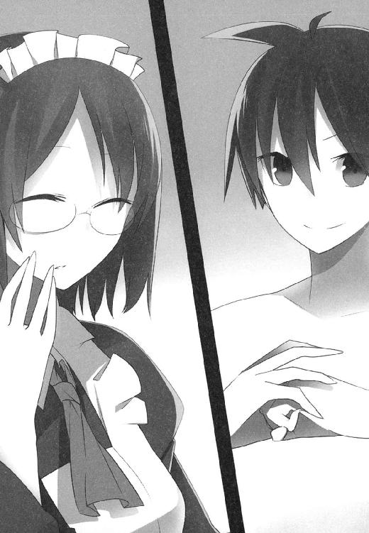
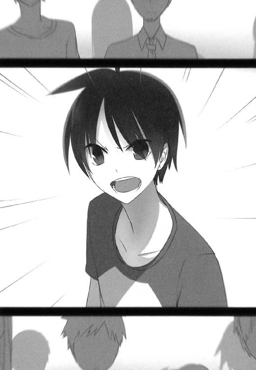

| 1×10藤宮十貴子は懐かない5 (富士見ファンタジア文庫) | |
| 鈴木 大輔 & ＰＡＮＤＡ | |
| 富士見書房 (2011) | |

本作品の全部または一部を無断で複製、転載、配信、送信したり、ホームページ上に転載することを禁止します。また、本作品の内容を無断で改変、改ざん等を行うことも禁止します。
本作品購入時にご承諾いただいた規約により、有償・無償にかかわらず本作品を第三者に譲渡することはできません。
本作品を示すサムネイルなどのイメージ画像は、再ダウンロード時に予告なく変更される場合があります。
本作品は縦書きでレイアウトされています。
また、ご覧になるリーディングシステムにより、表示の差が認められることがあります。
口絵・本文イラスト ＰＡＮＤＡ
ＡＣＴ１ 天馬も十貴子も伊達じゃない
天馬は今、海の上で昼寝をしている。
比喩的な表現ではない。
大海原にボートを浮かべて寝そべっているわけでもなければ、水上コテージのベッドに横たわってるわけでもない。
文字どおり、まさしく言葉どおりに。
彼が拠点とする島の浜からおよそ数百メートル離れた海の上に。一条天馬は仰向けにぷかぷかと浮かびながら、じっと目を閉じている。
（......来ねえなあ）
うとうと微睡みつつも、わずかな部分だけ覚醒している脳の片隅で。天馬はちょっと待ちくたびれていた。
『修行』と称して単独行動を始めてから、二十八日目。
衣服ひと揃えと己の身体のみを持ち込み、人っ子ひとりいない、電気もガスも水道もない島に渡って、早ひと月が経とうとしている。
その身体は見事な黒に焼け、黄色人種の面影は目鼻立ちに残るのみ。細身だった肉付きも一回りサイズを増してよく引き締まり、ほとんど別人と呼んで差し支えないほどに変貌を遂げている。さながら黒豹、あるいはマサイの戦士を思わせる、見事な化けっぷりであった。
（......来ねえ）
全身をリラックスさせ、それでいて適度な緊張をみなぎらせつつ。もう一時間もこうして待っている。しかし天馬が待ちこがれる『思い人』の気配はまだ、茫洋たる大海の深淵にあって遠い。
空を渡る風は、少し前に降ったスコールの香りを含んで重く。しかし吹きゆく都度に湿度を落とし、再びまた海から立ち上る水蒸気を纏っていく。
生ぬるい、しかし透明度の高い海水が、思いのほか速い海流となって天馬を沖へ沖へと押し流そうとしている。
紫外線は多少の入道雲などモノともせず、すでに真っ黒に焼けた天馬の肌をさらに黒こげにすべく、後から後から降り注いでくる。
そんな中、天馬の感覚はひどく研ぎ澄まされていた。ともすれば、何キロも離れた海をゆく船のスクリュー音さえ拾えそうなほどに。
がしかし、その感覚はあくまで脳の片隅で行われている、微細な活動に過ぎない。
天馬の脳の大部分、ひいては彼の全身の大部分は、『昼寝をしている』としか言いようのないほど脱力して──何かの機械で測定すれば、さぞかしアルファ波がドバドバ出ているであろう、そんなコンディションが保たれている。
九分九厘の弛緩と、小数点以下のわずかな緊張。
相反するふたつが同居する、不思議な感覚の中に天馬はいる。
（悪く、ねえ）
昼寝をしている、と言って差し支えないはずだ。
あらゆるデータを取り、世界中のどんな学者にそれを分析させたところで、彼らは統一された見解を出すはずである。
が、他ならぬ天馬の認識はちがう。
昼寝？ いやいやとんでもない。
むしろその真逆。
彼は今、全力で臨戦態勢にある──この一か月の総仕上げとなる、とある試みに挑むために。
（──お？）
ぴくり。
天馬の眉がわずかに動く。
背中に感じる海の雰囲気が。ふいに変わった。
渦を巻いて群れていた小魚たちが、慌てふためいて散り散りになる気配。
それらを捕食の対象にしていた大型の魚たちが、さらに輪を掛けて右往左往する気配。
（来た。来てくれたぜえ）
確信は何もなかった。
ここでこうして待っていたところで、あちらさんがわざわざ来てくれる保証はどこにもない。
いや。むしろ確率はひどく低い。
ゼロに等しいと言っていいほど低い。
なにせこの大海原にはエサがいくらでもいる。わざわざ天馬を捕食の対象に選ぶ必然性はどこにもない──のだが。
（ツイてるねこりゃ。あれだな、なんつーか『流れ』ってやつがけっこうおれに来てるのかも？）
休眠していた脳の領域が急速に再起動していく。
同時にドーパミンやらエンドルフィンやらの脳内物質も大盤振る舞い。コンマ数秒で迎撃態勢を整え、あとはあちらさんが意を決してくれるのをじっと待つ。
巨大な体積を持つそいつが、天馬の下方二十メートルのあたりでゆっくり回遊しているのを、間断なく肌で感じ取る。
ゆらゆら、ぬらぬらと──波間を浮遊する捕食の対象を物色するような、そんな動き。
おそらくは、皿の上に載せられたメインディッシュの見た目と香りを、まずは堪能しようとしているのだろう。
そんな風にたっぷりと間を置き、さんざん焦らしておいてから。
ようやくそいつが動いた。
どうやら天馬をご馳走であると判断してくれたらしい。徐々に回遊の深度を上げ、泳ぐ速度も同時に上げていって──そして転瞬。そいつは鰭を激しく振り、一気に天馬へと襲いかかる。
（うひょお。すっげえ圧力）
それらの一切を背中に感じつつ、天馬の脳内も一気に加速。現時点における自身のスペックを最大限に発揮できる準備は整った──のだが。
（わかっちゃいたけど、やっぱハンパねえ......こりゃマジでやべえかも？）
天馬が求めるもの、あるいは彼が求められているレベルは、無謀なほどに高いもの。
ゆえに今回のミッションにも進んで挑んだのだが......これはさすがに無謀の度が過ぎただろうか。
「つってもまあ、今さらな話だよなあ！」
死に体を装って仰向けに浮いていた身体をひねり、立ち泳ぎの体勢に移行。
それと同時、大口を開けてエサを丸呑みにしようとするそいつの鼻っ柱に足をかけ、膝を曲げて突進の勢いを殺す。
ずばしゃあっ！
まるで魚雷でも爆発したような水柱が立ち、天馬と捕食者が一緒くたになって空中へと躍り出る。
体長五メートル、体重一トン超。
膂力、機動力、そして獰猛さ。いずれを取ってもずば抜けた、言わずと知れた海の王者──ホオジロザメ、その堂々たるお出ましだ。
「さあて、ちょっくらつき合ってもらうぜ!?」
一声吠えて、一条天馬のスイッチは完全に切り替わる。
海上において、最強無比の海の王者に身ひとつで打ち勝つという、馬鹿げた挑戦の達成を目指して。
＊
その日の夜。
太平洋上に浮かぶ、とある無人島にて。
「あーくっそ！ 失敗したあ！」
天馬は砂浜に寝転がり、もう何度目になるか知れないセリフをくり返した。
「ちくしょう、けっこう惜しいところまで行ったんだけどなあ......いい感触で何発も蹴りが入ってたし。あのまま続けてればたぶん勝てたんだけど！」
ごろごろ。
ごろごろ。
砂地をローラーがけするみたいに、何度も転がる天馬。
「──ま、いいんだけどさ」
ぴたり。
子供が駄々をこねるような醜態を見せていた天馬が、急に真顔に戻る。
「勝つのが目的だったわけじゃない、腕試しするのが目的だったんだから」
もっと言えば、腕試しだって手段のひとつでしかない。
すべては『藤宮十貴子を世界一の魔法使いにする』という誓いを果たすための通過点。
サメ相手の勝った負けたにこだわる意味はない。
そもそも『あのまま続けていれば』というが、それも何百発とクリーンヒットを入れられればの話。そのためには数時間からの時間が掛ることが予想される。天馬はともかくとして、そんな余興につき合ってくれるほど野生のホオジロザメはヒマではあるまい。
すなわち『負けなかったこと』は、そのままイコールで勝利に等しいとさえ言えるはずなのだが。
「ああくそ！ でもやっぱ腹立つわあ！」
けっきょく再び、焚き火の明かりが照らす砂浜で、ごろりごろりと転がるのだった。
「──おっ？」
とその時。
何かの気配を感じた天馬が動きを止め、海の方へ目を向ける。
月明かりの薄い今夜は視界が悪い。日中はコバルトブルーに輝く珊瑚礁の海も、今はただ深い闇に眠り、寄せては引いていく波頭を視認するのも一苦労なのだが。
「おおおおっ？ あれってもしかして......？」
しかし天馬には、夜の海からやってきたその人物の姿が見えるようだった。
およそ十分後。
焚き火の明かりを目指してこちらへやってきた人影が、徐々にくっきりと浮かび上がってきて。
「うひょう！ お久しぶりっす山田さん！」
「はい。お久しぶりです天馬さん」
藤宮家のスーパーメイド、一か月ぶりのご登場である。
「......逞しくなられましたねえ」
ひとしきり再会を喜び合った後。山田さんはそう言って目を細めてくれた。
「一瞬、人違いではないかと思ってしまいましたよ。本当、見事にお変わりになられたようで」
「いやーそうっすよねー。ホント真っ黒ですもんね、おれ」
「焼けましたよね、本当に」
「ですよねー。黒人かよ、って自分で思うくらいだし。控えめに見てもポリネシア系の人みたいだし。見分けつかなくなるのも当然っすよ」
焚き火を挟んで談笑するふたりの姿は、天馬がボロボロになったハーフパンツ一丁。山田さんはきちんと糊の利いたメイド服。
そしてロケーションは南の海の無人島。
なかなかシュールな光景である。
「肌の色だけではありませんよ天馬さん。ひと目見てすぐにわかりました。この一か月、あなたがどれほどの努力を積み重ね、どれほどの結果を手に入れてきたのか」
「うへへ。それほどでもないっす」
「まあ天馬さんなら、滅多なことで死にはしないと信じていましたけどね」
「うっす。どうもっす」
「それでもサバイバル生活で半死半生、というケースは当然ながら想定して、医療品とかも船に積んできたのですけど。どうやら取り越し苦労でしたね」
「いやあすいません。せっかくの用意を無駄にさせちゃって」
「見たところ、ほとんどケガらしいケガもされてないようで」
「ういっす、おかげさまでどうにか。いやまあ、ヤバい瞬間は何度もありましたけどね。深いところに素潜りしすぎて意識がブラックアウトしそうになったりとか。登ってた木の枝が折れて垂直落下するとか」
「まあ」
山田さんは目を見開いて、
「そんな危ないこともされていたんですか」
「ういっす。あとあれっすね、今日のサメとかもやばかったっすね」
「はあ。サメ」
「ええサメです。ホオジロザメ。あいつの場合、ちょっとミスったら脚の一本ぐらい余裕で持ってかれるし。海の上でそんなダメージ食らったら、さすがに生き残れないし」
「......つかぬことを伺いますが」
「ういす」
「それはあれですよね、この島でやっていた修行の話をなさっているんですよね」
「そうっす。修行っす」
「まさかとは思いますが。海でサメとケンカでもしたのでしょうか」
「いやあ。やってみれば意外とできるもんっすよ」
天馬が昼の出来事をざっと説明すると、山田さんはため息をついて、
「そんな無茶苦茶な......生身で、魔法も使えない身で、それも海の上で、サメとタイマンなんて。おおむね自殺に等しい行為でしょうに......いえ、むしろそこまで無茶をしてもなお、無傷で帰ってこれることを褒めるべきなんでしょうけど。本当、よく生きて帰ってきましたね天馬さん」
「えへへ。もっと褒めてください」
「褒めません。というか褒めてません。天馬さん、あなたはもっとご自分を大切にするべきです。この島に来た理由は、命がけでサメと戦うことではないでしょう？」
「もちろんっすよ。大丈夫っす、手段と目的をごっちゃにはしてないっす」
「もう十分すぎるほどごっちゃにしてます。おそらくは、一か月にわたる修行の総決算として、そういう真似をなさったんでしょうけど......それにしても無謀の度が過ぎます」
「いやまあね、常識的に考えて無謀なのは分かってたんですけど」
困り笑いで頭を搔きながら、
「でもまあ、なんというか。やれる気がしたんすよ」
「やれる気がしただけで何でもできるなら、人生誰も苦労はしません」
「いや、そりゃまあそうなんすけどね」
うーん、と天馬は夜空を仰ぐ。
そのまましばし黙考してから、
「言葉じゃちょっと説明しづらいんすけど。おれの言う『やれる気がする』ってのは、おおむねイコールで『今の実力でやれること』なんで。だからたぶん大丈夫っすよ」
「それはまた......ずいぶん大きく出られましたね。自信満々じゃないですか、以前の天馬さんからは考えられないほどに」
「いやまあ。ここまでやれるとは、自分でも正直思ってなかったすけどねい」
なんつーか......と言葉を選んでから、
「あれです山田さん。この一か月、けっこうおれ無茶なことやってきまして。『そろそろ限界かなー』って思うことが何度もあったんすけど。でもそういう壁的なものにぶつかってもですね、すぐにまたその壁をぶち破って、次のステップに進めちゃう、みたいな。全力で突っ走って、走って走って、そろそろヤバイってところまで行っても、まだその先へ行けちゃうみたいな。最近そういう感覚があるんすよね、なんか。......んーすいません、なんか上手く言えないんすけど」
「本当の限界がどこにあるのか、天馬さん自身にも見えてこないと。つまりはそういうことでしょうか」
「そんな感じっすかね。いや、昔はそんなことなかったんですけどね。なんか最近は妙に調子いい感じなんす」
「なるほど。そうなんですか」
と言って、今度は山田さんのほうが黙り込む。
炎に照らされたその顔は、まるで難問に突き当たった学者か何かみたいで。そんな彼女もそれはそれで魅力的であり、一か月ぶりの再会だけにそのありがたみも尚更というか。
「いや。大丈夫っすよ山田さん」
白い歯を覗かせてニカっと笑い、天馬はフォローを入れる。
「大丈夫っす。ちゃんとわかってますよ。よしんばサメに勝ったところで、別に魔法使いに勝てるわけじゃないですしね」
「......まあ、その点を押さえておいていただけるなら、それほど心配することもないかもしれませんけど。見た目だけじゃなくて、中身もきっちり化けておられるようですし」
「ういす。どうもっす」
「明日で約束の一か月です。修行の成果、存分に見せてくださいね？ 天馬さんのご希望どおり、この一か月はすべてご自由に使っていただいたのですから」
「ういす。微力を尽くします。......ええとそれで、藤宮のことなんですが」
ようやく本題である。
「あいつどうしてます？ ちゃんと無事にやってますかね？」
天馬と絆魂した状態にある彼女は、天馬から生命力を分けてもらわなければ生きてはいけない。
それを今回、無理を言って天馬の単独行動を認めてもらったのだ──『世界一の魔法使い』藤宮空子を打倒する、その一助となるために。
十貴子の夢、『世界一の魔法使いになること』を叶えさせるために。
とはいえ何しろ一か月である。
その間、十貴子は無補給で生きていかねばならない。むろん、消耗を抑えて生活する限りにおいては一か月ぐらいは保つ、というお墨付きはもらっているのだが。
「コレットとか空子さんに何をされても、どんなちょっかいを出されても、あいつは貝みたいにじっとしてるしかないわけで。藤宮の性格からして、それってかなりキツいことだったと思うんですよね」
「ええまあ......その点につきましては、おおむね想像どおりの事態になったのですが」
「？ 何かあったんすか？」
「はい。わたしがこうして少し早めにお迎えに上がったのも、そのあたりの事情をあらかじめご説明しておくべきだ、と判断したからなんです」
ふう、とため息の山田さん。
「......何か面倒なことがあったんすね」
「ええ。まあ端的に、率直に言ってしまいますとですね。天馬さんが一か月前までいたあの島なんですけど」
「藤宮家の別荘がある、ほぼ無人島のあの島ですよね。あれがどうしたんです？」
「現在あの島は事実上、コレットさんの支配下にあります」
「はあ。あのちびすけの？ 何でまた？」
「理由はシンプルですよ」
そう言って彼女は、困り笑いと苦笑いのごった煮みたいな表情を作り、
「負けたからです。空子お嬢さまが」
「はあ。......え？ いま何て？」
「空子お嬢さまが負けた、と言いました。世界一の魔法使いであり、あの島の事実上のオーナーであり、支配者でもあった空子お嬢さまが。コレットさんに魔法勝負で負けたんですよ。いともあっさりと」
＊
以下、山田さんから聞かされた状況説明のまとめである。
天馬がひとり修行に出た後の数日間は、さしたる問題もなかった。
もちろん『問題なかった』というのは、十貴子を除いての話である。
天馬というエネルギー補給元を失った彼女にしてみれば、コレットと空子のセクハラ行為（という名の愛情表現）に抵抗する術はない。ただ黙って歯を食いしばり、屈辱的な行為の数々に甘んじる──そんな日々を、天馬が帰ってくるまで堪え忍ばねばならないのだから、たまったものではなかったろう。
だがしかし、である。
十貴子にとって悪夢以外の何ものでもないとはいえ、それだけといえばそれだけの話なのだ。いわばそれは『想定の範囲内の悪夢』とでも言うべきであり、一か月という時間を堪え忍びさえすれば、雪辱の機会はすぐにでもやってくる──本来ならそういうシナリオだったはずだし、何事もなければシナリオどおりに事は進むはずだった。
「......ところがその『何事か』が起きてしまったわけです」
その場に居合わせたわけではないため、詳細は山田さんにも分からないのだという。
あとで事情を聞いたところによれば、原因は些細なことであったらしい。
元より気の短い性質だったコレットが、ちょっとしたきっかけからエキサイトし、何がどう間違ったのか世界一の魔法使いである空子にケンカを売り、あろうことか勝利を収めてしまった──事の概要は、言ってみればそれだけである。
「お互いに意気投合していたはずの空子お嬢さまとコレットさんが、どうして衝突することになったのか。それはわたしにもわかりません。コレットさんは『なんとなく！ ノリで！』みたいなことしか答えてくれませんし。空子お嬢さまはニコニコ笑ってはぐらかすばかりだし」
もっとも『ひゃっはー団』の同志として、共に十貴子へのセクハラを楽しんでいた二人である。その一件の後も、別に両者の関係は険悪になったりはせず、今でも相変わらず仲は良いらしいのだが......さしあたりその辺は問題ではない。
問題なのは『世界一の魔法使い』に、十貴子が逆立ちしても敵わなかった藤宮空子に、コレットが勝ってしまったことである。
「もっとも協会が定めた制度によれば、『世界一の魔法使い』は今もなお空子お嬢さまのままです。空子お嬢さまが持っている『世界一の魔法使い』の座に挑戦できるのは、今のところ『世界で二番目の魔法使い』である十貴子お嬢さまだけですから」
コレットと空子のケンカは、いわばエキシビションマッチというわけである。
ボクシングであれなんであれ、そこらの野試合でチャンピオンを決めたりしない。
それなりに権限を広く認められた組織による認定があって初めて、ランキングなりタイトルなりは変動する。その点は空子の保持する『世界一の魔法使い』という称号に関しても同じことだ。
「ゆえに、依然として公式な認定に変化はありません。十貴子お嬢さまは空子お嬢さまに次ぐランク付けであり、コレットさんのランクはその二人よりもぜんぜん下、ではあるのですが......」
そこから先は説明されずとも想像がつく。
十貴子が手も足も出なかった相手に、コレットは誰も予想しえなかった大勝利を収めた。
十貴子のライバルを自称する金髪の魔法使いにとって、それがどれほどの大成果であったのか。
コレットに対して圧倒的な実力差を見せつけ、滅多なことでは後れを取らなかった十貴子にとって、それがどんな屈辱であったか。
天狗になったコレットがその後、一か月にもおよぶ長きにわたり、十貴子に対してどんな態度を取ったか。
「......藤宮のやつ、ちゃんとガマンできたんすかね？」
「ええまあ、どうにか。挑発に乗ってケンカを買ってしまえば、ご本人の命に関わりますし。そもそも天馬さんが傍にいない限りはまともに戦うことも覚束ないので。どれだけ血の涙を流したところで、結局は堪え忍ぶしかありません」
「まあそうっすよね......」
心の中で十字を切る天馬であった。
それにしても解せないのは、あのちびっこがどうやって空子に勝ったのか、である。
空子、十貴子、コレットの三者における順列は、明確に決まっていたはず。十貴子にすら及ばないコレットが空子を凌駕するなんて、あり得ることなのか？
「コレットさんが強くなったのは確かです」
と山田さんは証言する。
「沢木さんをパートナーに迎えて以来、彼女の力は明らかに飛躍しました。進化と言ってもいいでしょう。考えなしの力任せだったスタイルが、沢木さんというブレーンを得て一皮むけましたね。沢木さんが魔法を覚え始めて、コレットさんの潜在能力を上手に引き出している向きもありますし」
沢木悠太郎。
天馬の親友であり、天馬の背中をずっと追いかけてきた少年。
そして『天馬越え』の目標を公言しているライバルでもある。
確かに彼のサポートを得られるのであれば、コレットの成長も頷けることではあるが。
（......藤宮には悪いことしちまったなあ）
ただでさえ彼女には大層な借りがあるというのに、今回もまた随分な負担を掛けてしまったらしい。
「了解っす山田さん。事情は大体分かりました。山田さんがおれに何を求めているのかも想像つくっす」
「そう言っていただけると助かります。どうか十貴子お嬢さまのご心情をくみ取っていただいた上で、適切な対処をしていただければ幸いです」
「大丈夫、任せてくださいっす。せっかく作ってもらったこの一か月、無駄にはしなかったつもりっすから」
「ありがとうございます。......ただ、ですね」
と言って、藤宮家の忠実なメイドさんは複雑な表情を作る。
「実を言いますと、問題はそれだけではなかったりしまして」
「はあ。と言いますと？」
「ええまあ......その辺りは天馬さんご自身の目で確かめてもらったほうがいいでしょう。正直わたし、現在のあの島の状況を上手く説明する自信がありません」

「............？」
「ともあれ今日はゆっくりお休みくださいな。明日、島に戻ればすべてお分かりになるでしょうから」
＊
そして翌日。
「......なんじゃこりゃあ」
山田さんの運転するクルーザーに揺られ、一か月ぶりの帰還を果たした天馬の第一声がそれだった。
「山田さん？」
「はい」
「この島って、藤宮家所有の、概ね無人島なんでしたよね？」
「はい。その通りです」
「ちょっとした港と別荘がある以外は、ほとんど人の手が入ってない自然が残されてて、何人かのスタッフを除いては定住してる人間は誰もいないって。そんな話を聞いたように記憶してるんですけど」
「ええ。まったくおっしゃる通りで」
「とすると何なんすかね？ この状況は」
そう言って天馬は、浜辺で待ちかまえていた群衆をざっと見渡した。
群衆、である。
十や二十ではきかない。
何百人、ひょっとすると千人に届こうかという、人の群れ。
人種も服装も多種多様な老若男女たちが列をなし、あるいは垣をなして所狭しとひしめき合って。
ある者は口笛を鳴らし、ある者はヤジを飛ばし、まるっきりお祭り騒ぎの様相を形成しつつ。帰還した天馬を待ちかまえていたのだった。
『あれがテンマか!?』
『なんだ黒人じゃないか！ 東洋人じゃなかったのか!?』
『ぜんぜん弱そうなんだけど、ホントにあれがあのフジミヤトキコの使い魔なわけ!?』
『なんでもいいからさっさと始めちまえよ！ いいかげん待ちくたびれたし！』
......など、など。
騒ぎの中から、そんな意味合いの言葉がそこかしこから上がっているのが耳に入る。
日本語だけではない。
天馬がうっすら聞き取れた限りにおいても、英語やら広東語やらスペイン語やらスワヒリ語やら、様々な国の言葉が混じっているようで。
「山田さん」
「はい」
「あの連中って、ひょっとして......？」
「お察しの通りですよ天馬さん。あそこに居るのはすべて魔法使い、ないしはそれに類する方々です。今日この日、天馬さんが修行から戻ってくることを知って、ああして勢揃いしてるんでしょう」
「あーいや。いやいやいや」
一体どこから突っ込んだらいいのだろう。
魔法使いってあんなにいたのか、とか。
もしかして今日の日のために世界中から集まってきたのか、だとしたら一体どんだけヒマ人揃いなんだ、とか。
決して小さくはないが、さほど広くもないこの島に、あれだけの人数を収容できるだけのインフラがあるのだろうか、とか。
よくよく見ると、港の周辺に見覚えのない建築物が──屋台とか食い物屋とか土産物屋と思しきものがズラリと並んでいるのだけど、あれは一体なんなのか、とか。
そんなもろもろの疑問を頭の中で整理している天馬の耳に、
「にゃ────────っはっはっは！」
聞き覚えのある高笑いが聞こえてきた。
そちらに目をやれば、何やらお御輿らしきものが一挺、人垣を割って進み出てきて。
数人の男たちに担がれたそれに乗ってふんぞり返っているのは、ご存じちびっこ金髪魔法使いであった。
「よーやく帰ってきたわね、てんま！ このあたしコレット・ラ＝サールを今日まで待たせるなんて良い度胸すぎるけど！ まあ最近のあたしは機嫌がいいから許してあげなくもないわ！」
「......つか。何やってんのお前」
ジト目で問いかける天馬。
宝石をちりばめた王冠を頭に載せ、深紅のローブを身に纏い、黄金のメイスを手にしたその姿は、南国の島にはあまりに不釣り合いだし。
小鼻をふくらませて小さい胸を反り返らせているあたり、いかにも頭の足りないお子様という感じだし。
「なんつーか、控えめに表現しても救いようのないアホに見えるぜ？ 空子さんに勝ったからって天狗になってんだろうけど、ちと頭冷やしたほうがいいんじゃねえの？」
「ふーんだ！ この世の中はね、勝ったヤツがえらいのよ！ でもって『世界一の魔法使い』であるくうこに勝ったあたしは、それはもうちょーハンパなくえらいわけ！ そこんところちゃんと理解しなさいよね！」
「そりゃ勝ったヤツは偉いんだろうけどさ。だからといってお前が頭の悪い格好してふんぞり返るのが肯定されるかっていったら、わりと微妙だと思うんだけど。......なあ、そう思わねえか沢木？」
と。
御輿のそばに控えていた親友に、天馬は声を掛ける。
「お前、確かコレットの相棒になったんだよな？ 相棒のこういう姿を見てどう思うか、ちと感想を聞かせてくれねーか」
「ノーコメント」
天馬の親友にしてコレットのパートナー、沢木悠太郎の返答はそっけない。
「コレットが自分の実力を証明している限りにおいては、俺は彼女の趣味や嗜好に口出しする気はないよ。彼女は空子さんに勝ってその力を知らしめてるわけだし、特に俺の口から言うことは何もない」
「ただし言いたいことは山ほどある、ってツラしてるけどな」
天馬は肩をすくめ、
「それで？ けっきょく何がやりたいんだ石井」
「石井っていうな」
「王様気取りで、こんだけのギャラリー引き連れて登場して、それで何をどうしたいのか。おれに説明してくんねーか？」
「......ふん、そんなの言うまでもないでしょ？」
コレットは鼻で笑って、
「それとも説明されなきゃ分かんないわけ？ これだけお膳立てされてもまだ分かんないっていうんなら、あんたの頭の中身はカボチャか何か、ってことになるけど」
「いいや？ ちゃんと分かってるぜ？ いちおう確認しといただけで」
いったい何がどうなってるのか、なんてのは二の次だ。
魔法使いだらけになっているこの島の状況も、それに戸惑っている自分の感情も、極めてどうでもいい。
どんな状況であろうと確かなのは、いま天馬がすべきこと、彼の目指すところはひとつしかない、ということ。そしてギャラリーの誰かが言ってたように、誰しもが『待ちくたびれている』ということだ。
待ちくたびれているし、これ以上待つ気もない。
誰も彼も──ギャラリーたちも、コレットも、沢木も、山田さんも。
そしてもちろん、誰よりも天馬自身が。
「待たせちまって悪かったな。さあ始めようぜ、そのために出迎えてくれたんだろ？」
「......へえ？ なんか自信満々じゃない？」
コレットは目を細めて、
「この一か月間、ひとりでチマチマ何やってたのか知らないけど。前みたいなへなちょこのままじゃ、こっちとしてもつまんないし。すぐにでもぶっ潰してあげたいのをぐっとガマンして、今日まで待ってあげたんだし、ちゃんとそれに見合うだけのものは見せてくれるんでしょーね？」
「おうおう、何だよちびすけ、口数が多いじゃねえか。ごたくはいいから早く始めちまおうぜ？ このままじゃあれだ、ギャラリーの方々が暴動を起こしかねんからな」
自己中心的で個人主義的で、ひいては享楽主義的で放埒的で、時どき厭世的。それが魔法使いの基本的な性質である。
そんな彼らが、『忍耐』とか『辛抱』とかの美徳に秀でているはずもなく。とっくにヒートアップしている彼らの扱いを仕損じれば、どんな事態になるか知れたものではない。
「ふん。言われなくたって」
コレットが顎をしゃくると、彼女の取り巻きと思しき数名が後ろに下がる。
しばしの後、そいつらに引き立てられて姿を現したのは。
「絆魂した相手がそばにいないと、マトモに力を出せないんだったわよね？ じゃあてんまが帰ってきた今日は、ちゃんと実力が発揮できるってことよね？」
「............」
藤宮十貴子。
一か月ぶりに見る相棒は、奴隷か何かのように首輪で鎖に繫がれたまま、無言。
力なく頭を垂れた姿からは、その表情すらうかがい知れない。
「ねえときこ。あんたを倒さないと、あたしは胸を張って世界一とは言えないわけ。わかる？ もちろんあたしがサイキョーだってことは、今さら証明するまでもなく明らかなんだけど、それでもあれよね、誰の目からもハッキリわかるように事実を示してあげることも、サイキョーなあたしにとっての義務なわけよ」
「............」
「でも弱ってるあんたに勝ったって、ぜんぜん面白くないし、意味もないし。ほら、お待ちかねのてんまが帰ってきてるし？ さっさと生命力の補給なりなんなり済ませて復活して、でもってさっさとあたしに負けなさいよね」
「............」
「ほらあ。さっさとしなさいよときこ。てんまが帰ってくるまで待ってあげたのに、この上まだあたしを待たせようってわけ？ 早くしてよね、このあとの予定だっていろいろ詰まってんだから。お昼寝したりとか、おやつ食べたりとか」
取り巻きたちが首輪と鎖を外し、囚われの身からは解放されるが。
それでも十貴子の反応はない。
「......んもー、さっさとしなさいって言ってるのに！ これ以上待たせると、戦意喪失で不戦勝ってことにするからね!? それでもいいわけ!?」
「............」
「そんなことになったら、わざわざギャラリー呼んだあたしの立場がないでしょ！ ちょっとはこっちの身にもなりなさいよっ！」
先ほどまでの王様気取りはどこへやら。
いつもの短気な子供に戻って、手足をバタつかせながらちびっこがわめく。
「............」
それでもなお、無言で佇んでいた十貴子だが。
やがてようやく一歩を踏み出し、ふらりふらりと覚束ない足取りで、こちらへ近づいてくる。
「──よう。ただいま藤宮」
「............」
「元気でやってたか？ って、んなわけないか。この一か月はあれだもんな、まったく『補給』なしだったわけだし。最低限に消耗を抑えればギリギリ保つ、っていっても、元気でいられるわけねーわな」
「............」
「あー......」
ぽりぽり。
頭を搔きつつ、俯いたまま目の前まで近づいてきた相棒から目をそらし、
「いや。すまん。いちおうお前の許可はもらったわけだし、ちゃんと約束どおり一か月で戻ってきたけど。でもまあ原因はやっぱおれにあるわけだし、謹んでお詫びを申し上げたいというか、お悔やみ申し上げたいというか──」
「あらかじめ言っておきますが」
ぼそりと。
聞き馴染んだ声が鼓膜を震わせる。
相変わらず俯いたまま、水死体みたいに生気のない様子で、
「これからわたしが何をしようと勘違いはしないでください」
「へ？......うおっ」
抱きつかれた。
ぎゅっと背中に両腕を回されて。
ハグ、という感じではなく、むしろ小さい子供が親を慕うような感じで。
「この一か月は。わたしにとって悪夢そのものでした」
浜辺に集った魔法使いたちは、相変わらずヤジと歓声のごった煮を上げ続けている。
闘争の熱気、祭りの酔い、その他もろもろのフラストレーションを早く吐き出させろとばかり、それぞれに勝手な言葉を叩きつけてくる。
そんな中、十貴子の声はあまりにか細く、弱々しく。
しっかり聞き耳を立てていなければ、あやうく聞き落としてしまいそう。
「肩を、揉まされました」
「お、おう？」
「肩だけじゃありません。腕も、脚も、背中も──コレットの気が済むまで、隅々までマッサージさせられました。何か少しでも失敗すると、グズだノロマだとさんざんに罵倒されました」
「まあ......災難だったな」
「挙げ句、お返しをしてあげるとか恩着せがましいことを言われて、わたしの身体のいろんなところを触られました。わたしの方がお肌がつやつやしてて生意気だとか、身体の線は細いくせに何気に胸があるのが気に入らないとか、好き勝手にいちゃもんをつけられました」
「あの、というか藤宮さん？ なんつーかその、いろんな人が見てる前なんで。そういう情熱的な抱擁はなるべく遠慮してもらえれば、というか。いやまあ、今のお前にそれが必要なのはわかってるけどさ、生命力を回復するにしたって、もうちょっとやり方があるんじゃないかっていうか」
「お風呂にもいっしょに入らされて、身体を洗えと命じられました。ベッドに入る時は抱き枕の代わりにさせられました。食事の給仕をさせられ、『あーん』もさせられ、食べ散らかした食事の片付けもさせられました」
「......それってなんつーか、おおむねいつもと変わらない気がするんだけど」
「姉さんに勝ったことを、嫌というほど自慢されました」
十貴子は聞く耳もたない。
胸元に顔を埋めながら──再会したのにまだ彼女の顔を見ていない──何かのプログラムのように、ほとんどオートマチックに。報告を続ける。
「ええ毎日聞かされましたとも。少なく見積もっても一時間に一回、むしろ口を開けるたびにその話題が出ないことはなかったと断言してもいいくらいです。その上で、わたしのことを散々にこき下ろしてくれました。空子なんてぜんぜん弱くて楽勝だったわ、なのに十貴子は空子に手も足も出ないなんて、一体どんだけしょぼいのかしら、と」
「............。そうか」
「その程度で世界一を目指してるなんてちゃんちゃらおかしい、味噌汁で顔洗って出直してこい、と。しょせんあんたなんてそんなもんだし、せいぜいあたしの下僕をやってるのがお似合いなのよ、いい加減になれもしない世界一なんて夢は捨てちゃえばいいんじゃないの、と」
天馬にぴったり抱きついたまま、淡々と十貴子は語る。
「まさしく言いたい放題でした。そしてわたしはそれに耐えるしかありませんでした」
「ああ......悪いことしたな」
「そして今、コレットは苛立っています」
「ん......？」
「確かに沢木さんと組んでからの彼女は、以前とはひと味ちがいます。ですが、ああして苛立っている状態なら。いくらかは与しやすくなるでしょう」
なるほど、と天馬は思う。
つまり策略だった、ということか。
死に体のふりをして、コレットの言葉への反応を遅らせたのも。こうして公衆の面前で、じっくりたっぷりと長きにわたって抱きついているのも。
事実、御輿に乗ったコレットは貧乏揺すりをしつつ、歯ぎしりしてこちらを睨みつけてきている。若い男女ふたりの抱擁に対して黄色いヤジが飛ぶたびに、その視線が鋭くなってもいる。
「......いいね。悪くないぜ藤宮」
はらわたは煮えくり返っているはずである。
今すぐにでも怒りをぶちまけ、爆発させ、一秒でも早く借りを返したいはずだ。
それを表に出さず、しかしながら一方ではきっちりそろばんを弾いている。
心は熱く、一方で頭はクールに。
戦いへ臨むに際して、これ以上のコンディションはあるまい。
「この一か月。成果は上がりましたか？」
「おうよ。まあまあだな」
「あれだけ大見得を切ったにもかかわらず、何も得るところがなかった、なんてことになったら。わたし承知しませんから」
「まあ......がっかりさせることはない、と思うんだけどな。たぶんだけど」
「そうですか。それならいいんですが」
「つかそういうのって、お前なら分かるんじゃないの？ こうしておれから生命力を補給してるわけだし、お前って魔法使いだし。むしろおれの方が聞きたいぜ？ おれがこの一か月でどのくらい変われてるのか。お前の目から見てどうなんだよ」
「............」
沈黙。
しばし、ヴィンテージのワインを注意深く賞味するような間があって、
「......強靭で、しなやかで、それでいて無尽蔵。そんな感じです」
「おお。なんかすげー褒め言葉っぽくね？」
「加えて身体だけでなく──いえむしろ身体以上に。心が、精神面が鍛えられているように感じます。なんだかちょっと得体が知れないほどの......底知れない何かを感じます。この一か月、いったい何をやっていたんですか。これではまるで──」
まるで昔に戻ったみたい、と。
そんな言葉をつぶやいた気がするが。ギャラリーの上げる騒音に紛れて定かではない。
「こんな風になれるなら、最初からやればいいのに。本当にあなたという人は」
「まあそう言ってくれるなよ」
命がけだったのだから、本当に。
一度は心折れたこの身である。
かつて大志を抱き、そこへ向かって突き進み、行けるところまで行った果てに手放して。
すべて忘れて平凡に、のんびりだらだら生きていくことに決めて。
だけど十貴子の姿に刺激されてもう一度立ち上がって。
そして再び壁にぶち当たった。
ぶち当たって、でも今度は立ち止まらなかった。
一か月、である。
長い時間ではない。ひとりの人間の中身を丸ごと入れ替えようというのだ、本来であれば一年でも十年でも欲しいところである。
そのわずかな時間をフルに活用して、自分を鍛え直した。
これまでの自分の経験、知識を総動員して、己の存在そのものを刷新した。
それは新しい何かを手に入れるというよりも、かつて手放したものを取り戻す作業。
地道で、それでいて過酷な。
自分ただひとり、誰の助けも得られない、孤独な戦いである。
想像がつくだろうか。
原初の自然の中、己の身ひとつ。ただ生き残るだけでも至難であるところを、一皮も二皮も剝けた存在になって帰還を果たさねばならない。
密林をはいずり回り、時に泥水をすすり、時に得体の知れない木の実や虫を口にすることで飢えをしのいで。
無茶、無謀、あるいは無意味とすら思える修行に真剣に取り組み、そして今こうしてここに一条天馬は在る。
突貫工事ではあった。
成果が出る保証とてどこにもなかった。
が、それでもやれるだけのことはやった。その自負はある。
「ま、口であれこれ言ってもしょうがねえっつーか。とりあえず結果をご覧じろ、って感じかな。今の状況ってもうそういう段階だろ？ 今すぐにでもドンパチ始めようってんだ、『できる』『できない』の話をしたってしょうがねえ。『やるしかない』っていう、シンプルな精神論しかおれたちには残ってねえんだ。ちがうか？」
「......言うように、なったじゃないですか」
背中に腕を回し、胸元に顔を埋めたまま。
十貴子はくすりと笑ったようだった。
「では見せてください。示してください、この一か月で得たあなたの成果を。わたしの屈辱と引き替えに、あなたが何を手に入れたかを」
「了解」
そう請け負って、相棒の肩をポンと叩く。
「じゃ、そろそろいけるか？」
「............」
こくり。
小さく頷くのを確認すると、天馬は苦笑して、
「じっくりたっぷり補給して、もっと万全の体勢で闘れりゃいいんだけどよ。どうもそんな流れじゃないっぽいんでな」
自らを取り囲む状況をざっと眺め渡す。
ギャラリーどもは一秒ごとにその興奮の度を増しているし、後ろで控えている山田さんの視線からも無言の期待が感じられる。
対戦相手たるコレットは「ごるぁ!? こっちが下手に出てるのをいいことに、いつまでも見せつけてんじゃないわよッ!?」とか喚きつつ、今にも忍耐の鎖を引きちぎって暴れ出しそうだし。冷静沈着な沢木ですらも、口には出さないながらいい加減待ちくたびれている様子が見て取れる。
彼らだけではない。
無論、天馬だってテンション上がりっぱなしなのだ。
たぶんこの場にいる誰よりも。他ならぬ彼自身がこの一か月のフラストレーションを発散したがっている。
「補給の邪魔はしたくないし、好きなだけ補給してもらっていいけど。そろそろ頼むぜ藤宮。おれを派手に暴れさせてくれねえか？」
「......本当、言うようになりましたね」
絡めていた腕を外し、半歩後ろに下がって。
十貴子は忌々しそうに──それでいてうれしそうに。憎まれ口を叩く。
「ぐうたらで、だらしなくて、飼い慣らされたナマケモノよりずっと怠け者だったあなたが。まさかそんな積極的な大口を叩く日が来るなんて、思ってもみませんでした。これはあれですね、これまであなたがいかに人生をサボっていたかの、その逆説的な証明と言うべきですね。本当、やれるんだったら最初からそうしてくれればいいのに。まったくもってあなたという人は」
「......あのさー」
「なんですか」
「おれ、けっこう頑張って有言実行してきたはずなんだけどなー、と思って。危ない橋も渡ってきたし、『あ、これマジ死んだ』って思うことも何度もあったんだけどさ。なのにその仕打ちが、これ？ もっと褒められたっていいじゃん？」
「ふん。あなたにはこのくらい言っておいた方がいいんです。甘い顔をすれば、いつまたサボり出すか分からないし。わたしの苦言はむしろ積極的な予防策と受け取られるべきであり、感謝されこそすれ、非難されるいわれはないのです」
「へーへーそうですか。......つかお前、いつまで顔うつむけてんの。おれ、さっきからずっとお前の顔ぜんぜん見れてないんだけど」
「別に。特に他意はありません」
「というかおれの気のせい？ なんかお前、顔赤くね？ 耳とか超真っ赤なんだけど」
「べ、別に。気のせいでしょう、今日も日差しが強いですし」
「つかむしろ、なんかニヤニヤ笑ってね？」
「............っ!?」
ばばっ、と。
あわてて口元を押さえる十貴子。
「さてはあれだな？ 公衆の面前でいきなり抱きついたことが、今になって恥ずかしくなってきたんじゃね？ あとはあれだな、何だかんだ言っても、おれが戻ってきたことを喜んでくれてるとか」
「............」
白状すれば、である。
多少のいたずら心はあった。
頼みの綱、文字通りの命綱である天馬がいない一か月。十貴子にとって試練の連続だったことは言うを待たず、彼女にとって相棒の帰還が嬉しくないはずもない。
加えて十貴子のセリフではないが、天馬の気がいくぶん大きくなっている、というのもある。事実それだけのものを手に入れてきた、という自負はあるし。
となれば、だ。
口では何と言おうと十貴子の本心は明らかであり、その本心が見え透いているこの状況。
ちょっとからかってみたくなるのが人情というものではないか。
「............ぅぅ」
十貴子の方もまた、見透かされていることを自覚しているのか。
進退窮まった、といった態で固まってしまっている。
「んー？ あれー？ ひょっとしておれの勘違いか？ おれが帰ってきてもぜんぜん嬉しくなかったりする？」
「............そういう、わけでは」
「なんだー、そうなのかー。残念だなあ。なんかちょっとテンション下がっちゃったかも？ せっかくがんばってきて、それなりに自信もつけて、さあこれからドンパチ始めるぞって時なのにさー。いやー困った困った、こんなテンションじゃ、うまく実力を発揮できるかどうか怪しいなあ。どうしたもんかなあ」
「............っ」
「それにさ、おれはさっき『ただいま』って言ったのに。お前の方からはまだ何も言ってなかった気がするんだけど？ そのへんもさー、なんかモニョモニョしちゃうわけよ。ああやっぱ歓迎されてないのかな、本当はおれなんて必要ないのかな、みたいな。そんな風に思えてくるっつーか」
「............」
「なんかやっぱさ、そのへんキッチリしてほしいというかさ。死にものぐるいで修行して帰ってきた相棒に対して、なんかひと言あってもいいんじゃないかなー、とか思うんだけど。そのへんどうよ？」
別に本気で言ってるわけじゃない。
十貴子に対して不快感を抱いてるわけでもなければ、ネチネチいちゃもんをつけていびりたいわけでもない。
天馬としては、ここらで十貴子が怒り出してくれることを期待していたのだ。
怒り出して、平手の一発も繰り出してきて──そいつを避けつつ、ごめんごめん冗談冗談とか言って、場をほぐせればいいな、と。そんな風に思っていたのだ。
相棒は十分に冷静で、それでいて戦意も旺盛であることは、もうわかってるけど。何せ一か月のブランクがある。『補給』だってお世辞にも十分とはいえまいし、決して万全の状態ではない。
ならばその状態を少しでもプラスの方向に持っていってやるのが、彼女のパートナーをもって任じる自分の役目なのではないか、と──
「......あの」
なのに、である。
天馬が予想し、あるいは期待していたものとは、まったく別のリアクションが返ってきたわけで。
「その......何というか。ええと」
口元を手で押さえ、下を向いたまま、じっと言われるままになっていた十貴子だけど。
その手を外し、俯けていた顔を上げて。
天馬を真っ直ぐに見ようとしてやっぱりできず、視線を思いっきり泳がせながら。
「つまり、その」
「え？ なに？」
「その......おかえりな、さい」
きょとん、としてしまった。
まさか藤宮十貴子の口からそんなセリフが出てくるなんて。思ってもみなかったから。
「よく、無事で帰ってきてくれました。嬉しいです。本当に」
「あ......うん。ありが、とう？」
無自覚の逆襲を受け、今度は天馬の方がキョドってしまう。
心拍数が跳ね上がったのを、不覚とは責められまい。
おそらく彼が初めて目にするであろう、相棒の素直な態度は。それはもう、まさしく魔法かと疑うような破壊力があったから。
「あーいや、なんつーか。むしろおれの方が嬉しいっつーか？ お前からそんなこと言われるの初めてだし、いやホントびっくりした......ていうか、いつもそういう態度でいてくれりゃいいのに。ぜんぜんいいじゃん、そのほうが」
「そ、それとこれとは話が別というか、今回は特別というか......この一か月あなたがどんな苦労をしてきたかは、想像するに余りあるし。あなたが頑張っているなら、わたしも負けずに頑張らなきゃ、という気持ちがあって、そのおかげで耐えられたというか......だからそのお礼を言うのは当然だし、あなたの苦労をねぎらうのも当然で......」
「いや、ぜったい今みたいのがいいと思うぜ？ その方がぜんぜんいいって。いつもツンケンしてるよりはさ、そういう素直な感じの方が可愛いってマジで」
「っ......そ、そんな調子のいいことを言っても駄目です。今日があくまでも例外であることを忘れず、今後も精進を──」
「むっきいいいいいんがあああああああああ!?」
奇声を上げたのは天馬ではない。
もちろん十貴子でもない。
放置され、蚊帳の外に置かれ、ほぼ無視される形になっていた、哀れなコレット・ラ＝サールである。
「あーもームリ！ ぜったいムリ！ つーかカユイ！ なんかもうウザすぎて身体のあちこちがカユイ！」
言葉どおりに身体中を搔きむしりつつ、王冠と深紅のローブを脱ぎ捨てて、
「もういい加減待てないし！ ていうか待たせすぎだし！ あとイチャイチャしすぎでふざけんなって感じだし！」
もとより乏しい忍耐力をあっさり使い果たした金髪の魔法使いは、『びしっ』と指を突きつけるポーズで、
「一応、ちゃんと回復するまでガマンしたげようと思ったけど！ もうあんたらの都合なんか知ったこっちゃないから！ そういうわけでもう始める！ これ決定！──ほらさわき！」
「はいよ」
呼ばれて沢木が一歩前に進み出、コレットもまた御輿から下りて沢木の後ろにつく。
（へえ......？）
強えな、と直感で感じた。
コレット＆沢木の挙動がひどく自然で、呼吸がきれいに揃っている──そう見て取ったのである。
あのふたりとて、コンビを組んでからそう間もないはずだが。すでにしてその連携は、十分実戦に耐えるだけのレベルに達しているらしい。
（この一か月、あいつらもただ遊んでるだけじゃなかった、ってか）
歓迎できる話ではない。
彼らに比べれば、天馬と十貴子は今日再会したばかり。コンビネーションでは明らかに劣る。沢木が身につけ始めた魔法も、以前よりはずっと進化しているだろう。
「どうする藤宮？」
やっと始まるのか、とばかりにヒートアップする観衆に眉を寄せながら、天馬は耳打ちする。
「お前がどの程度『戻った』のか、おれにはわからん。おれがどの程度マシになってるかも、お前には分からんだろうし」
急展開に次ぐ急展開、準備もろくに整っていない現状だが。
今さら待ったは無し。準備が整っていようといまいと、やるしかない。
「どうする？ 何か作戦とかあったほうがいいか？」
「作戦？ そんなの要りません」
そう断言する十貴子は、すでに戦う女の顔。
「正面からぶつかって、粉砕して、叩きのめす。小細工は無用、相手の小細工を気に掛けるのも無用です」
「......いやあ。そりゃまあ分かりやすくていいんだけど」
しかし相手は、あの藤宮空子に打ち勝った難敵だ。あまりに無為無策というのもさすがにまずいのではないか。
まあもっとも、今この場で実効性のある複雑な作戦なんて立てようもないのだけど......。
「そうですね、あえて言うなら」
と十貴子。
「沢木さんの抑えは任せます」
「おう。任された」
もとよりそのつもりである。いくら鍛え直してきたからといって、ド派手になるであろう魔法バトルにいきなり首を突っ込むのは自殺行為だ。
「それと、常にわたしの方を注意していてください」
「ふむ。フォローするタイミングを窺っててくれ、ってことか？」
「いいえ。巻き込まれないように注意して、ということです」
「............」
なんだろう。
けっこう大見得を切ってきたし、それに足るだけの結果も手にしてきたはずの天馬だけど。なんだかとてつもなく不安だ。
いいのか本当に？ そんな大雑把なやり方で？
「わたしを信じられませんか？」
そんな天馬の様子に気づいた相棒が。くちびるの端を上げ、不敵に笑う。
そんな彼女を見た天馬は『ありゃまあ』と思うのだ。
こいつホント調子よさそうだな、と。
不機嫌そうで、つっけんどんで、にべもない。
天馬に対してはいつもそんな態度を取っていた十貴子のそういう、いわばノっている雰囲気を感じ取ると。そう思わずにはいられない。
「オーケー。まあやってみようか」
腹を決めて、天馬は一歩前へ。
「よう沢木。一か月ぶりだな」
「そうだな、一か月ぶりだ。お前が俺に負けてから」
親友に笑いかけると、皮肉混じりのセリフが返ってくる。
「お前の修行の話を聞いた時は驚いたけどな。約束どおり今日戻ってきたのにはもっと驚いたよ」
「へえ。なんでだ？」
「修行ってのは口実で、単にケツまくって逃げ出したんだと思ってたからさ」
「なんだ、らしくねえな沢木。安っすい挑発しやがって。ああいう状況でおれがケツまくるなんて有りえないってこと、お前なら分かってんだろ？」
始まりの合図は何もない。
が、それでもこの場にいる誰もが理解している。
天馬と沢木の間に張り詰める空気が、刻一刻ときしみを上げつつあることを。
合図などなくとも、動きのひとつとてなくとも、既にして始まっているということを。
「......で？ 実際どうなんだ沢木」
「どう、って何がだ」
「戻ってきたおれを今こうして見てみて、その感想は？」
「ふむ」
わずかな嘆息の後に、一拍の間を置いて。
沢木は『やれやれ』とでも言いたげな苦笑いをうかべ、
「見事のひと言だよ。人間ってやつはそんな風に変われるのか、って感心させられる」
「おー、そっかそっか。それ聞いて安心したぜ。正直さ、自分ではどこまで変わってるのかイマイチ自覚できねーんだよな」
「安心しろよ天馬。見てて腹が立ってくるほど変わってるから。というかそれだけやれるならどうしてもっと早くやらない？ ほんとお前ってやつは......」
「あー。そのセリフはもう藤宮から聞いたから。これ以上のお説教は勘弁だぜ」
と言って、天馬は一歩前に出る。
同時に沢木も一歩前へ。
「つーか沢木。お前の方こそなんか前よりヤバそうな雰囲気になってんだけど？ こりゃあれだな、うっかりすると簡単に捻られちまいそうだな」
「俺だってこの一か月、遊んでたわけじゃない。お前を引き離そうと思ってけっこう努力したんだ、これでも」
二歩、三歩。
四歩、五歩。
「ま、けっきょく引き離すどころか、すっかり追いつかれてるみたいだけどな」
「どうかな？ 追いついただけじゃなくて、とっくにお前を追い越してるかもしれないぜ？ 沢木よ」
「さて、それこそどうだろうな。俺としてはけっこう良い勝負じゃないかと思ってるんだけど」
「ふむ。ま、実際試してみた方が手っ取り早いか」
六歩、七歩。
足を踏み出す度に加速し、間合いが見る見るうちに詰まって。
転瞬。
まさしく瞬きひとつの間にお互いギアを入れ替え、トップスピードで肉迫。
「いくぜ沢木」
「来い天馬」
二つの声が重なって、その瞬間、名実ともに始まった。
親友同士の、魔法使いと絆魂する者同士の、因縁の再戦が──
「捻れて、潰れて、喘いで、藻搔いて、しかる後に涙目で絶叫した挙げ句、あえなく気を失ってください」
直後。
十貴子が宙を舞い、天馬の頭上を飛び越えて。
力ある言葉と共に魔法を練り、一気に解き放った。
コレット・ラ＝サールただひとりを狙って。
「────っ!?」
ちびっこ魔法使いが目を剝いたのも一瞬、すぐさま両腕を伸ばし、何かの障壁のようなものを展開。十貴子の先制攻撃を迎え撃とうとするが、
ぶうお......んッ
という、文字にすればそんな風にでも表記するしかない、耳障りな音が唸りを上げたかと思うや。
次の瞬間、すさまじい空気圧、あるいは重力場のようなものが瞬時に発生し、
「む......ぐ......にゅうっ......！」
一気に標的を押し潰しに掛った。
「むぎ......ぎぎぎぎっぎ......！」
重量挙げの競技でバーベルを支えるような格好で、コレットが耐える。
食いしばった歯の隙間から奇声が漏れ、一呼吸の間に顔が真っ赤に染まっていく。
それでもさすがと言うべきか、ダテに天才魔法使いを自称してるわけではない。
周囲の砂地が広範囲にわたって、見る間にボウル状にえぐれていく中、コレットは見事にその初撃を耐え切って──
ぷち。
耐え切れなかった。
小さな虫を潰した時みたいな、そんな音が。わずかに鼓膜を叩いた気がする。
見れば、数メートルの深さにえぐれた砂地に、半ば埋もれるように仰向けに倒れながら。
王様気取りの天狗状態だった、おそらくは自身の最強説を信じて疑わなかったであろう、金髪の魔法使いは。
いともあっさり、いともあえなく。白目を剝いて気を失っているようだった。
しん......と。
さっきまであれほど騒がしかった対決の場が、まるで無人の孤島であるかのごとく静まりかえる。
「あー......」
今まさに、親友と拳を交えようとしていた天馬は。
「ええと、なんだ。終わった......のか？」
「らしいな」
と、こちらは天馬より一足早く状況を飲み込んだらしい沢木。
「見ての通り、コレットは完全に伸びてしまってる。これ以上のケンカは無理だ。お前らの勝ちだよ天馬」
「あー。うん。そうか。だよなあ」
天馬としては、むしろ親友の冷静さが不思議なくらいである。
まあ確かに。夢か幻でも見ているのでない限り、目の前に展開している事実は他に解釈のしようがない。
天馬と十貴子の勝ち、沢木とコレットの負け。
実質的に戦ったのは十貴子とコレットであり、その激突だってほんの一呼吸の間に終わってしまったけど。結果だけみるなら、やはり勝ちは勝ちだ。
呆れるほど短いショータイム。
仮にこれが見物料を取る興行であれば、暴動が起きるレベルである。
「あー。なんつーか、まあ。おつかれ藤宮」
「ありがとうございます」
言葉を選びつつねぎらいの声を掛けると、相棒はこちらに近づいて来ながら、
「あなたのおかげでようやく溜飲を下げることができました。この一か月、溜まりに溜まった鬱憤を晴らすことができて、とても清々しい気分です」
「いやあ......つってもおれ、何もしてないんだけど」
「そんなことはありません。わたしがあなたから生命力をもらっていることは、すでに承知していることと思いますが。その生命力の質は当然ながら、あなた自身のコンディションから強く影響を受けます。あなたがこの一か月、十分に自分自身を鍛えていてくれたからこそ、わたしも全力に近い形で魔法を使うことができたんです」
「全力に近い形、ね」
あれでも全力じゃないのかよ、と思う天馬である。
コレットを瞬殺した魔法は、その錬成の速度、正確さ、強大さにおいて、とんでもなく高いレベルにあった。身にこそ付かなかったものの、一度は魔法をかじった天馬からみれば、その技術はほとんど雲上人のものだったのだが。
「つかあいつ、コレットさ。あいつも前より強くなってるんじゃなかったっけ？」
「ええ強くなってましたよ。わたしが予想したよりも、軽く二秒以上は耐えてました。たったの一か月で目覚ましい進歩です。これはわたしもうかうかしてられませんね」
「はあ。二秒っすか」
まあ確かに。
天馬と十貴子が出会った最初のころ、コレットとのケンカはおおむねそういう実力差のもとで行われていたから。コレットがいかに実力を伸ばしたとしても、十貴子が同じくらい強くなっていればその差は変わらない、ということなのだろうけど。
だがしかし、コレットはただ強くなっただけではない。あの藤宮空子に勝っているのだ。
「......ま、それでも勝ちは勝ちか。うん、めでたいめでたい」
と喜んでみるものの、釈然としないのは否めない。
せっかくやる気にみなぎって、盛り上がってたところなのに。これでは肩すかしをくらったようなものだ。
ギャラリーの方々もちょっとばかり白けちゃってるし......いやまあ、あいつらは魔法使いとはいえ単なる野次馬なわけで、何も義理立てすることはないんだけど......。
「そんな不満そうな顔をされると、わたしちょっと傷つきます」
十貴子がほっぺたを膨らませて、
「最大戦力でもって、可能なかぎり短い時間で戦闘を終わらせる。それが最も効率よく、最も確率高く勝利を収める戦術です。ちがいますか？」
「いや、まあ。そりゃまあそうなんだけど」
「お遊びでも見せ物でもないんですから、もっと勝利を喜んでもいいと思います。まして卑怯な手を使ったわけでもなく、正面から堂々と勝負して勝ったんですから。これ以上何を望むと──」
「あら。あたくしは不満よ？」
そこへ割り込む声。
空から。
「もう少し長く楽しめると思ってたのに、十貴子さんったら勝つことしか考えないんだもの。ほんと杓子定規な子よねえ」
ふわり、と。
今までどこにいて、どこから飛んできたものか。
ほとんど体重を感じさせない、綿の花みたいな挙動で。白いワンピース姿の美人が南の島の砂浜に降り立つ。
『藤宮空子だ』
『本物だ』
『東洋の暴君のご登場だ』
沈黙していたギャラリーたちの間から、そんなざわめきが立つ。
当然というべきか、『協会』の認定した世界一の魔法使いの名は、さすがによく通っているらしい。
「せっかく大勢の方々も集まってるんだし、もっと空気を読んでサービスしなきゃ。ねえそう思わない十貴子さん？」
「姉さん......」
視線を鋭くする妹をよそに、空子は目を回しているコレットの方へ歩み寄って、
「あらあら。かわいい寝顔をして。えい、えい」
ふっくらしたほっぺたを、つんつん突いている。
いじられてるコレットの方は『ううん～......』と嫌そうにうめいているけど。目を覚ます気配はない。
「姉さん」
いつもと変わらぬお気楽ペースの空子へ、十貴子は緊張をはらんだ声を掛ける。
「見てのとおり、わたしはコレットに──あなたを負かしたコレットに、勝ちました」
「次はあたくしの番、ということかしら？」
ニコニコ微笑みつつ、空子がこちらに向き直る。
「もとより十貴子さんは、『協会』が認定した世界で二番目の魔法使い。そのランクはずっと変わっていないから、いつだってあたくしの世界一の座に挑戦できるわよ？ もちろんあなたが望むなら、今すぐここででも」
ざわっ......と。
枯れ草の野原を渡る風のようにざわめきが走る。
十貴子ＶＳコレットこそ肩すかしに終わったが、十貴子ＶＳ空子はそれを上回る好カード。物見高いギャラリーどもが食いつかないはずがない。
『おい。始まりそうだぞ』
『元祖天才と本家天才のケンカか』
『それも姉妹ゲンカだ』
『名門藤宮家の一族同士のケンカでもあるぞ』
とはいえ、十貴子とコレットが激突する前のような興奮はない。
なぜなら千人からなる魔法使いたちは、みな瞬きすら忘れて、ふたりの魔法使いたちの成り行きを注視しているからだ。
「あー。ちょっとすんません」
と。
そこで緊迫感のカケラもない声を出したヤツがいた。
「盛り上がってるところ申し訳ないんすけど。その話、また今度にしてもらえないっすかね？ 空子さん」
誰あろう、他ならぬ一条天馬である。
「なんせおれ、一か月の修行から帰ってきたばかりでして。さすがにめちゃくちゃ疲れてるし、なにより腹が減ってるっす。無人島暮らしでは美味い料理なんか食えるはずもなかったし、そろそろ山田さんの作った料理が食いたいなー、とか」
「まあ天馬さん。ここまできて逃げるというの？」
待ったをされた形になる空子は、ちょっと拗ねたような顔で、
「せっかく気分も乗ってきたんだし、見物の方々もその気になってるみたいだし。ねえ、やっぱり今ここで遊びましょうよ。でないとあたくし寂しいわ」
「いやー。すんませんっす」
「たとえこの場であたくしに負けたって、また何度だって挑戦してもいいのよ？ それでもだめなの？」
「そりゃまあそうなんすけどね。でもやっぱ、どうせならもっと万全の態勢でやりたいじゃないっすか。その方が空子さんとしても楽しめるでしょうし、ギャラリーのみなさんをもっと満足させるだけのケンカができると思うっす。藤宮もそれでいいな？」
相棒にも同意を求める。
「......わたしは別に今でも──」
「藤宮」
もう一度名を呼んで目配せすると、十貴子は何かしら察してくれたらしい。渋々ながらも頷いてくれる。
「というわけで空子さん。ここはひとつ、どうか穏便に。だいじょうぶっす、逃げたりしないっすから。そもそも空子さんとケンカするために色々苦労して、こうやって帰ってきたんですから。ね？」
「そう。仕方ないわね」
空子は首をすくめて、
「そういうことなら納得しましょう。今のあなた達って、いってみればまだ青いままのバナナみたいなものだし。どうせ食べるなら、もっと熟して甘くなってからの方がいいわよねえ」
「ういっす。ご理解いただけて幸いっす」
「でも天馬さん」
と、空子はニコニコ顔のまま周囲を見渡して、
「あちらの方々はそれで納得されるのかしら」
無論、納得するはずもない。
『何？ やらないの？』
『そんなばかな』
『ここまできてそれはない』
目一杯の期待に膨らんだギャラリーたちがお互いに顔を見合わせ、やがて轟々たる非難の大合唱を始める。
『ふざけるな、早く始めろ！』とか、『こちとらフラストレーションたまりっぱなしなんだよ！』とか、『このままじゃ収まりがつかねえ、いっそ俺と勝負しろ！』とか何とか。中には『金返せ！』とか言い出すヤツまでいる始末である。天馬は一銭の金も受け取ってないにもかかわらず。
いやはや。
聞き知ってはいたものの、どうにもこうにも自由すぎる連中だった。年齢も性別も人種も着ているものも、すべて十人十色な魔法使いたちだが。お祭り好きで無責任で自己中心的な性格だけは全員共通しているらしい。
まあ、放っておいても大過ないはずである。
連中がいくら騒ごうと、単なる野次馬、部外者であるし。むしろ彼らの相手をするのは時間の無駄、百害あって一利なし──のはずだが。
「うっせー！ 文句あるなら掛ってこいや！」
天馬は真逆の行動を取った。
腹の底から吼え上げ、不平を並べ立てる野次馬を睨め回して、
「ここにいる藤宮十貴子と、このおれ一条天馬！ ふたり合わせて世界最強目指してっから！ なんかケチつけたいんだったら実力でこいバカヤロウ！ ケンカ上等、いつでもどこでも買ってやっからよ！」
「ちょ、ちょっと!?」
相棒の独走に十貴子は泡を食って、
「あなたなに勝手なこと言ってるんです！ そんな、ここにいる魔法使い全員を敵に回すつもりですか!?」
「いいじゃん別に。そもそもお前、これまでそうしてきたんだろ？ ケンカ上等の看板掲げて、誰の挑戦でも受ける、ってさ。まあ実際にはコレットとケンカしてるところしか見たことなかったけど......でもコレット以外の連中とも力試しして、そいつら全部に勝ってきたんだよな？」
「それは、そうですけど！」
「いいから。おれに任せろ」
ウインクで十貴子を黙らせる。
実際、天馬には計算があった。
良くも悪くも極度に個人主義な魔法使いたちは、連携も集団戦も好まない。事実、十貴子もコレットも空子も、ケンカの時は必ず個人戦である。せいぜい絆魂した相手を使い魔として伴っているくらいだ。
そして魔法使いはおしなべて気分屋であり、面白いことが大好き。
『なんだ？ なんて言ってるんだアイツ？』
『藤宮空子と今はケンカしない、文句のあるヤツは前に出てこい、俺が勝負してやる、とか何とか』
『ケンカを売ってるということか？ ここにいる魔法使い全員に？』
『藤宮十貴子の使い魔と聞いているが、彼は魔法使いでも何でもないんだろう？ どこからそんな自信が出てくるんだ？』
「おらそこ！ ブツクサせせこましいこと言ってんじゃねえよ！」
態度を決めかねていた魔法使いたちへ、天馬が発破をかける。

「細かいこたあ気にしてもしょうがねえんだよ。ケンカ売るって言ってんだから、買うなら買う、買わないなら買わないでハッキリさせようや。つーかむしろ、お前らが自分でなんとかしてみろよ？ わざわざこんな島くんだりまでやってきたのに、お目当ての勝負が一瞬で終わっちまって、欲求不満が溜まっちまってんだろ？ 想像してみろよ、ここには藤宮十貴子がいる、藤宮空子もいる。片方はずっと世界一と目されてた魔法使いで、もう片方は現時点で世界一と認められてる魔法使いだ。そりゃね、そのふたりのケンカってことになりゃ、さぞかし面白えだろうよ。でもさ、もうちょっと考えてみ？ 最強クラスの片割れである藤宮十貴子が、ここにこれだけ集まってる中で、誰の挑戦でも受けて立つって言ってんだ。お前らこんな面白い状況をただ黙って見てるつもりかよ？」
発破、というより罵倒に近い天馬の長広舌を、魔法使いたちは半ばあっけに取られた様子で聞き入っている。
弁舌はなおも続く、
「いやいや、ただ黙って見てるだけじゃねえ。それじゃ飽き足らず、自分以外の誰かが手を挙げるのを、となりのヤツの顔色うかがいながら待ってるだけってか？ お前らってなに？ そんなつまらねえヤツらなわけ？ 今ここで真っ先に手え挙げる方が、単なるギャラリーとして突っ立ってるよりずっともっと面白いんじゃねえか、とか。そういうことは考えないわけ？ お前らあれか、面白い何かが空から降ってくるのを待ってるだけのマヌケだってのか？ その程度のことはアホウドリの雛だってできるんだよ。もうちょっと頭使えよ。なあ、もっと楽しいこと考えようぜ？ おれはさ、おれに今できる一番楽しいことを考えて、行動に移してるつもりだ。......で？ お前らはどう思うんだ？ お前らをいま一番楽しませてくれることってのは何だ？」
しん......と場が静まりかえる。
が、それも長い時間ではなかった。
天馬の大見得に、いったんは面食らっていた魔法使いたちだったけど。
その表情が次第に、好戦的で陽気なものに変わっていって。
『──面白い！ そのケンカ買った！』
『おいまて、俺が先だ！』
『いやこっちが先だ！』
『お前は昔トキコにボロ負けしてただろう、どうせ結果はいっしょだ、俺が先にやる！』
ついさっきまで白け気味だった彼らが、にわかに景気づいてきた。
「あーちょっとちょっと」
天馬は苦笑いで魔法使いたちを抑えながら、
「確かにケンカは買うって言ったけどさ、いっぺんに来られても対処できんからー。順番に頼むぜ順番に」
「......なにを考えてるんです」
そんな天馬を、相棒がジト目で睨んでくる。
「ちゃんと教えてください。どういうつもりで、なにが狙いでこんな真似をしているのか」
「勝てねえんだよ。いま空子さんとやったって」
肩をすくめて天馬は答える。
「冷静に考えて、今のおれらがあの人に勝てると本気で思ってる？」
「それは......」
「素人のおれより、そのへんの判断はお前の方が正確だと思うんだけどな？ そりゃま、今さら一度や二度ぐらい負けたところで、どうってことはないのかもしれんけどさ。空子さんにはとっくに何度も負けてるしな」
が、天馬はもう負けるのはごめんだ。
彼にとって藤宮十貴子は、『いつ、どこで、誰にケンカを売られても買い、そして負けない』魔法使いであるべきだと思っている。そういう大それた、ある意味馬鹿げた夢を掲げる彼女だからこそ、天馬も身を賭して支えたいと思う。
そしてできることならたった今、この瞬間から。十貴子にはそうあってほしいと思うのだ。何よりもまず、それこそが『世界一の魔法使い』を名乗るために必要なことと思うから。
「今のおれらじゃ空子さんには勝てねえ。少なくともおれにはそう思える」
一か月の修行を経てきた今なら尚更わかる。
空子は本当に強い。
底が見えない強さ、というだけではない。
何より気に掛るのは、彼女の強さの本質、みたいなのが見えてこないことだ。
十貴子とも、もちろんコレットともちがう、得体が知れない何か。そういうものを藤宮空子という魔法使いからは感じる。こういう相手に無為無策に挑んだところで、前みたいに完敗することは目に見えている。
「おれとお前はふたりでひとり、一心同体のパートナー同士だ。つってもそれは、命を分け合ってるから、ってだけの話でさ。ぶっちゃけおれらって、本当の意味ではまだパートナーとは言えないと思うわけよ。真の意味での相棒同士になるためにはさ、まだまだ足りてないものがたくさんある。そうだろ？」
「それは、確かにそうかもしれませんが......」
「特にあれだ、経験値ってやつはぜったいに要るんだ。沢木とコレットだって、なんだかんだいって息合ってたし。その辺はおれらも見習わなきゃならねえ......でもって経験を積むための手っ取り早い方法ってのは、昔から相場が決まってるんだよな」
「......つまり実戦の経験を積む、ということですか」
どうやら理解してくれたらしい。
そう。今の自分たちに必要なのは第一に時間、そしてスパーリングパートナーである。
コレットと沢木のコンビは、まさにうってつけの存在だったけど──目の前で盛り上がってくれている魔法使いたちも、中々どうして適任ではないか。
（つってもまあ......楽じゃねえなこれは）
天馬は心の中だけでこっそりボヤく。
せっかく苦労して自分を磨いて帰ってきたのに、おいしいところはぜんぶ十貴子に持っていかれて、釈然としない感じだったけど。そんなかつての自分を軽く殴ってやりたい気分だ。
なにせ必要に迫られてとはいえ、千人からの魔法使いたちにケンカを売ったのである。
まったくもって前途多難。
活躍の場がなくて無聊をかこつ、なんて心配はまったくの杞憂。
出番が回ってこなくて退屈する、みたいなことは当分あり得まい。
（ま、自業自得だけどな──つか、こっちとしてはそれでこそ上等なんだけどな）
ボヤきはしているものの、同時に舌なめずりもしている天馬なのだ。
さあて。
掃いて捨てるほどいるケンカ相手の中から、いったい誰を選ぼうか......。
「うふふ。すっかりあなたのペースで話が進んじゃったわねえ」
と。
興味ありげに成り行きを見守っていた空子が、そこで一石を投じた。
「今ここで遊べないのは残念だけど、やる気のない人と遊んでも楽しくないものね。いいでしょう、あたくしはしばらく待ちぼうけしておくわ」
「うす。すんませんっす」
「だけどあんまり待たされるのは嫌よ？ あたくし、放置プレイは趣味じゃないの」
「うっす。肝に銘じておくっす」
「ところで、一体いつ頃になればあたくしと遊んでくれるのかしら」
「うーん......すんませんっす。ちょっとまだいつ頃になるかはお約束できないっす」
「一週間とか二週間？ それとも一か月とか一年とか──ひょっとするともっとずっと掛かっちゃうのかしら」
「いやあ、年単位はさすがにないと思うっすけど......うーん、何か月とかは掛かっちゃうかもですね、確かに」
正直なところ、これに関しては未知数としか言いようがない。
自分たちをどのレベルまで引き上げれば空子に勝てるのか、明確な基準があるわけでもないし。訓練や経験を積むことでどの程度までレベルアップできるのかも、やはり蓋を開けてみなければ分かるまい。
たとえばシンクロナイズドスイミングの競技などは、真のトップレベルにまでコンビネーションを熟成させるためには数か月、下手をすれば数年かかる。
単純な比較はできないが、仮にも『世界一』を目指そうというのだ。その程度は覚悟しておいたほうがよかろう。少なくとも一朝一夕でどうにかなるものではあるまい。
「まあそうなの。それは困ったわねえ」
「すんませんっす、お待たせすることになりそうで」
「いえいえ、待つのは構わないのよあたくしは。いずれ熟れることが分かっている果実を毎日眺めるのも、それはそれで楽しそうだし。でもね、この件に関しては、あまり気長に待つのも問題だと思うの」
「はあ。問題、というと？」
「ええ、これはもうね、言わずもがなの事だと思うのだけど」
空子は眉をハの字にして、
「それに天馬さんも十貴子さんも、今さらそんな細かいことは気にしないと思うのだけど」
「珍しいですね、姉さんにしては」
と、これは警戒心も露わな十貴子の声。
「そんな持って回った言い方をして。何を企んでいるのか、正直に白状してください」
「まあひどいわ十貴子さん。あたくし何も企んでなどいないのに。言いがかりよ、ぷんすか」
「いいから早く言ってください。何も企んでいないと主張するなら、事実をもってその証明を」
「はいはい、そう焦らなくてもちゃんと言いますから。......あのね、あたくしの記憶が確かなら、なのだけど」
空子は童女みたいに無邪気な顔で──だけどやっぱりその実、滾っている天馬と十貴子に冷や水を浴びせて悪戯してやろう、とでもいうような雰囲気たっぷりで。
なるほど、このところまったく失念していたとある事実を、久方ぶりに思い出させてくれたのだった。
「あれよね、十貴子さんとコレットさんのケンカのせいで、あなたたちの学校が潰れてしまったけど。あの学校が建て直しを終えて再開する日って、そろそろだったと思うのだけど。ちがったかしら？」
ＡＣＴ２ 足踏みしてるヒマはない
対決は二週間後、と決まった。
お察しの通り、その日はこの島に滞在する最後の日となるはずである。
『世界一の魔法使いになる』という夢の前では、学校の成績や出席日数など些細な問題だが。それでも十六歳という将来ある身にとって無視できるものではない。この島に連れてこられて以降は音信不通になっている天馬の両親への、せめてもの顔向け、という意味もある。この島での長い夏休みに見切りを付ける、ちょうどいいタイミングだと見るべきだろう。
それより何より、明確に期限を区切った方がモチベーションも上がる、というのもある。ずるずる長引かせてもキリがないだろうし、熱しやすく冷めやすい魔法使いたちが、いつまでも天馬たちの個人的な事情に付き合ってくれる保証もない。
もっとも今しばらくは魔法使いたちの気まぐれ──世界一の座を賭けたゲームにひとくち乗るという道楽──も冷めそうにない雰囲気がある。
というのも、『協会』が設定した『世界一の魔法使い』に関する取り決めが、わずかな間で大幅な変更を見たためだ。
まあこれについては当然の成り行きと言えよう。
そもそもにおいて従来の『世界一の魔法使い』は、藤宮空子がコネやら根回しやらを総動員して作った、いわば急場しのぎのポジションだ。たとえ一時的なものにせよ、多くの魔法使いたちが本腰を入れて狙うとなれば、ルールや制度を整備し直す必要がどうしても出てくる。
その結果どういうことになったか、といえば──。
＊
「いやあ。しっかし変われば変わるもんだな」
天馬が修行から帰ってきて一週間。
彼とその相棒・藤宮十貴子は今、ふたりで港にほど近い屋台通りを歩いている。
屋台通り、である。
誤字でも誤植でもない。文字通りに様々な屋台が軒を連ねる、浜辺のストリートだ。
「ほんの一か月かそこら前は、この島も静かなもんだったのに。今じゃすっかりお祭り会場みたいになってるし」
ホットドッグ屋にケバブ屋といった定番どころはもちろん、たこ焼き屋とかチョコバナナ屋といった妙に馴染みのある屋台もちらほら。ちゃちなアクセサリー屋とか、うさんくさい占い屋とかも店を出している。古ぼけた本やら薬か何かの瓶らしきものを並べた、どうやら魔法関係の何かを商っているらしき店もある。
往来を闊歩しているのは、ウワサを聞きつけてやってきた魔法使いたち。人種、国籍、年齢もまちまちな彼らがひしめく様は、まるで万国博覧会のそれである。屋台を冷やかし、グリルした串刺しの肉を頰張り、偶然出会った知り合い同士で立ち話に花を咲かせている姿は、やはりどこからどう見ても縁日の雰囲気だ。
「まったく......何がどうしてこうなったのやら」
並んで歩く十貴子は呆れ顔で、
「本来、わたしたちが目指しているのは姉さんに勝つこと、ただそれだけだったはず。なのに部外者の人たちがこんなに入り込んで、勝手にお祭り騒ぎにして」
「ま、いいじゃんか。別に目的の邪魔をされてるわけじゃないし。むしろこうやって盛り上がってくれてるおかげで、おれらもスパーリング相手に困らないわけだし」
「それはそうですが......」
しぶしぶ頷こうとしていた十貴子だが、とある出店の前を通り掛ったところでその表情がいよいよ苦くなる。
視線の先にあるのは賭け屋だった。数ある露店の中でもっとも客入りのいい店であり、まるでＧ１レース当日の馬券売り場みたいな人だかりができている。
むろん、賭けの対象は競馬ではない。この島で現在活発に行われている魔法バトルだ。
「まったくもってシャクに障ります。お祭り気分ではやし立てるだけじゃ飽きたらず、賭博のタネにするなんて。こっちは遊びでやってるわけじゃないのに」
「ま、いいじゃんそれも。とりあえずあの連中がいま賭けてるのは『コロシアム』でやってるどっかの誰かのバトルなんだろうし。つかおれら、今はこうして休憩と息抜きがてらにブラブラしてるわけだし」
「それは、そうですが」
と言いつつも十貴子は不満顔である。生真面目で潔癖のきらいがある彼女からすれば、この状況はさぞかし腹に据えかねるのだろう。もちろん天馬だって苦笑い以上のリアクションをしたくなるところではあるのだが。
......さて、そろそろ説明が必要だろう。
ひとことで言ってしまえば現在、この島は魔法使いという人種にとって最もホットな新スポットであり、多くの魔法使い達がしのぎを削る競争の場となっているのだ。
主な発端は三つ。
藤宮空子が自らの『世界一の魔法使い』の座をあまねく喧伝したこと。
その空子に勝利したコレット・ラ＝サールが、これまたその事実を大いにアピールした末、多くの魔法使いを南海の孤島に呼び寄せたこと。
そして『世界一の魔法使い』の座を狙う十貴子・天馬組が、『ケンカ上等だれでも掛ってこい』宣言を改めて大々的に発したこと。
この三つの要素が重なり、融合し、化学変化を起こした結果。
世界中に散らばる多くの魔法使いがそれに乗っかった。
すでに千人以上集まっていたところへ、後追いの魔法使いたちが続々と島に集結し、その数は見る間に二倍、三倍と膨らみ、そうなると彼らの生活を支えるためのインフラが必要になり、それらを急ぎ揃えるために膨大な金と時間と人が投入され、静かだった島はにわかに活況を呈することになった。その様はおそらく、ゴールドラッシュに沸く十九世紀のアメリカ西部さえも遥かにしのぐものだったろう。
なにせ、あの宣言からまだほんの一週間なのである。
すでにその前から魔法使いたちが集まり、ある程度はインフラ敷設の萌芽があったとはいえ。今こうして歩いている浜辺の屋台街などは、並ぶ店も行き交う人々も、まるで何年も前からそこにあったかのような馴染みっぷりだ。
殊に驚くのは、これらすべては魔法使いたちの有志が自発的にやっている、ということである。店を開いているのも、そこに並んでいるのも、インフラ敷設を担当しているのもすべて、ひとり残らず。
魔法使いという人種の多くは、普段は昼寝する猫みたいに怠惰であるというイメージがあったのだけど。それだけにいったん火が点いた時の爆発力、あるいは団結力には、すさまじいものがあるらしい。
さすが『生物学上は確かに人間でありながら、その実はむしろ妖精とか精霊に近い』なんて言われるだけはある。これまでごく少数の魔法使い──十貴子とか──しか見てこなかった天馬にとって、これは新鮮な驚きだった。
たとえて言うなら、いつもは纏まりもなく好き勝手にやってる学生たちが、学園祭の時に限っては団結する、みたいな。
自己中心的で個人主義的で、ひいては享楽主義的で放埒的で、時どき厭世的──そんな彼らの、ある意味では神髄を見たと言えるかもしれない。
「なんかあれだな。ちょっと前までほぼ無人島だったのが、いきなり人気の観光地になっちまったみたいな」
「迷惑きわまりない話です。そもそもここは藤宮家のプライベートな島だということを、どの程度の人たちが理解しているやら」
「ま、その辺は空子さんが『好きにやっちゃって～』って言っちゃってるし。しょうがないんじゃね？」
「わたしとしては、あの方々がここに居ついてしまわないよう願うだけです。まあ熱しやすくて冷めやすい人たちばかりですから、姉さんとの決着が付けばお祭り騒ぎも終わるとは思うんですけど」
「でもあれだろ？ あちこちで突貫工事で作ってる水上コテージ、そろそろ形になってるみたいじゃん？ あれって入居希望者が多すぎて、ちょっと揉めたって聞いたな。最終的にはランク順に優先権が与えられる、みたいな話になったとかならないとか」
「ええまあ......そうなると、いよいよ魔法使い同士のランク戦に熱が入る、という事態になりかねませんよね」
「しかもさ、ホテルでも賃貸でもなくて分譲らしいからな、あれ。けっこういい値段するだろうし、ちゃっかり定住しちまう連中も出てくるんじゃない？ つか、権利関係とかどうなってんのかね......空子さん、そのへんも全部フリーでやらせちゃってんのかな」
......さて。
『ランク順』『ランク戦』あるいは先だっての『コロシアム』などという馴染みのない単語が出てきたところで、ふたたび説明を入れねばならない。
十貴子＆天馬のケンカ上等宣言に乗っかり、あまたの魔法使いたちが挑戦者として名乗りを上げたのはいいが。一日二十四時間、ずっと誰かの挑戦を受け続けるのは事実上不可能である。加えて数多い対戦希望者の誰から戦うか、どんな順番で戦うのか、ということについてもいちいち揉めることになる。
元来『世界一の魔法使い』制度に嚙んでいたのは空子、十貴子、あとはせいぜいコレットぐらいのものであり、その三人だけであれば大雑把な制度でもさして過不足なく回っていた。その戦線へ想定外な数の魔法使いが名乗りを上げたとなれば、従来の制度が機能しなくなるのは目に見えている。
そこで急遽『協会』が、世界一の魔法使いに関するあれこれを取り仕切るスタッフを派遣することになった。『調停委員』を名乗る彼らは島に乗り込むや（というか現地に乗り込む前からすでに）、ひどく手慣れた感じで諸事を取り仕切り始めることになる。
ランキング制の改訂から、参戦希望者のエントリーと整頓。ケンカ＝試合のルールの取り決めと、それを行える条件の限定。さらには派手な魔法バトルを思う存分にやれる『コロシアム』の設置など──彼らの獅子奮迅の活躍で、この島は世界一の魔法使いを決める場としての体裁を、あっという間に整えてしまった。
見事としか言いようのない手腕である。
というか、むしろ手慣れすぎていた。あるいは『協会』とか『調停委員』にとって、今日の事態もあらかじめ想定済みだったのかもしれない。なにせ気まぐれな魔法使いたちを束ねる組織であるし、そう考えた方が自然だろう。
いったん火が点いてしまえば、魔法使いたちの動きは速い。
かくして状況に一定の方向性が定まると、彼らは嬉々として行動を開始した。誰に言われるでもなく好き勝手に、それでいてある一定の整然さは保ちながら、この島を見る間に作り替えていったのである。
「......で、その結果がこれだ。恐れ入るよほんと」
今この時も、上空をじゃんじゃん飛び交う輸送ヘリを見上げながら。呆れ混じり、感心混じりで天馬は述懐する。
「手つかずの自然が売りだったこの島が、今じゃほとんど週末のテーマパークみたいな雰囲気じゃんか。いやはや、やることが徹底してるわホント......魔法使いってのはすげえもんだな」
「基本的にエネルギーを持て余している人たちですから」
と、十貴子的には不思議でも何でもないらしい。
「魔法が使える、という事実は、それを使えない人たちに比べれば明確に優位です。とはいえ現代では、科学技術の産物のほうがずっと魔法じみたことができて、そのうえ手軽にその恩恵を受けられる。その事実は多くの魔法使いたちにとって憂鬱なこと。元来の性質ゆえ、無力感から自暴自棄になる、ということは滅多にありませんが......それでも退屈と憂鬱は古来、魔法使いたちにとって永遠の伴侶なんです」
ゆえに新しいものには目ざとく、楽しそうなものに対する嗅覚も発達している。
魔法使いという人種の本質がそこにある、と十貴子は言う。
その通りであろう。
なにせ繰り返しになるが、たったの一週間なのである。
様々な偶然が重なり合った結果とはいえ、そんなわずかな期間でこれだけの変化をもたらした魔法使いという人種に対しては、畏怖にも似た感情を抱かざるを得ない。
「こらときこー!? そんなところに隠れてたのねッ！」
と。
そこで聞き慣れた甲高い声が。
「のんびりお散歩とはいいご身分よね！ あんたが油断してる間にこのあたしがとっておきの修行をして、あんたをとっくに上回ってるとも知らずに！」
相棒の沢木を引きつれて、相変わらず頭の悪そうなことを口走っているコレット・ラ＝サールのご登場であった。
「さあここで会ったが百年目よっ！ 勝負しなさい勝負！」
「......あなたの学習能力の低さには、昔から目を見張るものがありましたが。そろそろ考えを改めることにしましょう」
古なじみのいつもと変わらぬ威勢の良さに、十貴子はもはやため息をつくのもバカらしいといった顔で、
「あなたって学習能力が低いんじゃなくて、ごく単純に学習能力が皆無なんですね？ その頭の中には脳みそじゃなくて、きっとおがくずか何かでも詰まってるんでしょうよ」
「ふん、何とでも言ってればいいし！ 生まれ変わったあたしの強さを見れば、そんなたわごと言ってられなくなるし！」
「......現在ではもう、魔法使い同士の私闘にはペナルティが付くようになっていますから。世界一に挑む資格の停止、ランキングの剝奪──今さらそんな面倒なことを覚悟した上でケンカを買ったりしません」
「ふーんだ。あたし的には世界一とかランキングとかどうでもいいし。とにかくあんたをぶっ潰せれば満足だし。ていうか、あんただってちょっと前までは『協会』なんか関係ない、って顔でケンカ上等かましてたくせに。堕ちたもんよねー、ほんと。あーヤダヤダ、こうはなりたくないもんよね～」
「馬鹿馬鹿しいことを......千人を超える魔法使いたちが一斉に、野放図に争ったところで、収拾のつかなくなる事態になるのは目に見えているでしょうに。というかあなた、つい一昨日もわたしに負けたばかりじゃありませんでした？ 『調停委員』の定めた順位戦で、二分ともたずに」
「だから今日までの二日間で劇的に進化したのよあたしは！ 四の五の言わないでさっさと勝負しなさいよあほ！」
「つき合ってやったら？」
やむなく提案する天馬であった。
「とりあえず構ってやれば、ちびすけの気も済むんだろうし」
「またそんな、自分が絡まれてるわけじゃないからって適当なことを......少しは絡まれるわたしの身にもなってください。そもそも『今日はオフの日にしようぜ。毎日根を詰めっぱなしも逆効果だろうしさ』とか言って、率先してこうして息抜きをしていたのはどこの誰でした？」
「まあそう言ってくれるなよ藤宮。......それにほら、見てみ？」
と言ってあごをしゃくる天馬。
案の定、すでに彼らは注目を集め始めていた。ストリートにたむろっていた連中が、ふたりの魔法使いの言い争いを目ざとく見つけ、足を止め始めている。
「変な騒ぎになる前に、こっちから先手を打ったほうがいい。ちびすけを連れてどこか行ってくれると助かる。ただでさえお前らって目立つんだし」
「......とんだ貧乏くじですね、まったく」
さっきは出さなかったため息をここで零し、十貴子はコレットに向き直る。
「いいでしょう、お遊びにつき合ってあげます。どういう勝負がお望みですか」
「ふん、最初から大人しくそう言ってればよかったのよっ！ そうね、まずは......ここじゃ野次馬も多いし、場所を変えるわ！ ああカヌーで沖に出るのがいいかも！ 海の上だったら邪魔も入らないし！」
「カヌーの早こぎ勝負でもするつもりですか？ 別に何でも構いませんが、出来れば手早く済ませてもらいたいんですけど」
コレットは上機嫌に、十貴子はブンむくれた顔で。
それぞれ港の方に向かって歩いていく。
「......やれやれ。ああいうのはお前の管轄だろ？」
天馬はジト目で沢木を振り返り、
「もっと手綱しめといてくれよ。修行がどうのとか勝負がどうのとか言ってたけど、ありゃ要するに藤宮に遊んでもらいたいだけじゃねーか。あとはアレか、あいつも藤宮から生命力を補給しないと生きていけない身だ、ってのはわかるけど」
「ま、そう言ってくれるな」
主を見送ってひとり居残った親友は、涼しい顔で肩をすくめ、
「勝負事ならともかく、プライベートについて口出しするほど俺も野暮じゃないさ」
「ふむ。他人の恋路を邪魔するやつは馬に蹴られて死んじまえ、って言うもんな」
「まあ恋愛とはちょっと違った感情だろうけどな、コレットの場合は」
それぞれの主人を見送った天馬と沢木は、その場を離れて歩き出す。
どちらが示し合わせたわけでもないが、騒がしい屋台通りを離れ、ひとけのない岩場に出た。
南国の海風に吹きさらしになった、サンゴ由来の石灰岩の岩場である。
「しかしあれだな沢木」
「なんだ」
「思えば遠くへ来たもんだ、って感じだよな。ほんの何か月か前には、こんな状況になるなんて思いもしなかったんだけど」
ほんの何か月か前。
彼らは一介の高校生であった。
それが今、天馬は藤宮十貴子の──委員が定めたランクにおいて押しも押されぬ『Ａ１』の位置、つまりは最上級カテゴリに位置する魔法使い──の使い魔として、少しは名の知られた存在である。
片や沢木はコレット・ラ＝サールの──同じくＡ１クラスにおいて上位争いをする魔法使いの片腕として、やはり売り出し中の注目株だ。
「いやはや。ほんと想像しなかったな、こんな状況。沢木とか他のツレの連中とさ、毎日テキトーにやりながら、いつの間にか時間が過ぎていって、いつの間にか爺さんになってぽっくり死んでる──みたいな。おれの人生はそういうことになるんだろうな、って、ほとんど確信してたんだけどな」
「ま、運がなかったと思って諦めるんだな天馬。これまでサボりにサボってきたツケが回ってきた、ってことだろうよ。いい機会だ、今のうちにせいぜい張り切って借金を返しておくといい」
「おれにもっと働けってか......やれやれ、これでも縦横無尽の活躍をしてるつもりなんだけどな」
ボヤきつつ、ごつごつした岩場に座り込んで海を眺める。
沢木は一歩下がった位置に立ったまま。
「なあ沢木。ちょっと聞いておきたいんだが」
「なんだ」
「コレットが空子さんにケンカを売るように仕向けたのって、お前？」
「なんだ。気づいてたのか」
と言いつつ、沢木の声に驚きはない。
「お前の考えてる通りだよ天馬。コレットを煽って空子さんにけしかけたのは俺だ」
「空子さんのことなんてぜんぜん怖くないし──とか言ってたしな、あのちびすけ。ちょいとばかり自尊心をくすぐってやれば、まあすぐに動いてくれるか」
「まあそういうことだ」
「何でそんな真似したんだ？」
「秘密だ」
「何だと。親友の間で隠し事とは、けしからん」
「そのセリフはまんまお前に返してやる」
「それを言われると弱いな」
これまでの経緯を顧みると、天馬は顔をしかめるしかない。
「でもさー、ケンカの状況を聞いても何も話してくれないんだよな。空子さんはいつものスマイルで頑として口を割ってくれないし」
「ま、あの人らしいよな」
「コレットは沢木に口止めされてるらしいし」
「そうだな。しゃべるなとは言っておいた」
「まあたぶん、空子さんはわざと負けたんだと思うわけよ、おれとしては」
手元に転がっていた石ころを海に投げながら、天馬は続ける。
「あるいは何かしらの理由があって、負けるべくして負けた。少なくともおれの見る限り──というか目に見える事実として、コレットは空子さんより弱い。コレットがいくら強くなったとしても、それでも藤宮には遠く及ばないわけだし。その藤宮は空子さんにぜんぜん及ばないわけで。一か月ぶりに空子さんを見て、やっぱ勝てる気しねえ、って思ったしな、おれも」
何だろう。
何かが引っ掛かるのである。
コレットと空子の勝敗など、今となってはさしたる問題ではないはずなのだが。
「コレットは藤宮より弱くて、その藤宮は空子さんより弱い。現時点でこの序列は確定事項だ。普通にやったら空子さんがコレットに負けるわけがねえ。とするとやっぱり、空子さんが負けたのにはそれなりの理由があった、ってことになる。そもそもコレットに勝ったところで、空子さんには何のメリットもない。わざと負ける理由としては、これだけでも十分だな」
いっしょになって『ひゃっはー団』などというアホらしいチームも組んでたくらいだし、空子はコレットのことを大いに気に入っていたはずである。何よりコレットに負けたところで『世界一の魔法使い』の座は変動しない。『ここはコレットさんに華を持たせてあげようかしら、うふふ』みたいな感じだったのではないか、空子としては。事実、今でもあのふたりは仲が良いようだし。
......いや。
やっぱりどこかしっくりこない。
何より天馬の目には、コレットが最初から勝つことを確信して勝負を挑んだように思えるのだ。
かつてコレットの口から聞いたこともある。『空子には負ける気がしない』と。どう見ても実力上位の相手に対するあの発言は、いったいどういう意味だったのか。
何かしら天馬の知らない奥の手でも隠し持っていた？ だったら十貴子に対してそれを使ってもいいはず。
空子が華を持たせてくれることを読んでいたとか？ これも考えづらい、あのお子様にそういう計算ができるとは思えない。
相棒である沢木が何かしら手を貸したとか？ いや、それでも足りない。実際に沢木の手を借りたところで、コレットは十貴子に完敗しているのだ。
「なあ沢木」
「なんだ」
「お前、なんか隠してないか？ お前は気づいていて、おれはまだ気づいてないことを、なにか」
「いい読みだ」
背後に立つ親友から笑みの気配を感じる。皮肉とか偽装のそれではない。天馬がそこにたどり着いたことが単純に嬉しいようだ。
「最近調子の良くなってきたお前の脳みそに敬意を表して、情報を提供してやりたいところなんだが......すまんな天馬、ちょっとできない相談だ」
「んだよ。何でだよ」
「俺の目的にそぐわない可能性が高いからだよ、お前にそれを教えることは」
「ちぇ。なんだよそりゃ」
舌打ちする天馬だが、おそらく望む答えが返ってこないことも理解している。
何しろこの親友はひどく頑固なのだ。たとえば天馬がただの凡人に成り下がって以降も、その天才をひとりずっと信じ続けていたほどに。一度腹を決めたことであれば、まず曲げることはあるまい。
「......ま、いいけどな」
立ち上がって大きく伸びをする天馬。
「どの道やることはひとつしかねえんだ。おれと藤宮のふたりで、空子さんに勝つ。でもって『世界一の魔法使い』だと胸を張って名乗れるところまで突っ走る。まあ空子さんに勝ったところで、それがそのまま世界一に繫がるわけじゃないと思ってるけどさ。負けっ放しで手も足も出ないままじゃ、どうみても世界一なんて言えねえし。ちょっとぐらい隠し事されたって、気になんかしてらんねー」
「ふふ、なるほどな。お前らしいよ天馬。......で？ 勝算は？」
「そのために猶予をもらったんだよ。まあ勝算はともかくとしても、おれと藤宮のコンビネーションは段違いに良くなってるな」
そのことは結果からも証明できる。
世界一を決めるバトルにエントリーした魔法使いたちは、当人の実力や希望などを考慮した上で、Ａカテゴリ、Ｂカテゴリ、Ｃカテゴリ......といったブロックに分けられるのだが。『調停委員』が設定したこのシステムは、他の競技にたとえるなら将棋のそれにもっとも近く、カテゴリ内の総当たり戦の結果によって順位がつけられる。そして各カテゴリ内の戦績優秀者が上位カテゴリに昇格し、逆に戦績がふるわなかった者は下位カテゴリに降格する、という寸法だ。
そして世界中からほとんど根こそぎ、と言っていいほどに魔法使いが集結している中でＡカテゴリに所属できるのは、言うまでもなく魔法を使ったケンカに長けた者たちばかりである。
その中で十貴子・天馬組は唯一の全勝。
なおかつ日を追うごとにその試合時間は短くなっている。
さらに付け加えると、試合数を重ねるごとに十貴子の出番が減ってきている。彼女が手を下すまでもなく天馬が一本取る、というケースが増えてきているのだ。
生身のまま＆魔法も使えないとはいえ、対戦相手は使い魔の天馬よりも十貴子の方により多くの注意を割かねばならない。その隙に天馬の得意な接近戦、肉弾戦に持ち込み、相手に一泡吹かせる、というパターンだ。
「ようやく戦い慣れてきた、って感じかな。魔法なんていう反則技相手にどうすりゃいいんだ、って思ってたけど......やればできるもんだな」
「魔法を使えない使い魔なんてお前だけだよ、天馬。そういう適応力はまったく大したもんだ......いや本当はもう、適応力云々の問題じゃないんだけどな。それでも何とかしちまうんだな、お前は」
「死にものぐるいで、それこそ命がけでやってんだ。まあそのくらいは、な」
もとより空子への挑戦権は保証されていた十貴子・天馬組だが。
このまま順調にいけば自他共に認める、名実共に認められる『世界一の座に挑む者』となれるだろう。
「......つってもまあ、勝算となるとなあ。正直ちょっとなあ」
「なんだ。なにが不満なんだ」
「いや、藤宮がね......」
なんというか、どうにも煮え切らないのである。
確かに実績は文句なく挙げているし、コンビネーションも日進月歩、いや分進秒歩の勢いでレベルアップしている。
が、それでも果たして、藤宮空子の圧倒的な強さに届くのかどうか......いや、それ以前に、だ。
「意思の疎通とか、コミュニケーションとか、そういうのは取れてるわけよ。昔に比べればね。なんせ出会った最初の頃は、まともに会話をするのも一苦労だったしな......ずっとつんけんしてて、攻撃的でさ」
それを思えば、現在の状況はまさしく劇的に変化した。
天馬に何ができて、何ができないか。十貴子に何ができて何ができないのか。お互いの得手不得手は何なのか。
そういった理解度については、かつては想像すらできなかったほどに深まってきている。その結果もまた、戦績として如実に表れている。
「でもまあ、それでもまだ何かが足りないことは、明らかに分かってるわけで。それで色々さ、話し合うわけだ。戦術とか戦略とか......空子さんに隙があるとすればどの辺か、みたいなのをさ。まあそこまではいいんだけど......」
話の途中、十貴子が口ごもってしまうポイントがあるのである。
それは空子に勝つための秘策というか、奥の手みたいなことについて話が及ぶと、決まって見られる相棒の反応なのだけど。
「どうもあいつ、何かしら隠し球を持ってるみたいなんだよな。みたいなんだけど、それをおれに話す気がないらしくて。こっちとしてはさ、あらゆる手段を使って空子さんに挑まなきゃならんわけよ。なんせあの人ほんとに強いんで。藤宮のやつが何を黙ってるのか知らんけど、勝つ可能性が少しでも上がるんだったら、そこはどうしても話してもらいたいんだけどなあ」
「......ふむ」
何やら意味ありげに鼻を鳴らす沢木。
「んん？ なんだ沢木。お前なんか知ってんのか？」
「知ってるわけじゃないが、想像はつかなくもないな」
「えええ？ まじで？」
「確証はないが、たぶん当たりだろう。お前がそれに気づかないのは、いかにもらしいけどな」
「何だよおい。知ってるなら教えてくれよ」
「ま、お前が自分で気づくのがいいんじゃないか天馬。それも勉強のうちだと俺は思う」
「おーいおいおい。何だよ、冷てえじゃんか。ただでさえおれに隠し事してるのに、この上さらに何か隠し事するってか？」
「何と言われようと教えないよ」
「そりゃあんまりだぜ。なあ沢木くん、ぼくたちは親友同士じゃないか」
「忘れてもらっちゃ困るな天馬。確かに俺もお前のことは親友だと思ってるが......それ以上に今の俺とお前はライバル同士だろう？」
言って、沢木はこきこきと首を鳴らす。
「さて。そろそろ無駄話は終わりにしようか」
「いや。おれにとってはこれっぽっちも無駄話じゃないんだけど？」
「わざわざこんな場所でふたりになったのは、もっと別の目的があったからだろう」
くちびるの端をつり上げ、彼にしては珍しく好戦的に──沢木は言う。
「さあ。闘ろうぜ天馬」
「......えー？ まじで？」
「この間はコレットが藤宮に一方的にやられて、消化不良だったからな」
「Ａカテゴリでも何度か対戦してるだろ？ ほんの二日前にもさ」
「その時はコレットと藤宮もいただろう。俺たちは俺たちで、一対一がいい」
「んー......」
ぽりぽり。
頭を搔きつつ、明後日の方角に視線をやる天馬。
「いやあ、でもさー。あれだよな、魔法使い同士の私闘にはペナルティがつくようになってるんだよなー」
「使い魔同士のケンカにそれは関係ない。そもそもお前は魔法使いじゃないだろう？」
「じゃ、おれが勝ったらお前の隠し事を教えてもらうとか」
「それとこれは話が別だな。......諦めろ天馬、これは極めてシンプルな話なんだよ」
「というと？」
「俺とお前とどっちが上か。ケリをつけたいだろう？」
「......ま、な」
コンビ戦ではともかく、タイマンでは沢木に負けたままである。
「そりゃね、おれとしてはやる気満々なわけだけど。いやあでもさ、今日は一応あれだ、オフの日にしようか、みたいなことになってたわけで。言い出しっぺのおれがそれを破ってたら、なあ？」
「気にするな。藤宮だってコレットにケンカ売られて、今ごろふたりでしっぽりやってる頃じゃないか」
「アレはまたジャンルが別じゃね？」
「何でもいいさ、そんなこと。俺はやりたいし、お前もやりたい。それ以外に理由なんて必要か？」
「ま、そりゃそうだ」
畏友の正しさを認め、天馬は苦笑い。
「じゃ。やるか」
「ああ。やろう」
始まりの合図は何もない。
ジャッジもいなければ立会人もいない。
が、言うまでもなくそんなものは無用。始まるタイミングも始めるタイミングも、確認し合うまでもなく分かり切っている。優劣と勝敗にしてもそれは同じ。
天馬がぐいっと前傾姿勢を取り、沢木がそれに応じて重心を落とす。
その瞬間。因縁の対決の火蓋は切って落とされた。
＊
「──三分五十二秒、だそうよ。よく保ったほうじゃなくて？」
その日の夕刻、屋台通り。
残照の気怠さを含んだ潮風に吹かれながら、藤宮空子は人出でごった返すストリートを散策している。
「沢木さんの魔法の進歩は目覚ましいものがあるし、素人とは思えないくらいケンカ慣れもしてるけど。さすがに今の天馬さんを相手にするのは厳しいでしょう」
絹糸のような黒髪をなびかせ、シンプルなワンピース姿で微笑みを振りまく空子の姿は文句なく美しく、否応なしに人目を引く。
まして彼女は『世界一の魔法使い』であり、数々の異名と共に魔法使いたちから畏怖される存在だ。先ほどまでこの場にいた藤宮十貴子やコレット・ラ＝サールよりも、さらに輪を掛けて周囲の注目を集めているが......当人に気にする素振りはない。
「それにしても本当、目覚ましい進歩よね天馬さん。正直ここまでやるとは思わなかったわ。そうね......魔法なし、時間制限なし、フィールド非限定の野試合なら。たぶん今の天馬さんって人類最強じゃないかしら。ねえ山田さん？」
「そうかもしれませんね」
一歩下がって主人の供をしているメイドさんが、おおむね同意の旨を示す。
「単純な腕力勝負であればプロレスラーにも勝てないでしょう。あるいは格闘の技術においても、やはりその道の専門家には勝てないでしょう。ですが総合力や応用力では天馬さんが上です。あの方は何より機転が利いて、カンもいい。少なくとも徒手空拳でサメとケンカして引き分けられる人間を、わたしはあの方ぐらいしか知りません」
「ふふ、ほんとそうよねえ。一か月という期間を自由に使わせて、さてどうなるかと楽しみにしてたんだけど──まったく、想像以上に彼って魔法使いだったわね」
「ええ。まったく」
「ああいうのは天然のドーピング常習者、とでも呼ぶべきかしら。あるいは無自覚のマッチポンプ、とでも？」
「さあ。わたしには分かりかねます」
「ふふ」
花と花の間を飛び回る蝶のように、あちらこちらの露店を冷やかしながら。
世界一の魔法使いの機嫌は、すこぶる良いようだった。
「それにしても困ったわねえ。その気になればやれちゃうなんて、反則もいいところだわ。あの能力がどこまで敷衍可能なのか、ちょっと確かめてみたい気もするわねえ......十貴子さんや山田さんが入れ込みたくなる気持ち、確かに分かるわ」
「はい」
「とはいえわたしの目的にとっては、とても困った不確定要素なのだけど......本当に困ったちゃんではあるのだけど。ふふ、本当にこれは困るわね。先の読めないこういう状況って、困るは困るのだけど、残念ながらとても楽しいのよね──あら、チュロスの露店があるわ。おいしそう」
「ええ。そうですね」
「山田さん、いっしょに食べない？」
「わたしは結構です。空子お嬢さまお一人でどうぞ」
「そんなつれないこと言わずに。ね？」
と言いつつ、気ままな魔法使いは二人ぶんの甘いお菓子を買い込んで、
「ね？」
屈託なく笑うのだ。
やれやれ、と山田さんは内心で首を振る。
主の意向とはいえ、こういう場所をのんきに練り歩くのはお世辞にも都合のいいことではなかった──むろん山田さんにとって、の話ではあるが。
「わかりました。ご相伴に与ります」
「本当？ うれしいわ」
「ただし、ここではない別の場所で。藤宮空子ともあろう方に路傍で買い食いなどさせたとあっては、わたしの立つ瀬がありません」
魔法使いしかいないこういう場では、空子という人物は悪目立ちしすぎる。山田さんとふたりで連れ立って、ということならなおさらだ。妙なトラブルになる前に退散できるなら、まあ御の字と言うべきだろう。
「あら。こういう食べ物って、こういう場所で食べるからこそおいしいのに」
「それは承知しておりますが、駄目です」
「ひどいわ。それって、野外キャンプに来てフランス料理のコースを食べるようなものよ。あなたはあたくしにＴＰＯを選ばない女になれというの？」
「いいから。さっさとしなさい」
うっかりメイド言葉を忘れつつ、聞き分けのない主の背中を押す。
「あら。あらあら、そんなに押さないで」
強引な山田さんに抗議しつつも、空子は何やら楽しげである。
代々続く名門の生まれであり、生粋の魔法使いである彼女と、平凡な血筋の生まれである自分との。これが決定的な差というものか──山田さんはつい、そんなことまで考えてしまう。これまでもう何千回何万回となく同じことを考え、出した答えも寸分たがわず同じだったというのに。
「あら。本当に美味しいわね、これ」
と言ってる間にも、空子はもしゃもしゃとチュロスを食べ始めてしまった。
「ちょっ──買い食いは自重しなさいと言ったのに！」
「まあ。怖い顔だわ山田さん。だめよ、せっかくきれいな顔してるのに」
「余計なお世話よっ！」
「ほら、もっとスマイルスマイル」
「いまわたしが笑ったら、たぶん鬼の形相になると思うんだけど......？」
「そうだわ。きっと甘いものが足りないからストレスが溜まるのよ。ほら、早くあなたもお食べなさい。ね？」
にこおー、と笑いながら差し出されるチュロスの袋を、氷点下のまなざしで睨みつけていた山田さんだけど。やがて奪い取るようにしてそれを受け取ると、大口を開けてかぶりついた。
「ふふ。楽しいわね」
どこへ行くともなく歩きつつ、空子は相変わらずの上機嫌。
「こうしてると昔を思い出すわ。あなたと一緒に魔法を学んでいた頃のこと」
「......ええ」
主にして旧友でもある人物の背中を追いながら、山田さんは消極的な反応。
「あなたにとっては順風満帆で、さぞかし輝ける日々だったのでしょうけど。わたしにとっては何一つ、ただの一度もあなたに勝てることのなかった、憂鬱な日々でしかないわ」
「でも、楽しかったでしょう？」
「............」
返答の代わりに、もう一本チュロスをかじる山田さん。
その姿を見ているわけでもなかろうに、くすくすと笑いを漏らす空子。
「......あなたが十年もの間、消息不明にならなければ」
肩を揺らす背中を睨みつけながら、山田さんは言葉の剣を突き立てる。
「そうすればこの程度の買い食いなんて、いくらでも一緒にできたでしょうに」
「仕方ないわ。だって必要だったんだもの」
「十年の時間が？ いったい何のために？」
「十貴子さんを救い出すために」
うふふ、と屈託のない空子。
「ねえ山田さん。あたくしはね、ただハッピーエンドが欲しいだけなの」
「それは藤宮空子個人にとっての、でしょう？」
「いいえ。可能な限り広範囲の、あくまでも最大公約数的なハッピーエンドを、よ」
「......あなた何を考えているの？ いったい何をしようというの？」
「ふふ。あなたにはもう見当がついていると思うのだけど？」
「............」
「あたくしのことを一番よく知っているあなたであれば、ね。伊達に古い付き合いではないはずだわ」
ああその通りだ。
藤宮空子のことはよく知っている。
嫌というほどよく知っている。
一面では陽気で明るい妖精であり──そしてまた別の一面においては、必要とあらばためらいなく、どんなことでもやる魔物であることも、ちゃんと知っている。
「ひとつ訊くわ空子」
「伺いましょう」
「なぜコレットさんに負けたの？」
「さあ。どうしてかしら」
「コレットさんがあなたに勝てば、十貴子お嬢さまの立つ瀬はなくなる。当然コレットさんはその実績を傘に着て挑発する。十貴子お嬢さまはどれほど悔しがろうとも、天馬さんが帰ってくるまでは手も足も出せない──そういう状況を演出して、悦に入るためかしら？ あなたってそういう意地悪が大好きな、変態のシスコンだものね」
「さすがは山田さん。正解よ」
「あなたが設定した『世界一の魔法使い』のルールによれば。あなたは事実上、十貴子お嬢さまにさえ負けなければその座を奪われることはない。あなたと十貴子お嬢さまの強さは、魔法使いたちの中でも飛び抜けているから──だから、コレットさんに負けたところで痛くもかゆくもない。そういうこと？」
「すばらしいわ。それも正解よ」
「......心にもないことを言わないで」
「うふ」
自らの仮説を自らの手で両断した旧友に向けて、空子は満足げな笑みを見せる。
「その言い方だともうわかってるのではなくて？ あたくしがどうしてコレットさんに負けたのか」
「............」
山田さんは少し間を置いた。
自信がなかったからではない。真逆だ。
たどり着いた結論が、彼女にとっておよそ最悪のものだったからである。
「......あなたはわざとコレットさんに負けたわけじゃない。可能であれば勝つことが理想的だった。だけどあなたは全力を出すことができなかった。......そうよね？」
「さすがは山田さん。正解よ」
先ほどと同じ言葉、同じ語調で肯定する空子。
が、山田さんにはちゃんと分かっている。付き合いの長さは伊達ではない。
「ふふ、どうしたの？ そんな眉間にシワを寄せて。元に戻らなくなるわよ、お互いもういい歳なんだから」
「余計なお世話よ」
眉間を揉みほぐしながら山田さんは吐き捨てる。
まったく腹立たしい。
この友人はいつもそうだ。
誰よりも魔法使いであり、同時に誰よりも魔法使いらしくない──それでこその空子であり、それゆえに今の彼女がある。それは、わかっているのだけど。
「あなたが思い悩むことはないのに」
空子は眉をハの字にして微笑みつつ、
「あたくしが好きでやっていることよ。あなたがわざわざ頭痛の種にすることはないわ」
「うるさい」
乱暴に言葉を投げつけながらも、山田さんは自分の身の振り方を考える。
逡巡は深く──しかし短かった。
いかに苦肉の決断であろうと、この期に及んで彼女が採れる道は、ひとつしかなかったから。
「空子」
「なあに？」
「頼みがあるのだけど。聞いてくれるかしら」
「それはあたくしにできること？」
「ええ問題なく。そしてたぶん、わたしにはそれをされる資格もあるはずだわ。......まあ資格があろうとなかろうと、力ずくで聞いてもらうつもりだけど、ね」
＊
──そしてさらに日は過ぎる。
祭りの舞台となる島は、ほとんど一時間おきにその様相を変えていった、と言っても過言ではない。
すでに十分すぎるほど過剰な人数を収容していたにもかかわらず、日に日に島の人口は増えていった。祭りに出遅れた魔法使いたちが、まだ間に合うとばかりに駆け込み上陸を試み、島の主である藤宮空子がそれらをひとり残らず歓迎したからである。
おかげでもとより狭い港は、まるで戦後の引揚げ者を受け入れる軍港のようにごったがえすこととなった。即席の屋台が立ち並ぶ通り（そのまんま〝屋台通り〟と命名された）も、やはり戦後の闇市のように怪しく、いよいよもってうさんくさい色彩を帯びていくことになる。
ただしいずれにも共通していたのは、活気だけは無闇やたらとある、という点だ。
人いきれと喧噪に満ち、多額の金が動き、そこかしこで人と人との交流が図られる。むろんそれらは必ずしも友好的なものばかりでなく、というかむしろ殴り合いの形で現れることの方が多かったのだが......喧嘩は祭りの華、という言葉もあるとおり、たいていの場合それらは歓迎された。
人の集うところにあらゆる文物も集う。
どこからともなく湧き出る潤沢な資金を揮い、金に糸目を付けない開発が進む。
そうして船とヘリがひっきりなしに行き交い、『島』が『街』に変貌を遂げていく中。
『世界一の魔法使い』を巡る戦いもまた、いよいよ加熱していった。
天馬は後で知ることになったのだが、魔法使い同士におけるこの手の大規模な闘争は、昔から様々な形で行われていたらしい。それも魔法使いたちを束ねる『協会』の主導によって、である。
一般社会においても、闘犬や闘鶏が市民の娯楽としてよりむしろ、不平不満のはけ口として時の為政者に容認されていた歴史がある。魔法使いの社会も、そのあたりの事情は似たり寄ったり、ということらしい。おそらく空子もそのあたりは承知の上で、今回の話を協会に持ち込んだのだろう。
いずれにせよ、十何年ぶりだか何十年ぶりだかに催されたこの一大ケンカ祭りに、魔法使いたちは積極的に参加した。
爆発的に増え続ける参加希望者に対応するため、『コロシアム』が突貫工事でいくつも作られ、そのすべてが連日の大盛況。
わけても藤宮十貴子・一条天馬組の動向は、あらゆる魔法使いたちの注目の的であった。
なにせ『世界一にもっとも近い魔法使い』として名を馳せ、その座を虎視眈々と狙っていた藤宮十貴子が。改めて名実共に世界一の名誉を獲りにいくというのだ。
しかもこれまでは断固として単独で戦い続けてきた彼女が、ここへきて使い魔を──それも魔法を使えない素人を引きつれて、である。
加えて現在『世界一の魔法使い』の座についているのは、十貴子の姉・藤宮空子である、となれば。物見高い魔法使いたちが熱い視線を送るのも当然だろう。
そんな状況において、十貴子と天馬は連勝に次ぐ連勝を重ねていくこととなる。
彼らが所属させられているのはＡカテゴリ、軽く千人を超える参加者の中でもわずか十名しか在籍できない、狭き門だ。
その十名の中には、天才の誉れ高いコレット・ラ＝サールを始め、『北欧の神髄』ハンス・ペーター・クリステンセンや『不死者』アルバート・ラウ──まずもって普段は表舞台に出ることのない、もはや生ける伝説と呼んでもいい魔法使いたちも含まれる。
頂上決戦と呼ぶにふさわしいそのカテゴリで、十貴子・天馬組は見事な全勝。それも他を寄せ付けぬ圧勝、完勝の連続であり、その実力を遺憾なく証明してみせた。
藤宮十貴子に敵なし。
彼女こそ世界一を名乗るにふさわしい。
そんな囁きが交わされるようになったのは、当然の流れと言える。
彼女に太刀打ちできる者が存在しないことは、もはや誰の目にも明らかだった──そう、ただひとりを除いては。
王者の特権により、王者決定戦を除く一切の対戦義務を免除されている、現『世界一の魔法使い』を除いては。
藤宮空子と藤宮十貴子。
このふたりは一体どちらが強いのか？
魔法使いたちの関心はただその一点にのみ、急速に収斂していった。
下馬評どおりに無敵の快進撃を続け、王座への挑戦者としてふさわしいことを証明した十貴子・天馬組。
そのふたりをまったく寄せ付けず、鎧袖一触したという『東洋の暴君』。
賭け屋によるオッズはほぼ互角。
それもほとんど分刻みに倍率差が入れ替わる大接戦であり、そのことがなおさら魔法使いたちの熱狂を煽っていく。
南海の孤島で突如として発火した熱狂は、日に日に激しく、眩しく燃え上がる。あたかもそれが、夏の暮れの花火のごとき一瞬の輝きであることを、誰もが理解しているかのように。
＊
そして決戦の前夜。
「──寝れねえの？」
藤宮家所有の別荘、その一室。
ベッドから抜け出して、バルコニーの手すりにもたれかかって海を眺めている相棒へ。天馬は声を掛けた。
「......ええ。少し」
振り返らずに十貴子は答える。寝間着の上に羽織ったカーディガンが風に揺れる。
「そっか。まあ明日は大一番だしな」
「ええ。そうですね」
「ま、やれるだけのことはやったと思うぜ」
相棒から数歩離れた後方に控えながら。天馬は努めて明るく言う。
「この島に帰ってきてからは、ほんと修行漬けだったからな。メシと風呂と寝る以外はさ、おれとお前でずっとふたり。ケンカで勝つための特訓を、ただそれだけのための鍛錬を、飽きもせずずっとやってたわけだ」
ある意味では、一か月間のサバイバル生活よりもなおキツい日々だった。
天馬も十貴子も、基本的には自主独立の傾向が強いタイプである。独学を得意とし、誰かに頼ったり任せたりすることが苦手。そんな彼らが主と使い魔、二人三脚の一心同体で物事に当たるには、想像以上の苦労があった。
意見の対立は日常茶飯事、口を開けば口論になり、あわや殴り合いに発展しそうになったことも一度や二度ではない。そればかりかコンビ解散、Ａカテゴリからの離脱という事態へ発展しそうになったことさえあった。
破竹の快進撃を続け、魔法使いたちから惜しみない賞賛を浴びせられていた陰には。そんな裏側も事実としてあったのである。
が、それでも彼らは立ち止まらなかった。
一度距離を置き、頭を冷やしてから再び事に当たる──という安全策を、決して採ろうとはしなかった。
それだけ天馬と十貴子のモチベーションは高く、危機意識も大いにあったのだ。ここで負けたら後がない、ぜったいに退けない、という強固な意志が。
シンプルで、それゆえに共有しやすい目的意識の存在によって、ふたりは離れがたく繫がれていた。
〝藤宮空子という壁を絶対に超える〟
〝もう二度と誰にも後れを取らない〟
一途な、ともすれば盲信とも紙一重な情熱。
それこそがこの短期間のうちに、彼らふたりのコンビネーションを急速に熟成させ、飛躍的に戦闘力を向上させた、不断の原動力となった。
「限られた時間の中で、おれらはベストを尽くした。そうだろ？」
「はい。その通りです」
「実際それはいくつもの事実で証明されてるし。たとえばコレットとかさ、沢木と組んでずいぶん強くなったみたいで。ひょっとしておれらに追いつくんじゃないかなー、とか思った瞬間もあったけど。今じゃもう、ぜんぜん話にならんくらい差がついてるもんな」
「ええ。確かに」
「沢木さえいなけりゃ、おれひとりでもコレットに勝てるんじゃねーか、って思えるくらいだし」
「さすがに言い過ぎでしょうそれは。......でも、確かにそう言いたくなる気持ちはわかります」
「だろ？ 実際お前のアシストがちょっとあれば、たぶん何とかなるんじゃないか、って気がするんだよな。それ以外にもほれ、あの魔法使いっぽくない、どっかの教授みたいに堅苦しい金髪のおっさん」
「ハンス先生ですか？ ハンス・ペーター・クリステンセン」
「そうそれ。あいつにもおれらきっちり勝ってるわけだし。あとは何だ、ほら、あの何年生きてんのか分かんねー枯れ木みたいな爺さん」
「アルバート・ラウ老師ですね」
「あーそう、確かそんな名前。あれにもやっぱ、きっちり勝ってるわけだ」
天馬は『どんなもんだ』と胸を張る。
といっても、十貴子は海の方を向いたままであり、彼の方は見ていないのだけど、
「あいつらって、お前でさえ『勝つ自信はない』とか言ってたやつらだよな？ だけどそいつらにも勝って、しかもただ勝っただけじゃなくて、二度目以降の対戦ではもうぜんぜん足下にも寄せ付けなかったじゃん」
「寄せ付けなかったかどうかはともかく、勝ちを拾ったのは確かです。あの方々は今回のことを単なる娯楽としか考えていません。死にものぐるいで戦おうという気迫はなかった。その差が勝負に出ただけです」
「謙遜すんな。強えーよおれらは、間違いなく。おれってその手の目利きだけには自信あるからな。保証してもいいし賭けてもいい。少なくともあれだ、空子さんに挑戦して赤っ恥をかかないだけの実力はあるはずだよ」
相棒が見ていないことを承知で、ひょいと肩をすくめてみせる天馬。
それから少し口調を正して、
「なのに何を不安がってやがる？ 何を悩んでやがんだ？ お前は」
「......別に、そういうわけでは」
「あれか？ 明日の勝負で何を着ていくか、とか。そういうのを悩んでるとか？」
「そんなことでいちいち悩んだりしません。普通にいつもどおり、動きやすい格好をしていくだけです」
「おいおい。それはそれで問題なんじゃね？ せっかくの晴れ舞台なんだぜ、もうちょっとそれらしい格好していけよ」
「それらしい格好、というと？」
「んーそうだな、動きやすくて、ケンカしても問題なくて、なおかつ晴れ舞台に合うとなると。やっぱあれか。水着か」
「はあ!?」
素っ頓狂な声をあげて、十貴子がようやくこちらを振り向く。
目をまん丸にして、開いた口が塞がらない、といった顔で、
「なぜそんな結論になるんです！ 大勢の目がある中で水着なんて......ありえません、常識で考えてください！」
「馬鹿、水着を舐めちゃいけねえよ。動きやすい、という意味じゃこれ以上の格好はないし。華がある、という点でも問題ないし。試合を見に来る連中も喜ぶぜ絶対」
「そんな、進んでさらし者になるかのような真似、到底わたしにはできません！ もともと戦いの場を見せ物にしている現状だって納得してないのに！」
「そこはそれ、サービス精神ってやつでいこうじゃんか。ここしばらくで分かったんだけどさ、魔法使いって基本ノリのいいやつらばっかだろ？ 面白いと思ったことならあいつら進んで色々やってくれるし、けっこうエンターテイナーなんだよな。藤宮、お前も魔法使いならそういうところ見習ったらどうよ？」
「嫌です！」
「大丈夫だって。ほれ、ビーチバレーとかって、水着で激しく動き回るスポーツだけどさ。ポロリとかは基本ないだろ？」
「別にそういう心配をしているわけでは......ああもう、というか何の話をしてるんですか、さっきから！」
「うん、冗談の話をしてるんだ。お前の気分をほぐそうと思ってさ」
「─────っ」
一瞬口ごもり、少し間が開く。
が、すぐに十貴子は剣呑な目つきになって、
「......だとしたら逆効果です。むしろわたし、だんだんイラついてきました」
「それでいいよ。しょぼくれたツラしてため息ばっかついてるよりはずっといい」
「............」
「お前が悩んでる理由。いくつかは見当つくよ」
ふたたび口調を正して天馬は指摘する。
「ひとつには、空子さんの強さの底が知れない、ってことだろ？ 確かにおれらは強くなった。そりゃもう、ちょっと前に比べたら月とスッポンぐらいに、めちゃくちゃ強くなった。でも、それでもあの人に勝てる自信は、正直おれにはない。上手く言えんけど、なんかあの人って底なしな感じがするんだよな......得体が知れないというかなんというか。それにあの人、ここ最近はずっと沈黙を保ってて、バトルにもまったく参加してないから。それで余計に実力が計りづらくて困る、っていうか」
ひょっとすると空子の心理作戦なのかもしれない、とも思う。
『調停委員』の管理するバトルに参加しないのはもちろん、前みたいに十貴子にセクハラすることもなくなって──いやむしろ積極的に距離を置いて。だけどふわふわした笑みを絶やさないのは変わらぬままで。まさしく妖精のように、ただこの島を気ままにふわつく日々を送っているだけだ。
そうして得体の知れなさを演出することで、十貴子と天馬に焦燥を強いている、というのは、なにやら大いにありえる話である。仮にそうだとすれば、十貴子は思惑どおりにハマっている、ということになるわけだが。
「もうひとつは──うん、こっちの方がたぶんでかい問題だな」
ふう、と一息つき、言葉を選びながら。
「底知れず強くて得体の知れない、そんな空子さんにたとえ勝ったとしても。果たしてそれで『世界一の魔法使い』を名乗っていいのか──ってことだろ？」
「............」
「ま、そりゃそうだわな。当然だよその考えは」
空子を凌いだとして、あるいはこの島に集まった魔法使いたちすべての頂点に立ったとして。それは単にケンカに強いことが証明されるだけだ。
確かに十貴子にとっての『世界一の魔法使い』は、『世界中のどんな魔法使いにケンカを売られても受けて立ち、決して負けない』というものだった。
だがしかし、いざその座が手に届くところまで来た時に脳裏をよぎるであろう、看過し得ぬ疑問──果たして本当にそれで、世界一だと胸を張れるのか？
そもそも世界一の魔法使いにどうやったらなれるのか、十貴子は答えを得ることができなかったわけで。ただ『ケンカを売られて負けるようじゃ世界一とはいえない』ということだけは彼女にとって自明の理で、それゆえさしあたりの目標をそこに定めた、ということに過ぎなかったはずだ。
「それだけじゃねえ。もう一歩踏み込んで考えるとさ、『いつまで世界一の魔法使いでいればいいのか？』って問題もあるよな。空子さんに勝って、一瞬だけその座につけばいいのか？ もっと長くその座を維持しなきゃいけないのか？ だとしたらその期間はどのくらいだ？ 一週間か、一か月か、一年か？ それとも一生その座に居座らなきゃいけないのか？」
無我夢中で、脇目もふらずに突っ走ってきた藤宮十貴子である。
『世界一にもっとも近い』と言われ続けながら、それでも納得せずに研鑽を重ねてきた十貴子である。
自分に対してとびきり高いハードルを、絶えず強いてきた、一途で忍耐強い、馬鹿正直なほど真っ直ぐな女である。
空子に勝つことがすなわちゴールとはなるまい。そんな単純なことでたどり着ける高みであれば、十貴子はとっくにそれを手にしている。空子との対決と勝利はクリアしなければならない最低条件であって、必要十分条件ではないのだ。
「ま、わかるよ。そりゃまあ悩ましいところではあるわな。特にクソ真面目なお前のことだから尚更だろ」
一歩引いたところに立っていた天馬が相棒の隣に並ぶ。
バルコニーから一望できる港の周辺は、深夜に差し掛かろうというのに煌々たる明かりの海。
翌日の頂上決戦を待ちわびる魔法使いたちが、至るところで前夜祭を繰り広げ、喧噪とアルコールに浸る香りが。天馬の鼻先にまで届いてくる。
「でもな藤宮。確かなことがふたつあるぜ」
「......確かなこと？ ふたつ？」
「ああ。まずひとつにはな、とにかく空子さんをぶっ倒さねえことには一歩も前へ進めねえ、ってこった」
十貴子はもちろん天馬もまた。あのふわふわした魔法使いには痛い目に遭わされている。
それも一度や二度ではなく、何度も何度もくり返し、である。
この負債を──まるで喉の奥にいつまでも引っかかっている、魚の骨みたいに嫌らしい、この負い目を拭い去らない限り。十貴子・天馬組の未来はない。
「その一点に限っては、悩みとか迷いとかが入り込む余地はねえ。誰とケンカしても負けねえってのは、お前が夢に向かって突き進むと決めてからこの方、一度も揺らいでねえはずだ。そうだろ？」
「もちろんです。言われるまでもありません」
「その言葉に二言はねえな？」
「ありません」
「......ＯＫ」
いい返事、いい表情である。
形のいい眉はキリリと吊り上がり、瞳は夜天に散らばる星々を集めたように輝いて。蜃気楼みたいに頼りない後姿を晒していたついさっきまでとは大違いだ。
「それでこそおれの相棒、ってやつだ。明日もその調子で頼むぜ」
「その言葉、そっくりそのままお返しします。明日の戦いで無様なところを見せるようなことがあれば承知しませんから」
「おうよ任せとけ。おれにも意地ってやつはあるからな、少なくともお前を失望させるような展開にはしねえよ。それに──」
「それに？」
「おう、こっからが二つ目だ。確かに言えることの二つ目」
天馬は十貴子に向き直る。
彼女の強い表情に劣らない、確固とした、不退転の決意を湛えた顔で、
「このおれ、一条天馬はな。お前が──藤宮十貴子が途方もない夢を追ってる限り、その夢をあきらめない限り。どこまでもお前についていく。絵空事みたいなお前の夢に、どこまでも付き合ってやる。そのことをおれは今ここに誓う。でもってその誓いはこの先、決して変わることはない」
「────」
十貴子の瞳がわずかに見開かれる。天馬は委細構わずに続ける。
「思えばすべての始まりは、お前に命を救われたことだった。おれがドジって死に掛けて、それをお前が自分の命をシェアしてくれることで助けてくれて──」
そして彼らの関係は劇的に変化したのだ。
同じ学園に通っていながら、まったくと言っていいほど接点のなかった天馬と十貴子が。
ひょんなことから命を、魂を共有するようになって。さらには一つ屋根の下で暮らすようになって、やがて同じ目的に向かって歩み出すようになって。
「恩を返す。最初はそのつもりでいたんだ」
「............？」
「お前はおれに見返りを求めたことは一度もなかったけど。でもな、やっぱスジってやつはそれはそれであると思うわけよ。お前はでっけえリスクを負っておれを助けてくれた。その借りはぜったい返さなきゃならん。お前が『そんなもの要らない』と言ったって無理やりにでも返さなきゃならん──そう思ってた。......いや、これは正確な言い方じゃないな。恩を返さなきゃいけないと思ってるのは今も一緒だしな」
ぽりぽりと頭を搔く。困った時の天馬のクセ。
「つまりだな、何が言いたいかというと」
もう一度相棒に向き直る。
不思議なものを見る目で見返してくる十貴子の目を、真っ直ぐ受け止めて。
「義理とか義務とかでやってんじゃねえ。おれとお前で世界一を目指そうってのはな、おれがやりたくてやってることなんだよ。誰かに言われてやるんじゃない、ましてや嫌々やってるわけじゃない」
彼女がひたむきに前へ進もうとする姿を格好いいと思って。磨き上げた魔法を駆使して戦う姿の美しさに見惚れて。
その背中を支えてやりたい、と思った。
だけでなく、いつしかその隣に並び立ちたいと願うようになった。
そしてもし叶うことならば、十貴子の前に立って道を切り開いてやりたいと願うようになった。
「感謝するぜ藤宮。お前のおかげだ。こんな風にまた何かに向かってがむしゃらに、必死こいて突き進む日が来るなんて。正直まったく思ってなかった」
「............」
「お前がもう一度おれにチャンスをくれた。おれの命を助けてくれて、おれにもう一度やってやろうって気にさせてくれた。ありがとう。本当に」
「............まったく」
そう呟いて十貴子は首を振る。
喜んでいるような、それでいて歯がゆそうな。
水に浮かぶ油のように、ゆらゆらと表情を変えながら。最終的には苦笑いの形に落ちついて。
「あなたという人は、本当に......何と表現したらいいのか......」
「ん？ 『超かっこいい』とかでいいんじゃね？」
「馬鹿」
笑う。
苦笑い、だけどさっきのそれとは別な種類のもの。
「確かに。ほんの何か月か前と比べると、別人かと思うほどにあなたは変わりました。あなたにはこれまで散々歯がゆい思いをさせられましたが......率直に言って、今のあなたには瞠目させられっぱなしです。魔法も使えない身で、よくぞここまで」
「うへへ。もっと褒めてくれていいんだぜ？」
「......そんな風にすぐ調子に乗らなければもっといいんですけど。いえ、でもそれはいかにもあなたらしいのかも知れませんね。一度これと思い定めれば、周囲の雑音や障害物には目もくれず、一心不乱に突き進む──あなたにはそういう意志の強さがあります。あなたはきっと、調子に乗りすぎてるくらいがむしろちょうど良いんでしょう」
「......うーむ。それは褒められてるのかどうか微妙なところだな......」
「褒めてますよ。大いに」
そう言って十貴子はあでやかに微笑む。
あたかも月夜の晩、わずかな時間だけ咲き誇るという月下美人の花のように美しく──普段から飽きるほど彼女に接している天馬ですら、一瞬ドキリとさせられるほどに。
「それに腕っ節だけじゃありません。他の部分も格段に成長しているように見えます。例えば先日、あなたが修行から帰ってきた日。並み居る魔法使いたちを相手に派手な啖呵を切ったことがあったでしょう」
「あー。あったねそんなことも」
「わたしが言うのも変ですが、魔法使いという人種は得体が知れないものです。気分屋で何を考えてるのか分からなくて、ころころ潮目が変わる──そんな人たちが何百人もいて、周囲をぐるりと囲まれて。普通ならこれだけでも十分に心臓の痛い状況です。なのにあなたは一歩も引かなかった。引かないどころか彼らを相手に対等に渡り合い、あまつさえ彼らをあなたの思惑どおりに動かした」
「いやー......あれはまあ、まあ運が良かったというか偶然の産物というか。そりゃまあ狙ってないわけじゃなかったけどさ。基本的におれ、あん時は言いたいこと言っただけなんだけど？」
「むしろその方が驚きなんです。集団の対話における呼吸の測り方、場の流れを読むアンテナの感度の良さ──そしてそれらを無意識にやってしまえること。どちらもわたしにはない長所です」
「......ふむ」
鼻を鳴らし、ぽりぽりとほっぺたを搔く。困惑の仕草。
「もっと褒めろ、とか言ったけど。いざベタ褒めされるとあれだな、かなりくすぐったいもんがあるな」
「あなたはそれだけのことをしてるんですから。もっと胸を張ってください。それにしても、単に一か月のあいだ島に籠もっていただけなのに......言ってみればたったそれだけのことなのに。内面の変化がいかに外面のそれに影響するか、その驚くべき特例と言うべきでしょうね、これは」
「うん......そっか。よし、じゃあもっと胸を張ろう！ 自分で自分を褒めてあげよう！ そしてもっと調子に乗っちゃおうかな！」
「ええ大いにどうぞ。......ただし」
「ん？ ただし？」
「ひとつ釘を刺しておきます」
微笑から一転。ふたたび眉をつり上げ、硬い表情で。
「確かにあなたの成長は見事です。誰も想像し得なかった変化だ、と言ってもいいと思います。だけど、そんな小さな器に収まらないでください。わたしを支え、わたしの背中を押す。ただそれだけのことで満足しないでください」
ひと言ひと言を、織物を織るみたいに繊細に、割れやすいガラス細工を扱うみたいに思慮深く。
「今のところ、あなたはわたしの期待に応えてくれています。それはもう十分すぎるほどに。でも決してそこで立ち止まらないで。自分の限界を自分で決めてしまわないで。あなたが思うままに、あなたが望むような道を、あなたが進みたいように進んでほしい。たとえどんな困難な道で、どんな障害にぶつかっても──わたしはそう願っています。そしてわたしはそのために、できる限りの手助けをしたいと思っています」
「............」
ぱちくり、ぱちくり。
何度も瞬きしながら、天馬は相棒を見つめる。
「......なんだ。なんか立場逆だなあ、これじゃまるっきり」
あんたを支えてやる、と。
そう言っているのである。この女は。
そんなセリフが藤宮十貴子の口から出てくるなんて、果たして想像し得ただろうか？
変わった、というならきっと彼女もまた同じ。
彼らは変化し続ける。進化し続ける。
ずっと足踏みしていたふたりの時間が、想いが。ようやくここに機会を得て今、劇的に動き出そうとしている。
「オーケーわかった。手助けなんて要らねえよ──って、昔のおれなら言ってるところだけど。おれとお前は相棒同士、助け合ってナンボ。お前のヘルプ、ありがたく受けるぜ。明日のバトルでも、明日のバトルが終わってから先もずっと」
「はい。その言葉、しかと受け取りました」
「でもアレだぜ？ あんまおれに調子に乗らせると、お前のレベルを追い抜いて、もっとずっと高いステージに辿り着いちゃうかもよ？ その時になって歯軋りしても遅いんだぜ？ あんな男に負けてくやしいっ、ってなっても知らんよ？」
「ふふ、言うようになりましたね本当に。でも安心してください、おいそれとあなたに追い抜かれたりはしませんから」
「そりゃま、魔法じゃ逆立ちしても勝てねえけどさ。なんせおれは魔法使えねえし。でもそれ以外の分野ではどうかね？ こう見えてもおれ、昔はちょっとしたモンだったんだぜ？ 空子さんに勝ってこの狭苦しい島を出たら、そっからが本当のスタートだ。お前に追いつき、追い抜くためにやることは──『世界一の魔法使い』の相棒はこのおれだと、胸を張って名乗れるようになるためには。まだまだいくらでもやることがあるんだからな」
「わたしだって、魔法だけしか能がない女だと思われるのは不本意です。藤宮家の人間として、礼節や教養は一通り学んでいますし。それ以外にも、資産の運用や一族をまとめていく手腕、魔法使いの社会で一定の地位を築いていく政治力──といったスキルにはいささか自負があります。ちょっとやそっとあなたが追いついてきたところで、すぐに引き離してみせることでしょう」
「へっ。そうかいそうかい」
いいぜ、上等だよ──と天馬は思う。
彼だけではない。相棒のモチベーションもまた、大いに盛り上がっている。
さっきまでのしょぼくれた後姿からは想像できないほど、藤宮十貴子の目は勝利に飢え、何が何でもそいつをもぎ取ってやる、という意志にあふれている。
いいぜ、いいぜ。
まったくもって上等だ。
逆効果になるリスクを覚悟で声をかけた甲斐が、これならあったというものだ。
そして今の彼女であれば。この質問を投げかけても問題ないだろう。
「オーケーだ藤宮。どうもあれだな、余計なお世話ってやつをやっちまったのかもな。勝ち負けはともかくとして、それだけ気合入ってんなら。明日のケンカは無様なことにはならねーだろうよ」
「ええもちろん。そのつもりです」
「......と、思うんだけどな。実は一個だけ不安が残ってたりするんだわ」
「不安？ 何がです？」
「お前。明日はちゃんと本気出すんだろうな？」
「──何の、話です」
表情は微動だにしなかった。声もまた揺らがなかった。
がしかし、返答までに一瞬だけ開いた間が。天馬の不安が的中していることをはっきり物語っている。
「やれやれ、やっぱそうか。そんな気はしてたんだよなー」
「ですから。何の話をしてるんですか、と言っています」
「おいおい甘く見てもらっちゃ困るぜ。こちとらな、いつだっていちばん傍からお前の戦いっぷりを見てんだ。気づかねえとでも思ったか？ ん？」
「......」
「おいおいそんな顔すんな。むしろ喜んでくれよ。つまりこれは、お前のコンディションを相棒であるおれがちゃんと把握してる、ってことなんだから」
事実そうであるし、どうあっても必要なのだ、それは。
相棒＝使い魔を持たない空子を打倒するには、天馬と十貴子の連携力で勝るしかない。
『一心同体』という言葉はこの際において比喩ではなく、目指すべき、是が非でもそうあるべき理想の姿。相棒の心身の状態を正確に認識しておくことは、そのための初歩中の初歩。いわば前提だ。
「理由はよく分かんねえ。何のためにそうしてるかも分かんねえ。んでもここまで散々こなしてきたケンカにおいて、お前は明らかに実力を出し切ってなかった。手え抜いてる、ってのとはちょっとちがう感じだけど、何だかずっと──そう、窮屈そうだった。もっとやれる、これ以上のスペックは発揮できる、だけどできない、っていう。言葉にすればまあそんな感じ」
「......」
「確実に勝てる相手には出し惜しみしてるのかなー、とも思ったんだよ最初は。空子さんと闘る時のことを考えて奥の手を隠してるんじゃないか、みたいなさ。でもよくよく見てると、どうもそうじゃねえっぽいというか。白人のカタブツの時も、中国系の爺さんの時も、けっこう危ない場面はあったよな？ そういう時でさえ、お前は本来の実力の何割かは出さずじまいだった」
「......」
「まあでも本番は、明日に控えた空子さんとの大一番なわけで。そこで実力を出し切って勝てるならオールオッケー、ってことになるんだけど。......で、もういちど聞くぜ？ お前、明日はちゃんと本気出すんだろうな？」
「当然です」
迷いなく十貴子は断言する。
今度は何らの躊躇なく、ひとことひとことに並々ならぬ決意を込めて。
「改めて確認するまでもないことですが、姉さんは強い。ほとんど理屈では説明できないほどに強くて──でも、わたしはそんな姉さんに勝ちたい。どうあっても勝たなきゃいけない。姉さんを超えて『世界一の魔法使い』に近づきたいし、これまで散々に好き勝手やってくれた姉さんに一矢報いたい。そのことはあなたも十分承知しているはず」
「ああ。確かにな」
「ですからあなたに言われるまでもありません。わたしは明日、出し惜しみない全力でもって姉さんと戦い、そして勝ちます」
「了解。いい返事だよ」
ニンマリと天馬は笑う。まさにそのひとことが聞きたかった、とでもいうように。
「勝とうぜ藤宮。おれとお前なら、たぶんそれができる」
「はい。明日はよろしくお願いします」
──不敵な笑顔で健闘を誓い、ひとまず引き下がった天馬だけど。
もちろん理解している。
十貴子は全力を出すと約束してくれたけど、これまで全力を出してこなかったことについては否定しなかったことを。
（ま、ここで無理に問い詰めたっていい結果が出るわけねえし）
十貴子の頑固さは身にしみて良く知っている。強いて追及したところで意固地にさせるだけ、かえって逆効果だろう。かつてないほど高まっているモチベーションに、わざわざ水を差すこともない。
（いいさ。あいつの『勝ちたい』って気持ちはガチなんだ）
あとはただ祈るとしよう。
信じることもまた、相棒の大切な仕事であろうから。
ＡＣＴ３ ここで勝てなきゃ男じゃない
翌日は晴天に恵まれた。
天まで突き抜けるように青い空は、大海を渡る風を含んで大いに透き通り、もくもくとわき上がる積乱雲は洗濯したばかりのシーツのように真っ白。
南国特有のスコールの気配こそ孕んでいるものの、まずは絶好のケンカ日和といえそうであった。
決戦の舞台となるのは、突貫工事で熱帯雨林を切り開いた場所に建つ、この島で最大のコロシアムである。
木の根を引っこ抜いて無骨な更地にしただけのグラウンドを、これまた鉄パイプと木の板を組み合わせただけの簡素な観客席がぐるりと囲んでいる。
収容人数が最大で千人弱というのは、工期を考えれば上出来に入る部類だが。会場に詰めかけた魔法使いたちの数は、明らかにそのキャパシティを大きく超えていた。
しかしそれでも観戦希望者の半分も収容し切れておらず、会場の外では数少ないプラチナチケットをオークション形式で販売する者たち──つまりはダフ屋だ──の声が、やかましく聞こえてくる。
『三本、いや四本まで出すぞ！』
『じゃあこっちは五本だ！』
『さあ五本出ました五本！ 他に入札される方は？ おっとそちらの方から十本が出た！』
額にしたらビルぐらい余裕で買える金銭が景気よく動く。ダフ屋は声を枯らして客を煽り、これを機に一儲けしてやろうという露天商たちも負けじと声を張り上げる。
そんな無数のざわめきの中でも、最も多くあちらこちらから聞こえてくるのは。やはり本日の主役たちについての論評の数々だ。
『──おい。お前はどっちが勝つと思う』
『難しいな。お前こそどっちが勝つと思うんだ』
『やはりクウコが勝つだろう。何しろトキコとテンマは一度もクウコに勝っていないんだからな。この差は大きい』
『いや、そうは言ってもトキコ・テンマ組だろう。あいつらの試合はすべて追いかけて観戦したが......あの強さはまさにケタ違いだった。およそ魔法対魔法のケンカにおいて、あのペアに勝てる者はひとりもいないだろう』
『だがそのトキコとテンマは、クウコに手も足も出なかったんだろう？』
『それも昔の話だ。たったの二週間で、トキコとテンマのコンビネーションは飛躍的に熟成された。もはや二週間前の彼らとは別人と見るべきだろう。勢いの差からいってもトキコとテンマの有利は明らかだ』
『その点は認める。しかし相手はクウコ・フジミヤ、東洋の暴君と呼ばれた魔女だ。妹のトキコが頭角を現すまでは、彼女こそが最強と呼ばれていたことを忘れたわけではあるまい。当人がことさらに主張することはなかったが、クウコ・フジミヤの強さはそれこそケタ違いだったではないか』
『だがそのクウコは実戦経験から遠のいている。この島において彼女が実力の片鱗だけでも見せたことがあったか。一方のトキコとテンマはほんの昨日まで実戦の場に身を置き、絶え間なく経験を積んできた。やはり彼らの方が一枚上と見るべきではないのか』
『いやいやそうは言うが、クウコはトキコの姉だ。妹のことは知り尽くしているはずであり、戦いにおいては対戦相手に対する理解度の差が勝敗に直結するのは自明の理。ここはクウコに軍配を挙げるのが妥当だろう』
『そんなことを言ってもお前、トキコだってクウコの妹ではないか。対戦相手の理解度を持ち出すなら、トキコのそれだって決して劣るまい』
『それを言うならお前の方こそ、トキコとテンマが一度もクウコに勝っていないことについて、もっと考慮に入れるべきではないか』
『というかお前、ずいぶんとクウコに肩入れしているようだが。実際に賭けているのはトキコとテンマの方じゃなかったか』
『お前の方こそ、さんざんトキコとテンマの有利を主張しているが。クウコの勝ちに全財産をはたいた、という話を聞いたぞ』
......喧々囂々、侃々諤々。
にわか批評家たちがあちこちで論評を繰り広げ、対決する両者の実力を分析するのに余念がない。
『ここだけの話』とか『まだどこにも漏れていない新情報』などがいくつも出回り、出回る度に賭け屋のブースに人だかりができる。
そのオッズはいまだに互角。
数分刻みにオッズ差が入れ替わる状況はずいぶん前から変わっておらず、両者の評価は五分五分のまま今日に至り、掛け金の総額だけが今もなお、いやむしろ今を最大のピークとして、すさまじい勢いでつり上がっていく。
＊
そして正午０時。
コロシアムに渦巻く熱気と活気がいよいよもって飽和値を超え、次の瞬間にも暴発するかとみえたその時であった。
本日の主役たちが、最強の座を賭ける場で対面したのは。
「あらあら。まあまあ」
地鳴りのように沸く観客たちの歓声の中。
妹の姿を前にした姉が、大げさな感嘆の声を上げた。
「一体どうしたのかしら十貴子さん、その格好は。いつもとは雰囲気がガラリと変わったわねえ」
「......別に。特に深い意味はありません」
「あらそうなの？ でもあなた、これまでそんな服を着たことなかったんじゃない？」
と姉が評する十貴子の衣装は、確かに普段とは打って変わったものだった。
頑丈かつ軽そうなブーツに、長い脚を剝き出しにしたホットパンツ。上半身はチューブトップのみという、露出の高いスタイルだ。しかもトレードマークであった長い黒髪を、今日は短くひっつめている。
主にロングのワンピースといった、お嬢さま然とした服装を好んでいた十貴子である。空子が意外に思うのも当然だろう。
「んー。でもあれね十貴子さん、そういう服もとってもよく似合うわ」
「そうですか。それはどうも」
「まあもっともあたくしの十貴子さんは、どんな服を着たって可愛いに決まっているのだけど」
「はあ」
「似合うし可愛いし、それにとっても動きやすい服よねえ。魔法使いの喧嘩ナンバーワンを決めるには、本当にふさわしいんじゃないかしら」
「............」
「それで？ 綺麗な肌を惜しげもなく晒してくれるのは、あたくしに対するサービスなのかしら？ それともなりふり構っていられないという意思の表れ？」
魔法使いという人種には、いくつものマナーというか不文律というか、一種の美学のようなものが存在するらしいのだが。そのうちのひとつに『戦いの場においてもことさら身につける物を変えたりしない』というのがあるらしい。
妖精や精霊にありがちな、まったくもって合理的でない、そしていかにも魔法使いらしいしきたりだ、と天馬などは思うのだが。
「まあ十貴子さんって昔から、あまり魔法使いらしくない魔法使いだったものね」
いつも通りのワンピース姿で、あまつさえ日よけの麦わら帽子まで頭にのせて。東洋の暴君は微笑む。
「これまでのスタイルを捨てて、是が非にでも勝ちに来るというなら。それはそれでとっても可愛いことだと思うから、姉さんは大歓迎よ。といってもおそらく、今日のその格好は天馬さんの指図なのだと思うけど」
と言って、空子は元弟子の方を見やる。
「グッジョブよ天馬さん。十貴子さんの新たな可愛い面を発掘してくれたことに、心から感謝するわ。さすが、かつてはひゃっはー団の幹部として名を馳せただけのことはあるわね」
「なんか懐かしいっすねその名前」
天馬は苦笑いで応じて、
「あとおれ、どうみても幹部じゃなくて下っ端だった気がするんすけど。あのうさんくさいチームの中では」
「コレットさんがリーダーで、あたくしがキャプテン。天馬さんの役職はチーフだったわね」
「いや初耳ですよそれ。チーフだったんすかおれ。というかまあ、三人しかいなかったっすよね、ひゃっはー団って」
南国お約束のギラつく太陽の下、観客が盛大に煽り立てる中で。
天馬と空子は決戦の時を目の前にしているとは思えないほど、まったくもっていつも通りだった。
（そういきるなよ、藤宮）
口を真一文字にして姉を睨みつける相棒へ、天馬は片眉をあげて目配せする。
（そんな前のめりにならなくたって、すぐに嫌というほど暴れさせてやっから。心と身体はいくらでもアツくなったっていいけどよ、首から上はいつだってクールにしてなくちゃいけねえ）
「......わかっていますよ」
視線に気づいた十貴子がコクリと頷く。それだけで強ばっていた肩の力が抜け、引き結んでいた口元も弛む。
「あらあら」
それを見ていた空子の口元もいっそう弛んで、
「以心伝心、というやつかしら。いいわねえそういう阿吽の呼吸って。何だかもう息がぴったりって感じで、あたくし見ていてとても気持ちいいわ」
少し風が出てきた。
海の湿気をたっぷり含んだ、重い風である。土埃を孕みつつ足元に絡みつき、戦場の片隅に吹き溜まって止まる。
炎天下にもかかわらず、まるで高原の避暑地でバカンスを楽しんでるみたいな声で。空子は続ける。
「ねえふたりとも。あたくしからひとつ提案したいのだけど」
「提案？」
「ええそう。提案」
聞き返す妹へ姉はニッコリ頷いて、
「これだけたくさんの人たちが、せっかく見に来てくれてるんだもの。ただケンカするだけじゃひねりがないというものでしょう？」
「......つまり、何をすると？」
「賭けをしましょう」
十貴子に──というより、コロシアムに詰めかけた観客たちに向けて空子は言った。
試合開始を待ちかねて歓声を上げていた観客たちが。その言葉ひとつでぴたりと口を閉じ、空子の次の言葉を待つ。
「賭け、とは？」
「そのままの意味よ十貴子さん。負けた方が勝った方の言うことを聞く、とか。たとえばそういうこと」
「馬鹿馬鹿しい」
呆れたように首を振って十貴子、
「そんな賭けをする意味がどこにあるんです」
「だって、その方が面白いじゃないの」
「わたしは別に面白くありません。お断りします」
「だけどあれよ？ あなたが勝てば得られるものが増えるのよ？」
「姉さんに勝つこと、今わたしが欲しいのはそれだけです」
「んもう。相変わらず頭が固いわねえ」
千を超える観客たちの視線が集まる中。空子は童女みたいに『ぷうっ』とほっぺたを膨らます。
「十貴子さんはこの通りだから。天馬さんはどう思う？」
「ん？ おれっすか？」
話を振られて頭を搔きつつ、
「んーまあ、賭けの負け分を払うのは、どうもおれじゃなくて藤宮の方っぽいので。おれがどうこう言うのもアレかと思うんですけど」
「構わないわ。意見を聞かせて頂戴」
「じゃ、訊きますけど。空子さんが負けた場合はどうするんです？ 負けるつもりなんてまったくないから、そんなこと考えるまでもない、とか？」
「いいえまさか。こういう事って、お互いの賭けの代償に釣り合いが取れて初めて面白みが出るんだもの。負けた時にどうするかはあたくしもちゃんと提案するわ」
「というと、どんな？」
「そうね、たとえばこういうのはどうかしら」
にっこりと、妖精じみた笑顔で。
「もしあたくしが負けたら」
「負けたら？」
「十貴子さんに対するセクハラを今後一切やめる、というのはいかが？」
「......というか、セクハラしてるっていう自覚はあったんすね」
「仕方のないことだわ。だって十貴子さんってとっても可愛いんだもの。あたくしの人生は、十貴子さんを中心に回っていると言っても過言ではないのよ」
「はあ」
「だからこのことは、あたくしにとってまさに断腸の思いで提案することなのよ」
「誇らしげな顔で言うこっちゃないっすよそれ。......ちなみにちょっと確認しておきたいんすけど」
「どこからどこまでをセクハラの範囲とするのか、でしょう？ いいわ、十貴子さんがセクハラだと思うことすべてを、あたくしは今後一切しない。それでどう？」
「......だ、そうだけど？」
会話の先を相棒に向ける。
「どうする藤宮？ とりあえずここは、おれの意見よりもお前の意見の方が優先される場面だと思うけど」
「と言いつつ、あなたの顔は明らかに乗り気に見えるんですが」
「ん？ バレた？」
たははー、と天馬は頭を搔いて、
「どうせなら何か賭けてたほうがモチベは上がるかなー、と思うわけよ。おれもお前もこれ以上は空子さんに負けられねえ状況だし、ぜったいに負けないつもりではいるけど。でもさ、負けた時に失う物がまだまだ小さいよな？」
「............」
「そう思わねえ？ ここで負けて失うものっていったら、おれらのプライドぐらいのもんだ。『世界一の魔法使いになる』っていうおれらの目的が失われるわけじゃねえ。ここで失敗したってまたチャレンジすりゃいいんだから。世界一になるまで絶対に退かない、ってもう誓ってるわけだし」
それより何より、である。
空子から挑まれた賭けを避ける、ということ自体が良くない。
いかなる理由であれ、それは空子に背を見せる形になる。気組み、心構えの面で後れを取ることになる。
そういうのを天馬は好まない。
拳を交える前から、戦いはとっくに始まっているのだから。
「乗ってみようじゃねえか藤宮。そもそもお前、負けるつもりでここに来たのか？ ちがうだろ？ ケンカに勝つためにここへ来たんだろ？」
「............。わかりました」
真意の全てを言葉にしたわけではないが。どうやら相棒には伝わったらしい。
天馬に頷きかけてから空子の方を向き、
「その賭け、乗ります姉さん」
「あら本当？ うれしいわあ、これで楽しみがひとつ増えたわね」
「わたしに対するセクハラを今後一切しないという言葉に、噓偽りはありませんか？」
「あなたが勝ったら、の話だけれどね」
「噓偽りはありませんね？」
「ええないわ。あたくしに対するあなたの要求は、それで問題ないのかしら。何か他の条件にしてもいいのだけど」
「問題ありません」
「そう、わかったわ。それじゃあたくしの提案は、十貴子さんの要求と合致したとみなして話を進めるわね。......さてそうなると、今度はあたくしが十貴子さんに何かしら要求する番、ということになるのだけど」
うふふ、と。
いつもと変わらないふわふわした──それでいて何かしら不吉なものを予感させる微笑みと共に。
「何しろあたくしにとって、三度の食事より大事なセクハラを禁止されるんだもの。それって、あたくしに死ねというようなものよね。となるとあたくしも、それに見合うだけの要求をしなきゃいけないわね」
「姉さん。もったいぶらずに早く言ってください」
「うふ。そうねえ、じゃあこうしましょう。あたくしが勝ったら......天馬さんには、あたくしの性的な奴隷になっていただきます」
「ダメに決まってるでしょうそんなの！」
即答でダメ出しする十貴子。
一瞬で顔を真っ赤にして、
「何を考えてるんですか姉さんは！ もう少し常識に則った発言をしてください！」
「ダメなの？ それじゃあたくしが勝ったら、天馬さんにご褒美のキスをしてもらう、というのはどうかしら」
「それもダメです！」
「もちろんほっぺたのキスじゃなくて、マウストゥーマウスでね」
「なおさらダメです！」
「そしてもちろんべろちゅーでね」
「ダメだと言ってるのにどうして要求をつり上げるんですか!?」
「んまあ、困ったわねえ。十貴子さんにとって天馬さんはそんなに大切な存在なの？ 彼って別に誰の物でもないでしょう？」
「誰の物でもないかもしれませんが──彼はわたしのパートナーです！ そういう破廉恥な真似は許しません！」
いやはや、と思う。
十分に予想し、警戒もしていたのだが......空子の言動に、すっかり十貴子のペースが乱されてしまった。
十貴子にとって空子はやはり天敵。こういう時こそ相棒たる自分の出番だろう。
「あーすいません空子さん」
「なあに天馬さん？」
「申し出はありがたいんですけど、ご遠慮させていただくということでひとつ」
「まあひどいわ天馬さん。あたくしのキスが嫌だと言うの？ あたくしってそんなに魅力がないのかしら？」
「いやいやとんでもない。空子さんみたいな美人からそんなこと言われるのは、むしろ男の冥利ってもんです──本気で言われてるのなら、ですけどね」
「あらあら」
「ま、もうちょっと先に進めましょうよ話を。この期に及んで賭けなんか持ち出してきたからには、藤宮に対する要求も最初から決めてるんでしょ？」
「うふ。ちゃんと頼もしい相棒さんになってるのねえ」
いよいよ目を細くして空子は微笑む。
「あなたにはかねがね、十貴子さんの良きパートナーになってほしいと思っていたけれど。それにふさわしいだけの立場をきっちり築いているようね。あたくし嬉しいわ」
「どうもっす。そんじゃ喜んでもらえたついでに、藤宮に対する要求も手短にひとつ」
「はいはい、そうせっかちにならないで。あたくしが十貴子さんにしてもらいたいことはね──」
身構えている妹を一瞥してから、
「あたくしが勝ったら、とある秘密を明かしてもらいたいのよ。十貴子さんが天馬さんに対して隠している秘密を」
「秘密......？」
「ええ秘密よ。せっかく築き上げた十貴子さんと天馬さんの関係が壊れかねない、とある秘密」
想定外の流れである。
絆魂した者同士であり、今では対等と言っていい同志でもあるが。天馬と十貴子は決して長い付き合いではない。お互いに知らないことはいくらでもある、そのこと自体は当然のこと──だが。
「藤宮？」
相棒を見やると。
十貴子はくちびるを強く嚙み、姉を激しい目つきで睨みつけている。心なしか顔色も青い。
「ねえ十貴子さん。どうかしらその条件は？」
「............」
「天馬さんに言いたくとも言えない、決して口には出せない隠し事──あなたには心当たりがあるわね？」
「......釣り合いが、取れません」
強い目つきとは裏腹な張りのない声。
「それはわたしにとって、何があっても、決して口にはできないこと。不可侵の誓いであり、時が来るまで秘め置くべきことです。姉さんのセクハラを禁止する程度では、とても釣り合いが」
「だったら別の案を出してもらっていいわ。どんな条件なら釣り合うかしら。あたくし何でもするわよ？」
「そんなの思いつきません」
「じゃ、他の条件と抱き合わせにしてもいいわよ？ あたくしが目障りだというなら、一生あなたの前から消えてもいいし。あなたにとって理想的な姉に生まれ変わる、というのでもいいわ。何がいいかしら？ どんな条件でも一向に構わないのよ？」
にこにこ、ふわふわとした笑顔のまま。
矢継ぎ早に空子は提案してくる。
十貴子はひと言も発することができない。
彼女だけではない。
戦いの場をぐるりと囲む、千人からの魔法使いたちでさえも。ただ固唾を呑み、石になったみたいに微動だにせず、この場の流れを支配する魔女の言葉に聞き入っている。
それだけ空子には迫力があった。
口調も表情も普段と変わらないのに、鬼気迫る何かが──得体の知れない言葉の重みが、確かにあったのだ。
「さあ十貴子さん。あなたが望むままのことを、どうぞ遠慮なく言って頂戴。姉さん、あなたの言うことなら何でも聞いてあげるわよ？」
「............」
「さあ早く条件を示して。どんな条件の、どんな勝負でも受けるわ。いいのよ本当に、遠慮なんかしなくたって。だってあたくし、決してあなたにだけは──十貴子さんにだけは、何があっても絶対に負けないから」
「じゃ、『まいった』と言ってもらえますか」
答えたのは十貴子ではない。
「空子さんが負けたらきっちり『まいった』と言ってもらう。それだけでいいっすよ」
「ちょっ──」
お気楽な調子で承諾した相棒に、十貴子は目を剝いて、
「あなた何を勝手に！」
「いいじゃん藤宮。受けようぜ」
表情そのままの軽い調子で天馬は片眉を上げ、
「せっかくあれだけ挑発してくれてんだ、乗らなきゃ失礼ってもんだろ？」
「挑発だと分かってるならなおさら──そもそも負けた時の対価を払うのはわたしなんですよ!?」
「そりゃまあそうなんだけど。でもまあ、戦うのはお前ひとりじゃなくておれもなんだし。だったらおれだって少しは意見言ってもよくね？」
「ええ言うだけなら結構ですよ、言うだけなら！ だけど決定権は別に──」
「まーまー」
落ちつけ落ちつけ、と両手でゼスチャー。
「だいじょうぶだよ藤宮。おれたちは絶対に負けねえ」
「何を根拠にそんな！」
「おれの気分が乗ってきたから」
「は、はあ!?」
カブトムシだと思って飼ってた虫が実はゴキブリだった、みたいな感じで目を剝いて、
「何を馬鹿げたことを！ そんな愚にも付かない精神論で片が付くなら世の中苦労しません！ 寝言は寝て言ってください！」
「まーそう頭ごなしに否定せず。ちょいとおれの話をお聞きなさいよ」
いきり立つ相棒をいなしつつ、天馬は冷静に、自信に満ちた声で。
「説明はしづらいし、説明したって理解してもらえるかどうか分かんねーけどさ。なんつーか、こういう気分の時はたいていホントにやれちまうんだよ、おれの場合」
「だからそういう精神論ではなく！ もっと具体的に、論理立てて！」
「うんごめん、それ無理。ぶっちゃけこれって、おれにしか分からん感覚だろうし」
「っ......話になりません！」
「でもさ藤宮。ちょいと前のことを思い出してみ？ 一か月半前かな、おれがひとりで修行するっつって、無人島に渡った時。あの時のおれもさ、大体こんな感じじゃなかった？ でもってお前は今みたいに反対して──ぜったい無理だ、そんな馬鹿げたことやめろ、みたいに言って。でも結果はどうだった？ おれはあの島からきっちり戻ってきて、言葉どおりに進化してきただろ？」
「それは確かに事実ですが、でも！」
「でもって何だかんだ言って、お前もおれを信用して待っててくれたじゃん？ その気になればおれのいる島に来て、おれを引っ張り戻すこともできたけど。お前はそうしなかっただろ？」
「それも──確かにそうですが、でも！」
「藤宮。心配すんな」
ずびしっ、と。
親指を立て、ウインクまでして。天馬は太鼓判を押すのだ。
「大丈夫。おれらは勝つ。何があっても勝つ。どんなことがあっても勝つ。そういう感じでいこうぜ。とびきり脳天気に、とびきり前向きに──根拠なんていらねえ、理論なんていらねえ。退くことを知らねえ、進むことしか知らねえ、愚直で脳天気で開けっぴろげな。そういうコンビを目指していこうぜ、おれたちは。そんな無茶がまかり通って初めて、おれたちは胸を張って『世界一』と名乗れる......そんな気がするからさ」
「────っ」
息を呑み、沈黙する十貴子。
何度も瞬きをくり返して天馬を見、激昂して荒くなっていた呼吸を整えて。
そして最後にもういちど大きく深呼吸。
「......確認させてください」
「おうよ」
「自分が何を言っているかは、理解しているんですね？」
「もちろん」
「どれほど無謀で無責任なことを言っているのかも？」
「当然」
「......。わかりました」
ふう、とため息をついて──ただしそれは否定的なそれではなく、自分の気持ちに最終的な決着をつけるためのもののように見えて、
「受けます姉さん。その条件で」
事実彼女の次のセリフは、それを証明するものだった。
「姉さんが負けたら『まいった』とはっきり口にする。わたしが負けたら秘密を明かす。それで構いません」
「ふふ。いいのね十貴子さん？」
「ええ。魔法使い藤宮十貴子の名にかけて」
「ふふ、わかったわ。魔法使い藤宮空子の名にかけて、委細承知しましょう」
そう言って、稀代の魔女は両腕を天に掲げる。
「そしてここに集った千の魔法使いたちの名の下に。これから行われる闘争が、あたくしの『世界一の座』を賭けた闘争であることを。あらためて宣言します」
──歓声はない。
張り詰めた静寂を保ったまま。観客たちは瞬きすら忘れて、闘士たちの一挙手一投足を注視している。
彼らもまた、皆知っているのだ。
まだ戦火を交えていないというだけで、闘争はとうの昔から始まっていることを。
そして世紀の一戦の火蓋がいよいよもって、本当の意味で切り落とされようとしていることを。
「こんな状況になるなんて、正直想定していなかったわ。天馬さん、あなたやっぱり魔法使いじゃないけど魔法使いね。ほんとうに不思議な人」
合図など何もない。
制限時間はもちろん、実のところルールすら存在しない。
お互いの呼吸が合ったところで戦端を切り、自分たちの勝敗は自分たちで決める。
それが彼ら魔法使いの作法。
「さあ楽しくなってきたわ。楽しすぎて死なないよう、お互い気をつけましょうね」
ずどん、と。
その瞬間に小規模な爆発が起きた。
笑顔で『気をつけましょう』と言い切った直後。空子の目の前で、市販品の筒型花火程度の爆発。同時に立ちこめる煙。
十貴子の放った無詠唱の魔法と認識──する前に、もう天馬の身体は動き始めている。
空子との間合いは三メートルと二十センチ強。
今の天馬であれば踏み込みひとつで縮められる距離。
（いける）
フェンシングの刺突に近い要領で右脚を伸ばし、腰を沈める。それだけでもう、標的の無防備な腹部が目の前に、
「せいッ！」
右拳を放つ。
十分に体重の乗ったそれの直撃を食らえば。いかに魔法使いとはいえ──自らを護る防護壁のようなものを常に展開しているという彼らであれ、何の影響も受けないということはないはず、
「じゃ、まずは天馬さんからね」
声は空から降ってきた。
瞬きひとつしていないというのに、いつの間に見失ったものか。目の前にあったはずの空子の姿がない。
天馬の右拳はあえなく空を切り、のほほんとした殺気が首筋にチリチリと走る。
「でも死んじゃだめよ♪」
首を上に向けて視認する余裕はない。
何だ？
何が来る？
死角から何かが来るのはわかる、だが何が来るにせよ回避できるのかこれは？ いやできない。できないならどうする？ せめて一矢報いるために捨て身の行動に出るか？
いや。
「弾けてください」
飛躍的に戦闘能力を上げた、というだけではない。
今の天馬には頼れる相棒がいる。
天馬の先制攻撃によって出来た隙に叩き込まれるはずだった、一撃。その方向修正が間に合ったらしい。
「あら」
さして驚いた風でもない、そんな声と共に。空子は何かしらの回避行動を取ったはずである。
はずである、というのはつまり、天馬がその場面を視認していなかった、というのに他ならない。
体勢を崩しかけた天馬にそんな余裕はない──というのもあるが。それ以上に、相棒が次にどんな行動を取るか予測がついているからだ。
「吹き飛んでください」
再び短く引かれた詠唱が上空から。空中戦に移行した十貴子が放ったものと認識。
ほぼ同時、やはり視界の外で起きる小規模な魔術の発露の気配。
むろん、発露したところで空子ほどの魔法使いを仕留められる威力はない。その狙いはただひとつ。
「あたくしをあなたの間合いに追い込むため、よね？」
十貴子の魔法を回避しつつ地上へ戻ってきた空子の、余裕を失わない声。
正解である。
十貴子が追い、天馬が狩る──主従が逆になったかのようなこのパターンだが。完全に見抜かれている。
見抜かれてはいる、が。
空子が天馬の間合いに降りてきたことには変わりない。
「おらぁッ！」
降りてくるのと同時──いや、降りてくると信じてあらかじめ振りかぶっていた天馬の右拳が。空子にクリーンヒット──
「ちょっと惜しかったかもね」
それより空子の方が一足早かった。
空を裂いて突き進む右拳のエネルギー、それとは比べ物にならない魔法の力が空子を中心に展開するのがわかる。そいつが天馬を狙っていることも、もはやそいつが避けようのないタイミングで放たれようとしていることも。
だがしかし。
「包み込んでください」
今の天馬には頼れる相棒がいる。
空子の魔法が発動するのとほぼ同時。
十貴子の放った、天馬をガードする魔法もまた発動。まき散らされる暴力的なエネルギーの乱舞から彼を護る。
護ったのと同じくして、彼の放った右拳の進路を確保。急所さえ捉えればヒグマでも悶絶させられそうな一撃が、空子めがけて吸い込まれる。
ごすっ
防護壁ごしに命中。
むろん致命傷には成り得ないし、ダメージを与えられたかどうかも怪しい。分厚い防護壁を展開し、その強度のコントロールも自在にできる空子相手には、よほどの隙を突かない限りは単純な物理攻撃で仕留めるのは不可能。
とはいえ、次なる一撃への布石にすることはできる。そして仕留める役を天馬が担う必要はどこにもない。
「吹き飛んで、叩き潰されて、しかる後に跪いてください」
滞空状態で練り上げた十貴子の魔法が発動した。
牽制や防御のそれではない、明らかに仕留めに掛かっている魔法が。不可視のエネルギーの塊となって空子を取り囲み、荒れ狂おうとしたその寸前。
十貴子の魔法が霧のようにかき消された。
（滅消──！）
これである。
十貴子が何度となく空子に挑んでも及ばなかった理由。
圧倒的な魔法力の差で、先行した魔法を強制的に上書きし、かき消すスキル。
文句の付けようのない戦績で挑戦権を獲得した十貴子でさえ手も足も出ない、空子が最強の座に居座り続けている所以。
「......驚きね」
大きく間合いを取った空子はしかし、こればかりは本当に驚いたとばかりに目を瞬かせ、
「あなたたちの連携が飛躍的に進化したのは知っていたけど。ほんの一日前とか二日前に比べてさえ、格段に熟成されてない？」
「いやーどうでしょ？」
十貴子を護るように、彼女の前に移動しつつ。天馬は肩をすくめる。
「一日前とか二日前に比べてさえ、っていうのはさすがに言い過ぎじゃないすかね。確かにコンビネーションが良くなってるのは事実ですけど」
口数こそ多いが、空子に隙はない。先制攻撃が凌がれた以上、こちらもいったん仕切り直した方がいいだろう。
「ふふ。謙遜ね」
柔らかく、しかし確信をもって空子は指摘する。
「魔法使いと使い魔、らしくなったわあなたたち。それはもう本当に、別のペアとしか思えないほどに。ちょっと前まではてんでちぐはぐな関係だったのが、まるで遠い昔の話みたい」
「正直、おれ自身が一番そう思ってますよ」
絆魂している状態というのが、何となく分かってきたというか。
天馬と十貴子は確かにどこかが繫がっていて、少なくともそこに関してのみは一心同体である。
その感覚さえ摑めたのなら、あとは広げていくだけだ。深山幽谷に踏み入り、茂みをかき分けて進路を確保するように──接続領域を広げていく。そうするとお互いの考えを伝えられずとも、いや伝えようとすることさえ必要なく、反射ですべての連携が行えるようになる。あたかもひとつの脳がコントロールする左右の腕のように。
「もちろんアレですよ、ごく最近になって摑めるようになった感覚っす。最近なんかホント調子いいんすよね、そういうところが」
「ふふ。いいことじゃない」
「うす。どうもっす」
「それにしても、あなたたちって本当に奇妙よね。魔法使いと使い魔、とは言ったけど、絆魂の関係上は天馬さんの方が魔法使いで、十貴子さんが使い魔の位置になるわけだし。何せ天馬さんに命を分け与えたのは十貴子さんの方だものね。ちょっと前例を聞かない話で──だからこそいろんな可能性もあるのよね」
微笑みつつ、空子は一歩間合いを詰める。
「でもごめんなさいね。あたくしも今回の勝負は負けられないの。どうせならなるべく長く遊びたかったけど......そういうわけにもいかなそうね、これは」
よく言うぜ、と天馬は思う。
十貴子をして『理解不能』と言わしめる空子のキャンセル能力は、事実上ほとんど対処する術がない。姿の見えない狙撃手に、何の遮蔽物もない場所で対処しろと言われているようなものだ。発動されたら最後、甘んじて凶弾に撃ち抜かれるしかない。
その力を揮う以上、空子の絶対的優位はなおも変わらない。
が、以前とはちがう。
手も足も出ない、というわけではない。十貴子の魔法が通じなくとも、戦いながら活路を見いだしていくことはできる。
「藤宮」
「なんです」
「まだ行けるか？」
「当たり前です。まだ何も始まってません」
「オーケーいい返事だ。今度は空子さんから仕掛けてくるぞ。どうするかね？」
「別に何も。仕掛けてきたら跳ね返し、反撃に転じる隙を窺います。隙が出来ないならこちらから動いて隙を作ります。この期に及んでは小細工の入り込む余地はない、持てる力すべてでもってぶつかるだけです」
「了解」
それもいい返事だ──と天馬はほくそ笑む。
相棒の目はまだ死んでない。どころか、戦意に高揚して爛々と輝き、獲物を仕留めることに全神経を集中している。
「んまあ。何だか仲が良さそうねえ、ふたりとも。ほんとうに息が合ってるのね」
ふわふわ微笑みつつ、二歩三歩と空子が距離を縮めてくる。
「何だか妬けちゃうわ。妬けちゃうから......ちょっと本格的に意地悪をしちゃおうかしらね」
転瞬。空子の姿が搔き消えて、
「うふ♪」
ほぼ同時。天馬の背後に気配が湧いた。
（──何そのチート!?）
瞬間移動にも等しい空子の機動力に、内心で悲鳴を上げつつも回避行動。もんどり打つようにして前のめりに転がり込み、即座に間合いを離そうとするが、そこへ対応して空子が二の手を放つべく猛追、
「弾けてください」
そこへ十貴子が牽制の魔法を放ち、間髪を入れずに空子に向かって突進する。一瞬だけ生じたタイムラグを天馬も抜かりなく捕捉。身体を立て直して反撃に出、しかしそれらすべてを正確に予測・把握していた空子もまた、迎撃の態勢は万全。
激突。
＊
「......見事、としか言いようがないな」
その一戦を、コロシアムのＶＩＰ席で観戦している沢木悠太郎は。感心のそれとも呆れのそれともつかないため息を長々と吐き出した。
「俺たちと対戦した時も相当なものだったが......あれでもまだ半分もスペックを出し切ってなかったんじゃないか。いや見事だよ、本当に。あのふたりは」
「ふん。べつに普通だし」
沢木と並んで観戦しているコレットが、退屈そうに頰杖を突いて感想を述べる。
「ときこって、もともとあのくらいの実力は持ってたし。それがてんまみたいな素人と絆魂したせいで弱くなってただけだし」
「そこへ天馬のレベルがようやく藤宮に追いついてきて、本来のスペックが発揮できるようになってきた、ということか」
もっとも、天馬のレベルが低いわけでは決してない。
むしろ魔法を使えない身であることを考えれば驚異的、超人的な能力を発揮しているといえる。藤宮空子、藤宮十貴子という規格外の魔法使いたちの戦いに混じって、見事に自分の役割を果たしていることからも、それは明らかだ。
「いやしかし、まったくもってすごいなあいつは。正直なところ、俺の想像のはるか上をいってるよ。動きそのものは生身の人間の限界を超えるものじゃないんだが......状況に応じて最大限に、最適なやり方で動き、魔法と魔法の戦いに対応している。人間だけど人間業じゃない、と言っていいなあれはもう。いや、それにしても見事だ」
「......ふん。天馬の動きのよさについては認めるけど、それでもまだ苦戦してるわけだし。ときこの実力にもまだぜんぜん釣り合ってないし」
「いや、けっこういい線いってるんじゃないか？ いつの間にか良いコンビになってるぞあのふたり。天馬は藤宮のサポートに徹して、彼女の能力を十分に引き出せている。藤宮も藤宮で、天馬のサポートを良く信頼しているようだ。一足す一が三にも四にもなる、そのいい見本だと思うが」
「てゆーかさわき、あんたなに感心ばっかしてんのよ。あんた、あたしのパートナーだってことを忘れてないでしょうね？」
「もちろん。忘れるわけないさ」
「あんたの実力がヘボいおかげで、あたしが足を引っ張られてることも？」
「俺の実力がお前に遠く及ばないのは認める」
「この際だから言っておくけど。あんたと組めばときこに勝てるとか言うから、しょうがなくあたしはあんたと組んでやってるんだからね？」
「結果は出しただろう？ 俺と組んだおかげで、お前は藤宮に勝てたじゃないか」
「そんなのもう昔の話だし！ 問題は今なのよ今！」
地団駄を踏むコレットに、沢木は肩をすくめるしかない。
「なあコレット。俺は天馬に及ばないし、お前は藤宮に及ばない。俺とお前が組んでもあのふたりに及ばないのは当たり前だ。あいつらに勝つためには、たっぷり時間を使っていろいろ工夫する必要がある」
「そんなゆーちょーなこと言ってらんないし。ていうか、あたしが空子に勝ってることを忘れてもらったら困るし」
「ふむ。今でも空子さんに勝てると思うか？ 破竹の連勝を続けて挑戦権を得た藤宮ですら子供あつかいしている、あの空子さんの実力を見ても？」
「そんなの余裕だし。空子なんてぜんぜん怖くないし」
ふむ、と沢木は頷く。
小鼻を膨らませて自慢げに胸を張る相棒に、虚勢や虚言の気配はない。
そして直感に優れる彼女は、理屈を抜きにして真実にたどり着く能力をもっている。
何より現実として、沢木は目にしているのである。藤宮空子がコレット・ラ＝サールに敗北するところを。
（やはりそういうことなのか......？）
沢木にはひとつの仮説がある。藤宮空子が何を隠しているのか、ということについての仮説が。
『まあたぶん、空子さんはわざと負けたんだと思うわけよ、おれとしては』
──と天馬は言った。
事実である。
コレットをけしかけて空子に挑ませたのは沢木であるし、それは彼の立てた仮説に有力な傍証を与えるための、いわば実験でもあったのだ。
相棒に口止めし、天馬にも明かさなかったこと──無類の強さを誇る空子がいかにしてコレットに負けたのか。それをいま明かそう。
わざと負けた、のには違いない。ただし正確な表現ではない。
そもそも空子は戦おうとしなかったのである。
コレットに挑まれるや否や、まるで鬼ごっこの鬼に追われるように逃げ回り──あくまでもキャッキャと楽しげに、だが──最終的にはコレットに捕捉されて『まいった』をしたのだ。
その様子は言うなれば『親しい間柄の魔法使いふたりが全知全能を傾けてぶつかり合うお遊戯』のようなものではあったのだが。沢木の見解はちがう。
空子はあえてお遊戯の形に持っていくことで『決闘』の体裁を薄め、なおかつ自分が敗北することの重さをも軽くしたのだ、と見ている。
問題は、圧倒的な強さを誇る空子がなぜそのような行動に出る必要があったのか、ということだ。
コレットとの仲の良さゆえ、遺恨を残したくなかったのか？
コレットと争うことが単純に面倒だったのか？
コレットを王様の座につかせることで、状況をより混沌とした方向へ導き、楽しもうとしたのか？
いずれもありそうな理由である。
そしていずれの理由も矛盾することなく並存が可能である。
加えて事実、いずれの理由も確かに存在したのだろう。
が、沢木は別の見解を持っている。
おそらく空子にはコレットと戦うことができない、決定的かつ致命的な理由があった、と見ていて──その理由こそ沢木の立てた仮説なのだが。
（できれば天馬には知られたくないんだよな、これは）
いや。
むしろ万難を排して天馬からは秘匿すべき仮説である。なぜならば、知られればおそらく天馬は新たな難題を突きつけられることになるからだ。それも円満な解決がおよそ不可能な難題が。
手の掛る親友はようやく目指すべき目標を見いだし、目覚ましい結果を次々と生み出している最中だ。今はまだ、このまま脇目もふらずに突っ走ってもらうべきだろう。たとえどんなことを犠牲にしてでも。
（山田さんならどう判断するかな？）
沢木が気づいたぐらいである。空子と付き合いが長く、また空子のそばにもっとも長く居る彼女が気づいてないとは考えにくい。
彼女は沢木と共に、陽に陰に天馬を支えてくれる協力者である。
優秀で、しかも精力的な協力者だ。
がしかし、天馬を支える以上に優先すべき事態が発生した時。果たして彼女はどんな選択をするだろうか。
かつて沢木が危惧し、指摘したように。袂を分かつ時が訪れるのだろうか。
「......そういえば山田さんは？ てっきりここで観戦すると思ってたんだが」
「さあ。そんなの分かんないし」
興味なさげに答えるコレットの目の前で、火花のような明かりがいくつも灯っては消えている。空子と十貴子が矢継ぎ早に繰り出す魔法の残滓が、コレットの張った障壁にぶつかって対消滅した際に起きる現象だ。
コレットだけではなく、この場に集まった魔法使いひとりひとりが障壁を張り、十貴子と空子の魔法に巻き込まれないよう対処しつつ。食い入るように戦いに見入っている。
「やまだにしてみれば、ときこの肩もくうこの肩も持ちづらいでしょーし。この場にいなくても当然なんじゃないの？」
「ふむ。そうかな」
「てゆーかときこのやつ。さっさと本気出せっての」
贔屓の野球チームがつまらないミスをくり返してばかりいるのを見ているような、いらいらした顔で。コレットは言う。
「基本的にはくうこに押されっぱなしだけど、それでも昔よりはぜんぜん戦えてるし。てんまとのコンビは良くなってんだから、本気出せばもっとマシになるでしょうに。てゆーか出し惜しみしてる場合じゃないし」
「ふむ。まあそうかな」
「アレをさっさとやればいいのよアレを。どうせやってないんでしょあのアホは」
「まあそうだろうな」
藤宮の性格からしても、そして彼女の感情の方向からしても。コレットの言う『アレ』をやっているとは思えない。
もちろんそれをするに際しては、沢木だって何の抵抗もなかったわけではない。コレットなどはサバサバしたものだったが......いずれにせよ沢木は天馬に、それを勧めもしなければ示唆したりもしなかった。それをした時どういう方向に事態が転ぶのか、正直なところ読みきれなかったからである。
どうせなら現状維持のまま、あのふたりの人生を進めてもらったほうが無難、なのは確かだろうが。空子のキャンセル能力に対して有効な対策を持ち合わせてない以上、いずれジリ貧になるのは明らかであるし......。
「長引くわよ、あれ」
コレットが退屈そうに、しかし瞬きさえせずに戦いを見守りながら言う。
相棒の意見に沢木も賛成である。空子のキャンセル能力は確かに絶対の威力を見せ付けているが、天馬＆十貴子の抵抗は想像以上に緻密で、なおかつ激しい。いかに空子でも、あれをかいくぐって決定打を放つのは困難だろう。
＊
彼らの予想は的中した。
キャンセル能力を盾に、終始有利に戦いを進める空子。
コンビネーションの妙を遺憾なく発揮し、圧倒的な実力差を五分と五分にまで巻き返す十貴子＆天馬。
両者の戦いは『矛盾』の故事を想起させるものとなった。
いかなる攻撃も跳ね返す盾を持つ空子と、あらゆる攻撃を受け流す盾を持つ十貴子＆天馬との対決。
無敵の矛と無敵の盾の対決に勝敗がつけられないのであれば。無敵の盾と無敵の盾の対決もまたしかり。
彼らの決戦は見る間に五分を過ぎ、十分を過ぎ、十五分を過ぎた。
三十分を過ぎても膠着状態は打破されず、分単位を越えて一時間を経てもまだ決着がつかず。一時間と半分が過ぎ、二時間も過ぎ、ついには三時間にまで達してもまだ、両者の戦いは続いた。
驚異的、と言う他ない。
同時に極めて稀有な事態でもあった。
もとより魔法使いとは、楽しいことは大好きだが何事にも執着の少ない傾向のある人種である。熱しやすくて冷めやすく、目新しいものにはすぐ飛びつくが飽きるのも早い。決闘においても例外ではなく、十分も二十分も戦いが続けば双方においてうんざりし、両者棄権で引き分けになることが多いのだ。
それが三時間、である。
持てる力を出し尽くして激突する両者の集中力と、勝利への執着。
見守る飽きっぽい魔法使いたちがそのエネルギーに飲まれ、誰ひとりとして席を立つことなく、頂上決戦の成り行きに注目している。
客と客の間をせわしなく歩き回っていた売り子たちも、いつしか足を止めて戦いの行く末を見つめて。
景気よく金銭が行きかっていた賭け屋のブースでは、客も胴元もモニターに目を釘付けにしたまま静まり返る。
ビールの泡が消えて気が抜け、アイスクリームが溶け出して手のひらがべとついても。
南国の熱気に流れる汗が、目尻に入って視界を遮ってさえ。
彼らは皆、黙々と続けられる戦いに魂を奪われている。
そして戦いが始まってから三時間と二十三分が過ぎたころ。
永久に続くかと思えた決戦に、ついに転機が訪れた。
＊
（ラチが明かねえ）
もう何度目になるか知れない一撃を、十貴子のサポートを受けて命からがら凌いだ時。
ついに天馬は覚悟せざるを得なくなった。
このままでは負ける。
三時間を超える激闘を演じたスタミナも、当然ながら無尽蔵ではない。いつか底を突くことが分かっている体力を騙し騙し使ってきたが、いよいよここらが限界。まともに戦闘を継続できるのは残り数分がせいぜいだろう。
状況は相棒も同じ。
いまだ有効打はひとつも受けていないものの、結わえた髪をほつれさせ、頰を煤だらけにしている姿は、消耗の色がひどく濃い。
一方の空子はまるでサイボーグか何かのようだった。
呼吸も乱れていなければ衣服も乱れていない。およそ戦いの場にはふさわしくない麦わら帽子を頭に載せたまま、その表情からはいつもの微笑が一瞬たりともはげ落ちることがない。
王座に就くにふさわしい、世界一を名乗るにふさわしい、まさに圧倒的な実力の差を。戦いの始まりから今に至るまで、完膚無きまでに誇示し続けている。
（つーかマジつええ）
空子が放った突風系の魔法を回避しつつ、十貴子と前衛後衛をスイッチしながら思う。
もとより空子相手にまともな勝負になったことなど一度もなかったが......それにしても彼女の強さは常軌を逸していた。反撃の糸口が摑めない、というより反撃そのものにほとんど効果がない。空子のデタラメな猛攻を凌いでようやく逆襲に出たところで、例のキャンセル能力が発動してすべてが無に帰してしまう。
「ふふ。さすがに疲れてきたかしら？」
攻撃の手を休めないまま、空子が涼しい顔で言う。
「それにしても驚いたわ。ほんの二週間程度でここまで優れたコンビになるなんて、正直思ってなかったもの。魔法使いのあらゆる歴史を紐解いたって、あなたたちほどの実力者は数えるほどもいないでしょうね」
その実力者コンビを子供あつかいしてるあなたは、じゃあ魔法使いの歴史においてどんな位置づけになるんでしょうね──と声に出さずに舌打ちする。こちとら徒労感の中で戦意を奮い立たせるだけでも必死なのに、あちらはいまだにお遊戯の延長なのだ。
（あーくそ。ぼちぼち腹立ってきたぞ......）
相棒にも事情があると思って触れずに来たが、そろそろ限界だ。こちらのフォローで何とか勝たせるつもりだったが、やはりそんな甘い相手ではなかったらしい。
「おい藤宮！」
退路を断つ形で空子の背後に滑り込みつつ、天馬は相棒を呼ぶ。
その十貴子は今まさに、空子の一撃を凌いで距離を取ろうとしていたところで、
「何です!?」
「お前いつまで遊んでやがる!?」
「遊んでなんかいません！」
「ウソつくんじゃねえ！ 前にも言っただろちゃんと分かるんだって、お前が持てる全ての力を出し切ってないってことは！」
「出してます！ 今やれることはすべて！」
会話が混じったことで十貴子の動きがやや鈍る。そこをすかさず空子がついてくる。十貴子は紙一重でその一撃をかわしつつ、
「というかちょっと黙って！ 気が散る！」
「黙らねえよ！」
空子の側面に飛び込んで相棒を援護しつつ、天馬も退かない。
「なんで本気出さない!? 分かってんだろ!? このままじゃ負けんだぞ!?」
「────っ！」
答えはない。
次から次へと繰り出される空子の攻撃に防戦一方でそんな余裕がない──という以上に、天馬の訴えをシャットアウトしようとしているのは明らか。
「だめだサッパリ分かんねえ！ なんでだ藤宮!?」
攻守交代、なんとか空子の懐に潜り込もうと試みつつ、天馬は叫ぶ。
「お前もっとやれるんだろ!? ほんとは今以上の実力もってんだろ!? 大一番なんだぜ大一番！ ここで勝てば念願叶うし、負ければお前は何か知らんが秘密とやらを明かさなきゃいけねえんだろ!? 勝たなきゃいけねえんだよおれらは！」
「分かってますそんなことぐらい！」
「分かってんならやれよ！ 本気出せ本気！」
「出せるものならわたしだって出してます！ でも──！」
「でも何だ!?」
「............っ」
再びの沈黙。
と同時に一瞬だけ防戦に回っていた空子が反撃に転じ、一気に天馬と十貴子を押し込み始める。
（......なんでだ？）
歯ぎしりしつつ自問自答する。
なぜ藤宮は本気を出さない。
そしてなぜその理由をおれに言わない。
本気なんて出さなくても勝てると思っている？ まさかそれはあるまい。現に三時間以上にもわたって五分五分だった戦況が、このわずかな時間で空子の有利に傾いている。このままいけば敗北は必定。
では何だ？ 一条天馬は藤宮十貴子の相棒として実力不足だ、とでも？ だから理由を語らないとか？ いやそれも考えづらい。実際に十貴子は天馬と組んだことにより、かつて手も足も出なかった空子相手にこれだけの接戦を演じているのだ。
「押し込み、弾き、その場に縫いつけてください！」
ちょこまかと動き回る天馬を排除すべく、一瞬だけ空子の意識が逸れたところで。十貴子が絶妙のタイミングで魔法を放った。
空子に対して仕掛けたものではない。空子と天馬との間に向けて放たれた牽制用の、ただしかなり大きな術式である。
天馬は詠唱と同時に相棒の意図を察知、大きくバックステップして距離を稼ぐ。直後に魔法の効果が発動し、先ほどまで天馬がいた空間が歪み、空子を一呼吸だけ足止めする。その隙にさらなるバックステップ。十貴子と並んで距離を取る。
記憶が確かならばおよそ一時間ぶりだろう。空子との間にかなりの間隙が生じる。
「理由を聞かせろ！」
荒い呼吸を整えようともしない。
わずかにできた時間を、天馬は迷わず糾弾に用いた。どうせここで呼吸を稼いだところで戦いの結果に差は出ない。
「お前は理由もなく不自然な真似をするようなヤツじゃねえからな！ あるんだろ何か理由が！ 本気を出さない──いや、出せない理由が！」
「............っ」
「何で言えない!? 正直まったく分かんねえ！ ここで負けてもいいってか!? ちがうだろ!? おれはお前の相棒として不足か!? んなことねえよな!?」
ぐっ、と。
空子の動向に油断なく視線を当てつつ、十貴子が奥歯を嚙みしめるのが見えた。
その瞳にはもどかしさ、怒り、羞恥、焦燥が目まぐるしく浮いては消え、
「──足りないから、です」
ようやく言葉を絞り出す。
「足りない？ 何がだ？」
「............」
「ああくそまただんまりかよ！ 言っただろ!? おれはお前の味方！ お前にどこまでも付いていくし、どこまで行ってもお前を支えるってよ！ なのに何で言えねえ!? 何でおれを信じねえ!?」
「べつに信じてないわけじゃ──」
「おれは信じてるぜ!? お前は空子さんに勝てるだけの力を持ってる、おれたちなら空子さんに勝てる、ってよ！ だからこんだけしつこく言ってる！ じゃなきゃおれだってこんな必死になるかよ！」
「............っ」
「言ってくれ藤宮！ おれに出来ることなら何でもする！ 頼む！」
強く迫る天馬に対し、十貴子はほとんど涙目で視線を返す。
問い詰められ、追い詰められ、進退いずれにも窮した──そしてむしろ天馬へ非難を向けるような顔をして。
「だって──」
高熱を出してうなされているような、ひとことひとことを無理に吐き出すような。
そんな声で十貴子が口を開く。
「それを、されたら。わたしはもう気持ちを抑えていられる自信がない──」
「それをされたら？ それって何だ？ 何のことを言ってる？」
「せっかく今日まで耐えてきて、ようやくあなたが前向きになって、結果を出して、やっと何もかもが上手くいくかもしれない、そんな時なのに──」
「......あーもー、悪いけどなに言ってんのか分かんねえ！ もっとハッキリ分かりやすく言ってくれ！ よく分からんけど何か手はあるんだな!? でもってそれはおれにできることなんだな!?」
「......ううっ......」
「頼む藤宮！ 仮に何かリスクがあるならおれがぜんぶ引き受ける！ 責任は全部取る！ だから！」
その瞬間。十貴子の中で何かが弾けたのがわかった。
天馬の意気に押されて縮こまっていたものが急反発。そしてその内面の変化は如実に外面へ出た。
天馬に迫られ腰の引けていたのが一転。むしろ天馬に迫るように、覆い被さるような勢いで近づいて。
窮鼠猫を嚙むような、やけくそな勢いで天馬に顔を寄せて、そして。
──天馬のくちびるに、自分のそれを重ねた。
一瞬の空白。
直後に脳髄を痺れさせる、ひどく甘い感触。
一秒か二秒か、あるいはもう少しだけ長い時間それは続いて。
テンマのあほ、と。
離れ際にぼそりとそう零したように聞こえたが、定かではない。
「呆けている場合じゃないでしょう」
次に聞こえた相棒の声は、すでに腹の据わった女のそれだった。
「これで十分足りました。力を出し切れます」
「............」
真っ赤に頰を染めてそっぽを向く相棒の横顔を、呆然と眺めながら。ようやく天馬の意識に理解が広がっていく。
──なんだ。
なんだよ。
たったそんだけのことだったのかよ。
そりゃまあ躊躇うのは分かるけど。でも大一番なんだぜ？ 世界一の座を賭けた戦いの場なんだぜ？ 躊躇ってる場合か？ いやまあ、んなこと言う資格はねえかおれには。
いやしかしそうか。そういやそうだったな。あいつの命を、力のほとんどを、おれはもらってて。あいつはおれから力を分けてもらわないと生きていけなくて。でもってより効率よく、より大量にそいつを補給するためには──いや、そうだよ。確かにそうだった。今の今まで忘れてるとか、ホントおれって抜けてやがんな。ケンカがどれだけ強くなったところでこれじゃ意味ねえだろうに、藤宮の方から、女の方からやらせちまったわけか。つかあれだ、そういや沢木の野郎も何か言ってたな前に。おれが気づかないのはいかにもらしいとか何とか。あれはそういう意味だったのか。いやはや......。
「あらあら。びっくりねえ」
攻勢に出ることなく、一連の出来事をニコニコ眺めていた空子が。激戦の影響など微塵も感じさせないふわふわ声で、
「あなたたちって、まだそういうことをしていなかったのねえ。絆魂して使い魔を作るのって、本来はそういうことなのにねえ」
言って、ゆっくりと間合いを縮めてくる。
大らかに。堂々と。揺るがぬ自信をにじませて。
「にもかかわらず、ここまであたくしと渡り合ってこれたのね。すごいわ。ほんとうにそれはすごいこと」
十貴子はすでに臨戦態勢を取り戻し、油断なく空子の動きに気を配っている。
天馬もようやく茫然自失から復帰。現在の最優先事項──空子に打ち勝つことを己の内に再確認、急速に戦闘モードへ。
（いよいよ、だな）
相棒に掛っていたリミッターはこれで外れたはずだが。長時間にわたる激闘の影響は避けられない。ベストのパフォーマンスを発揮できる時間はごく短いだろう。
ここが勝負所。
決着の時は近い。
「じゃ──見せてもらおうかしらね。あなたたちの本気」
空子の姿が搔き消えた。
これまで何度も苦しめられてきた機動力──だがそれは裏を返せば、すでに何度も目にしてきたスキルという意味でもある。
（後ろか!?）
直感で察し、察すると同時に後ろ回し蹴り。読みどおり背後に現れた空子にその一撃がクリーンヒット、
「残念♪」
──するかとみえた直前、標的の姿がふたたび搔き消える。天馬の隙を誘発するためのフェイクと気づいた時にはもう、空子の気配は頭上にあり、
「切り裂かれてください」
絶妙のタイミング。十貴子の放った真空の刃が空子を襲う。
「やるう♪」
だが空子もさるもの。妹の行動などすべてお見通しとばかりにキャンセル能力を起動、鋼鉄をも切り裂きそうな真空の刃を無効化する、が。
そこからが真骨頂だった。
飛ぶ。
魔法を練る。
放つ。
それを先読みして側面に回りこみ、さらなる一撃。反撃の魔法を受け流して再びの一撃。
（──見違えてんじゃねえか！）
口笛を吹きたくなるほどの、それは豹変だった。
躍動感がちがう。力強さがちがう。
既にして十二分に凄まじかった戦いぶりが、輪をかけて精度を増している。
それでいて天馬との連携も絶妙。
見る間に戦いの主導権を、十貴子が握っていく。
これまではどちらかといえば、天馬の方が相棒をコントロールしてきたのに、今ではそれがあべこべだ。手に取るようにわかる十貴子の意図は、澄み切った清流の川底のごとくはっきりと見通せる。あたかもそれは緻密な楽譜のようであり、指揮者の大胆な演奏のようでもあり、天馬はただ、そのタクトさばきに心地よく従いさえすればいい。
「ふふ。見事よ本当に」
が、恐るべきは藤宮空子である。
天馬と十貴子が織り成す巧みな挟撃に絶えず晒されながら、一歩も引かない。
いや。引かないどころかわずかな隙を縫い、隙を広げ、ついには瞬時に形勢を逆転させ、一気に押し返してきた。
「まさかまさか、ここまでやれるなんて。あたくしの予想なんてはるかに上回ってあなたたちは成長していたのね。本当、途轍もないわ」
猛攻を浴びせながら、やはり彼女の呼吸は乱れない。表情も変わらない。
底力を出し切った今の十貴子と天馬をもってしても、なお及ばない。
まさしく最強の名にふさわしい魔法使い。もはや脱帽するしかない、が。
（でもやれる）
再び防戦に回りつつも確信する。
ほとんど異次元の威力を発揮していたキャンセル能力が、前ほどの効果を表していない。十貴子の魔法をことごとく打ち消しているのは変わりないが、明らかに先ほどまでの余裕はない。十貴子の力と空子のそれが拮抗し始めている証左だ。
（来るぜこれは）
何が来るのか？
もちろん千載一遇の機会が、である。
これまで何度となく考えてきた──圧倒的に実力差のある空子を相手にして、いかに勝利を掠め取るべきか。
導き出した結論はひとつ。耐えに耐え抜いた末のカウンター一撃。それ以外にはあり得ない。いかに藤宮空子が相手といえど、凌ぎに凌いで戦いを長引かせれば。決定的な隙は必ず生じる。
そして今、期待していたその隙が。戦いの最中でいつか生じるはずだと信じてきたワンチャンスが。ついに訪れそうな気配がする。これだけは自慢にしていい天馬の直感が、高らかにそう告げているのだ。
「ねじれてください」
猛攻の間隙を縫って、十貴子が小さな魔法を放った。攻勢が前のめりになっていた空子はそれをキャンセルせず、体勢をひねることで回避する。そこへ天馬が踏み込んで肘打ち。単純な物理攻撃はさすがにキャンセルの対象外、さりとて常設している障壁で完全に対処できるほど軽い一撃ではない。空子は障壁を巧妙に操って二の腕の周囲に展開、肘打ちを受け止めると同時に軽くバックステップ。
生じる僅かな隙。
そこを狙って十貴子が突進した。
「行け藤宮！」
ほぼ同時に空子の側面に回りこみ、空子の行動を牽制しながら。天馬は絶叫する。
「ここで決めんぞ！ 出し尽くせ！」
もとよりそのつもりだったのだろう。
声に呼応して十貴子の瞳が炯々と輝いたとみるや、圧巻のラッシュが始まった。
突進に反応して後ろに下がろうにも、そちらでは天馬が迎撃の態勢を整えている。空子は上空へ退避しようとするが、これは十貴子が空から炎の矢を降らせることで先んじて封じる。その矢をキャンセルしつつ空子がサイドステップ、背後から迫る天馬へ対応するが、同時に十貴子が懐に飛び込んでいる。
右回し蹴り。
その勢いに乗せて左後ろ回し蹴り。
いずれもガードされるが、お構いなしに右水面蹴りで空子の足元を刈りつつ、天馬が楔を打ち込むだけの溜めを作る。
「まだだ！ もっと！」
前蹴りからさらに一歩踏み込んで崩拳、空子に防御を強いながら天馬は要求する。
もっとだ。
もっと、もっと。
もっと前のめりに。
「消し飛んでください」
天馬の望みに相棒はよく応えてくれた。
矢継ぎ早に魔法を放ち、防御障壁を自在に操り、なおかつ天馬との連携を最大限に生かしながら、目まぐるしい連続攻撃を叩き込んでいく。
後先を考えない、息をすることさえ忘れた、決死の特攻。
まさに出し尽くすという、そういう気概の感じられる、藤宮十貴子の真の全力だった。
（いいぜ、もう少し！）
相棒の動きに必死に食らいついていきながら、天馬は『その時』が近いのを知る。
攻守は完膚無きまでに逆転。怒濤のラッシュを受け、空子の顔つきがついに変わる。仮面のように貼り付いていた微笑が歪み、眉間に縦皺が入る。それでもなお微笑の形そのものに変化がないのは脱帽するが、追い詰められているのは事実。
かつて連戦連敗し、やりたい放題言いたい放題を許してきた、藤宮空子が。ついに妹の前に膝を屈しようとしている。
「いっけええええええええええええええええええええッ！」
天馬の怒号と共に、十貴子が踏み込んだ。
断言できる。
最高の踏み込みだった。
魔法使いも、そうじゃない人間を含めても。これ以上の挙動は見込めないと、そう断言できる。これを超えるためにはおそらく人間を辞める必要があるだろう。
十貴子が空子の懐に潜り込む。
軸足のバネ、腰のひねり、腕の振り。すべてがただそこにあるだけで芸術品であり、なおかつその拳には圧縮された強烈な魔法の力が練り込まれている。
そして十貴子がつぶやく発動のトリガー。
「終わってください」
......天馬はすべてをつぶさに捉えていた。
食いしばった十貴子の歯が鳴る音も、額から飛び散った汗が水滴から霧状になって蒸発していくのも。
誰ひとり言葉を発さずに戦いを見守っている観客たちが、息を呑むのも。
そして十貴子の瞳が勝利の確信に光るのも。
ご自慢のキャンセル能力は間に合わない。間に合ったところで十分に体重の乗った拳は甘んじて受けるしかない。ならば防御障壁は？ もちろんそれで防ぐことは可能だ。だが十貴子もそんなことは百も承知。最高の踏み込み、最高の一撃も、その後に控えているとどめの一撃のための布石にすぎない。
まるで詰め将棋だ。
十手、二十手先を読み、玉将に痛烈なひと刺しを報いるために全身全霊を賭ける。
そして見事、十貴子の将棋は成った。
全知全能を傾け、最強の敵をついに追い詰め、勝利をついにその手に──
「うふ」
と。空子が笑った。
いや、現実には笑う余裕などなかったろう。くちびるを歪ませたわけでもなければ、声を発したわけでもない。
だが確かに天馬は見た。妹の勝利を賞賛する笑みでもなく、敗北の諦念に自虐した笑みでもなく。それとはまったく真逆の──己の勝利を確信してほくそ笑む表情を。確かに空子の顔に見たのである。
転瞬。
十貴子の表情が驚愕に歪んだ。
いや、これも実際に歪んだわけではあるまい。コンマ一秒以下のわずかな瞬間に、そこまで大きな変化を見て取ることはできまい。あくまでも天馬がそう感じた、というだけの話である。
が、目には見えない十貴子の心の中で、確かに驚愕の感情は湧いたはずだった。
湧かないはずがない。
なぜならまさに今、勝利をつかみ取ろうとしているこの時に。
いつの間にか、ほんとうにいつの間にか。痛烈な魔法が今にも弾ける気配が、十貴子の右の横っ腹に現出したから。
「────！」
褒め称えるべきだろう。
必殺の一撃を放つべく前のめりになった体勢から、本能の囁きだけを頼りに防御障壁を側面に集結。自らを狙う魔法──空子がいつの間にか練り、狙い澄まして放った魔法へ対処。致命傷だけは回避するだけの段取りを、かろうじて整える。
そう。前のめり、だったのだ。
十貴子のほとんど唯一の弱点。
『受けて凌いで確実な優位に立って、さあこの一発で決める、って時に。一瞬だけど、必ず藤宮にはスキができる』
と。かつて沢木悠太郎は言った。
負けるなんて思いもよらなかったコレット・ラ＝サールによって苦杯を舐めさせられる結果となった、十貴子の泣き所。
その弱点がここで出た。
長時間にわたる激闘の末についに形勢を逆転させ、喜び勇んで攻勢に転じた瞬間。幾度となく窮地に立たされながらもきっちり凌ぎ切ってきた、十貴子の堅い守りが。ほんの一瞬だけほつれ──そこを空子に狙われたのだ。
何せ藤宮十貴子の姉である。接してきた時間は誰よりも長いだろうし、その溺愛っぷりからしても妹のことを知り尽くしていて当然、戦いの際のちょっとしたクセを把握していても不思議ではなく、そして把握しているからにはそこを突いてくるのも道理。
ずどん
痛烈な衝撃が十貴子の横っ腹で弾ける。
広範囲の殲滅を目的とする魔法ではないが、隙を突いて獲物を仕留めるには十分すぎるほどの一撃。障壁の展開が僅かながら間に合ったものの、とてもじゃないがすべてのダメージを吸収しきれるものではない。十貴子の表情が苦痛に歪み、歪んだと同時にその身体が宙に舞う。
致命傷、には及ばないが。戦いが始まって以来初めての、明確な有効打。ここへきてこのダメージは大きい。いや決定打と言っていい。吹き飛ばされた十貴子に生じた隙は、先ほどとは比べものにならない。空子ならずとも余裕をもって刺すに足る。
恐るべし藤宮空子。
劣勢に立たされながらも一瞬の機をひろい、勝ちにつなげる。魔法の強大さにばかり目が行きがちだが、むしろ彼女の神髄はこのしたたかさにあるのだろう。
すさまじい手練れである。まさしく最強の名にふさわしい。
が。
十貴子に生じる隙を狙っていたのは空子だけではない。
（待ってたぜえ──！）
冗談ではない、と天馬は思うのだ。
十貴子がコレットに不覚を取った時、彼はその場に居合わせていた。
今みたいに十貴子をサポートできる力があったわけではないが、それでも彼はその時すでに十貴子の相棒であった、にもかかわらず。
沢木は十貴子のクセに気づき、天馬は気づかなかった。結果、十貴子はクセを逆用されて負けた──その責任を、天馬は自分にあると考えている。
自分のせいで相棒が負けたのだ、と。
（同じミスをくり返すほどマヌケじゃねえんすよ、こちとら！）
魔法が発動し、十貴子が吹き飛ばされたのと同時。
魔法を放ったことで一瞬だけ生じた空白の時間を、寸分の狂いなく衝いて。
天馬は空子の懐に、完全に入り込んでいた。
ふたりを同時に相手にしながら、一度たりとも必死の間合いに踏み込ませなかった空子だが。今の天馬にとっては、その境界を破ることはさして難しいことではない。
当たり前である。空子の次の行動が読めるのであれば。
（悪いな藤宮。お前をダシに使わせてもらったぜ？）
十貴子が前のめりになった時のクセを把握し、あえてそれを誘発するように十貴子を煽り立てる。そうすれば必ず空子が食いついてくれると踏んで。
相棒をオトリにするリスクを承知で仕掛けた、乾坤一擲の罠。
この距離、このタイミングであれば。たとえ空子が相手であっても確実に仕留められる。
（おおおおおおおおおッ！）
アドレナリン全開。
声にならない咆吼を上げつつ、己のすべてを込めた拳を放つ。
脳みその回転が上がりすぎて、ほとんど時間が止まったように錯覚する。周囲の全ての動きがコマ送りのように遅い。いや、天馬もまた例外ではない。手足がまるで鉛の海で泳いでいるかのように重く、必殺の一撃を放つはずの拳がちっとも前に進まない。
ただ頭の中身だけが、普段と変わらぬ時間を刻んでいるかのようだ。
ちくしょうとっとと動け。あとはもう指をくわえてても勝ちが転がり込んでくるんだからさ。でもっておれと藤宮は、それに足るだけのことをやったんだからさ。
そう。
おれたちは勝つ。
間違いなく勝つ。
空子さんの壁を、ついにぶち破る。
ぶち破って──どうなる？
決まってる。世界一の座につく。
長年追い求めたそいつを、藤宮十貴子はついにその手にする。
もちろんそれは真のゴールではない。誰もが納得する、何より十貴子自身が納得する、ほんとうの意味での世界一へたどり着くための。これはあくまでも通過点に過ぎない。
言うまでもなく、覚悟はとっくにできている。
そこへ至るまでの長い長い道のりを、最後まで歩きぬく覚悟。
一条天馬は、自らが選んだ相棒と共に、なにがあっても、どんなことがあっても、必ずそこへ至ってみせる。
さあ。新しい地平を、この手で切り開く時が来た。
じれったいほどのんびり前に進むこの拳を、無防備な空子さんに叩き込むだけで。すべては事足りる。
だから、さあ。ほら。
とっととやっちまえ。ぐずぐずしてる場合じゃねえぜ。魂すり減らすほど長ったらしかったこのケンカをさっさと終わらせて、ひとっ風呂あびてすっきりして、冷たいジュースでも飲みながら明るい未来の話でもしようじゃんか。うん、それがいい、それがいい。
だから、さあ。ほら。
......。
............。
.....................。
......なあ。
何だろこれ。
何なのこの違和感？
何かさ、ここで勝っちゃいけない気がするんだけど？
え、なに。なんなのこの感覚。
何で勝っちゃいけない、みたいなこと思うんだろ。
だってそんな理由なにもないだろ？
藤宮をオトリに使って後で怒られるんじゃないか、とか？ いやいやまさか。二、三発ぐらいは殴られるのも覚悟してるし、ネチネチしたお小言ぐらいはあるかもしれんけどさ。それであいつを決定的にキレさせることはねーよ。何だかんだで相棒やってんだ、そのくらいはわかる。
藤宮じゃなくておれが手を下して勝っちゃうのがマズい？ アホかっつーの。おれとあいつは一心同体のパートナーなんだぜ？ どっちが手柄を取ったとか取らないとか、そんなことで揉めるわけねーし。
ここで勝ったところで、本当の世界一とは言えねーから。ここで勝っちゃうと、この先に待ってる果てしない道のりへ、嫌でも一歩を踏み出さなきゃいけないから。それが面倒で、億劫で、だから躊躇ってるとか？ いやいやそれはねーって。とっくに覚悟はできてる、つってんじゃん。ただでさえ十年前に一度はケツまくってんのに、ここでまた同じことやらかしたらさ。この先おれ生きていけねーよマジで？
じゃあ何だ。
だったら何なんだ。
考えろ。
考えろ。
──そう。
確かにそうだ。
おれは前からずっと違和感を抱いていた。
この戦いが始まる何日も前から、何か引っ掛かるものを覚えていたはずだ。
一体なにが引っ掛かったんだろう。
ああ。
これだ。
どうして空子さんはコレットに負けたのか。
藤宮には手も足も出ないコレットが、なぜ空子を相手にすると『ぜんぜん怖くない』みたいな発言をするのか。
理由は、つけようと思えば色々つけられるんだけど。なーんかイマイチどれも納得いかねーんだよな。
そもそも空子さんって、事の始めからコレットを懐柔する方向で動いていたように思えるんだけど。事実それは成功していて、ひゃっはー団なんていうしょうもないチームまで設立されたりもしたわけで。
でもって空子さんとコレットがバトルしたのって、完全にイレギュラーなんだよな。あれって沢木がちびすけをそそのかさなかったら、まず起きなかったケンカなわけだし。
他にもあるぜ、何か妙なこと。よくよく考えるとさ、空子さんって、藤宮以外とは誰とも闘ってないんだよな。この島がお祭り騒ぎになってそこらじゅうでバトルが始まった後も、王者の権限とかいって誰とも戦わずに済ませてたし。典型的な魔法使い的な性格の人だし、普通に考えたら喜んでバトルに参加しそうなもんだよな。ましてお祭り騒ぎになった原因の半分以上は、あの人が作ってんだから。つかその『王者の権限』ってやつも、空子さんが作ったルールなんだよな。いやもっと言えば、『世界一の魔法使い』になるための仕組みだってあの人が作ったんだよな。
いや待てよ。空子さんって、おれとは戦ってるよな。てことは藤宮以外と戦ってないわけじゃない──いや、やっぱちがう。おれと藤宮は絆魂してる同士。一心同体、ほとんど同一人物みたいなもんだよな、ある意味では。となると空子さんが戦った相手は、コレットを除けば藤宮だけ、ってことになる。そのコレットとの対戦はあくまでもイレギュラーな出来事だった、となると......。
何これ。
何かおかしいぞ、やっぱこれ。
ただでさえおかしいことだらけなんだよ。空子さんの強さを支えてるあのキャンセル能力だって、普通に考えたら辻褄が合わないんだよな。あんなのデタラメだ、って藤宮だって嘆いてたわけだし。あれってやっぱ、デタラメだらけの魔法使いたちにとってさえ普通じゃないわけで。あんなの反則だろ、とか思ってたけど。比喩でもなんでもなくて、あれって本当の反則なんじゃ？
あれ？
今おれ、思いついちゃったんだけど。そのへんの奇妙なことが、ぜんぶ説明できちゃう仮説を。
うん。やっぱ繫がる。色んなことがそれなら説明つく。
いや。いやいや、でもちょっと待て。
え。まじで。ほんとうに？
だってこのカンが正しいなら空子さんは──
......この間。おそらく一秒にも満たなかったはずである。
が、その一秒の中でわずかな迷いが出た。迷いが躊躇を生み、躊躇は停滞を生む。電光石火の勢いで突き進んでいた天馬の拳が、一瞬だけ弛む。
ずどん
あばらの上から肝臓の上をヒット。
が、浅い。
ちょっとした大砲ぐらいの威力はありそうな一撃だったが、最後の最後で呼吸を乱した。空子の防御障壁を貫き切るほどの勢いはない。
（だったら次！）
仕留めることはできなかったが、与えたダメージは小さくない。空子の表情がわずかに歪み、新たな隙が生まれる。いける。まだいける。今度は呼吸を乱したりしない、次で必ずケリをつけ──
（え）
空子の姿が消えた。
消えた？ いやちがう。確かに空子は目の前に、手を伸ばせば届くところにいる。
が、彼女を護るように天馬の前に立ちふさがる人物がいる。
よく知っている人物だ。
スタイル抜群の身体にエプロンドレスを纏った、メガネ姿のメイドさん。
いつもの姿で、ただしいつもとは違ってひどく険しい表情で、
いつの間に？
というかなぜここに？
そもそもどこから現れた？
いくつもの疑問が湧き、そして答えが得られることはなかった。
いかに天馬とて、獲物を全力で狩り獲ろうとしている時に、まったく想定していなかった敵から虚を突かれれば。対処する術はない。
衝撃。
そして暗転。
ＡＣＴ４ 男になるまで終われない
祭りが終わった。
熱しやすく冷めやすい魔法使いたちは、撤収するのもまた早い。
見届け役を兼ねている『調停委員』から祭りの終了を宣言されると、島に集った魔法使いたちはそれぞれのやり方で馬鹿騒ぎの始末に取りかかり始めた。
ある者は自らの出店した屋台の片付けに入り、またある者はコロシアムの鉄骨を解体する作業に着手する。
ある者は個人所有のクルーザーで故国への帰途につき、またある者は自らの魔法で空を飛んで家路をたどる。
ある者は賭博によって水泡に帰した全財産への未練に嘆き、ある者は多額の配当金を手に将来の夢を語る。
だれもが皆、思い思いのやり方で。南の島に突然降って湧いた大騒動に、自分なりのケリをつけつつある。
人間というよりは妖精や精霊に近いと言われ、いつも夢と現の合間をゆらゆら渡り歩いているような彼らだ。ひとつの目的へ──祭りを目一杯に楽しむという目的へ、軍隊アリか何かのように突き進んだ一種の団結は、もはや影も形もない。
ただ、彼らの中にひとつだけ共通していることがある。
三時間以上にわたった、歴史に残る名勝負の余韻。
飽きっぽい彼らの中にもそれだけは等しく残り、まるで良質の熾火みたいに彼らの心を熱し続けている。
蜜のように甘く。あるいは後悔のように苦く。
＊
そしてここにもまた二人。
後者の余韻に浸りつつ、祭りに決着を付けようとしているふたりがいた。
一条天馬。
藤宮十貴子。
彼らは後始末の中心からやや離れた崖の上に立ち、落日の茜色に染まり始めた眼下の景色を眺めている。
お互いひと言もない。
ここへ来てからも、ここへ来る前からも。ずっと無言のまま。
二人が目覚めたのはコロシアムの控え室。
ベッドに寝かされている自分たちの姿を発見した時、彼らは誰に確かめるまでもなく状況を把握した。
善戦。しかれども完敗。
言うまでもなく、彼らの望んだ結末とは程遠い。
「......すまねえ藤宮」
長い長い沈黙の後。
じっと視線を眼下に固定したままようやく天馬が口にしたのは。反省の弁でも言い訳でもない、簡素な謝罪の言葉だった。
「約束を守れんかった。すまん」
勝たせる、と天馬は言った。
そのために十貴子にはいろいろ無茶も言った。無理もさせた。
だけど相棒はその都度、天馬の方針に従ってくれた。ぶつぶつ文句を言いながら、必ずしも全面的な賛同ではないながらも。天馬の能力と自信を買い、信頼し、すべてを委ねてくれた。
最後には十貴子をオトリに使ってまで勝利にこだわった。
にもかかわらず。
「すまん。本当にすまん」
謝罪の言葉しか口に出来ない自分がこの上なく情けなく、歯がゆくてならない。大口を叩いた自分が恥ずかしくてならない。
ここで達成させるつもりだった。
彼女の長年の夢を、ここで摑ませるつもりだった。
それがこのていたらく。
天馬の歯ぎしりは、顎にひびが入りそうなほど激しい。
「......なぜ謝罪をされるのか。理解できないんですが」
対して十貴子の返答は。凪のように静かで、ひどく落ち着いていた。
「十年、目指してきました。世界一の魔法使いになると誓ってから十年。その間いろんな努力をしてきて──努力だけなら誰にも負けないと胸を張れる程度にはしてきて、だけど果たせなかった。簡単に手に入る夢ではないことを、わたしは嫌というほど知っています。ここで達成できなかったといって何ほどのことがありますか」
「......そりゃ、そうかもしれんけどさ」
「よしんばここで勝ったとしても、所詮はひとつの通過点に過ぎなかったんです。姉さんに勝ったからといって、すなわち世界一ということにはならないと──わたしの記憶が確かならば、あなた確かそう言ってましたよね？」
「それもまあ、そうだけどさ」
「負けはしましたが、これで終わったわけじゃありません。幸いにしてまだいくらでも次があります。だったら次は必ず勝てるようにする。そのためにどうするべきかを考える。それが筋というものでしょう？ 負けたことを悔しがって歯ぎしりすることで、何かしら有益なことに結びつくのですか？ そもそも負けて悔しいのはあなただけだとでも？ そうやって気持ちよく悔しがってるところを見せつけてくれるのは、何かの当てつけなんですか？」
反論の余地がない。
相棒の主張はすべて正論であり、正論である以上に天馬の志向にも適っている。
「わたしとあなたは一心同体のパートナー同士。それもあなたのセリフだったはずです。あなたの失敗はわたしの失敗。あなたの敗北はわたしの敗北。それをあたかもひとりで抱え込むかのような発言は、わたしをも侮辱しているのだと判断しますが？」
「いや、わかったわかった。おれが悪かった」
静かな剣幕で畳みかけてくる相棒に、両手を挙げて降参のポーズ。
「ぜんぶお前の言うとおりだよ、百パーセント。正しすぎてぐうの音も出ねえ」
「本当に分かってもらえてますか？」
「もちろんわかってるぜ。今おれたちがやるべきことは、悔しがることじゃねえ。悔しさを嚙み堪えて反省を次に生かすことだ。何しろおれはお前のパートナーとして、自他共に認める世界一の魔法使いになるその時まで、とことんまでつき合うって誓ってるわけだからな。そうだろ？」
「その通りです。分かっているならいいのです」
「じゃ、さっそく反省会かな。また今回みたいなギリギリのケンカになった時のために、今日のおさらいをしておこうぜ」
「そうですね。いつまでも過ぎたことをくよくよしてても仕方ありませんから」
「で、さっそくおれからお前にひとつ注文があるんだが」
「なんでしょう」
「次は最初から全力で頼むぜ？」
「うぐ」
とびきり酸っぱい梅干しでも呑み込んだみたいな顔をする十貴子。
「そりゃ気づかなかったおれも悪いけどさ。今日みたいな大一番にアレはねえぜ。おれらって、一心同体のパートナー同士のはずだよな？」
「そ、それは──わたしにもいろいろ事情というか、明かしたくても明かせないことがあるというか──」
「もちろんプライベートをぜんぶ明かせとは言わねえけどさ。でも明らかに前もって伝えておくべきことだよな？ お前が全力を出すためには何が必要なのか、ってのはさ、何をおいてもおれが知っておかなきゃいけないことだよな？ ただでさえ一心同体で、一蓮托生なんだから。お前がこの先生きていくためには、おれからエネルギーをもらうことが必要で。そのおれはお前に命を救われた身なわけで。そういう関係なんだからさ、妙な隠し事はなしにしようぜ、マジで」
「............。すいません」
しょんぼりしながらも口を尖らせつつ──何やら理不尽な運命に異議を申し立てたげな顔で。それでも十貴子は頭を下げる。
「......ま、必要なことだけでいいんだよ、とりあえずは。おれだって根掘り葉掘り何でもかんでも聞きだそうとは思わねえ。まして男と女だもんな、言い出しにくいことだっていろいろあるだろうしさ」
「ええ、まあ。それは」
「たとえばお前が中学に上がるちょっと前までおねしょをしていたこと、とかさ」
「────っ!?」
見る間に相棒の頰が赤く染まる。
「いやあ、さすが空子さん。十年ぐらい音信不通にしてたくせに、妹のことは何でも知ってるんだな。まあ情報源は山田さんなんだろうけど」
「ご、誤解です！」
「誤解？ じゃあ空子さんがウソついてたってか？ おれとお前が負けたことのペナルティとして、おれに隠していた秘密を明かしてもらったわけだけど。その情報は間違いだったってことか？ お前が中学に上がるちょっと前までおねしょしてた、ってのは間違いだってこと？」
「間違い、ではないですけど──中学に上がるちょっと前、というのは明らかに言いすぎです！ わたしのそれは小等部の四年生までです！」
「変わんねえじゃん。あんまり」
「大違いです！ 中学に上がるちょっと前、なんて言うと、まるでわたしが六年生の三学期までそれをしていたという風にも受け取られかねないでしょう!? 四年生と六年生との間には二年もの差があります！ この差はとてつもなく大きいです！」
「そうかなあ......？」
「その程度の症状であれば、そこまで珍しくはないんです！ 同じような経験をしているひとも百人に一人とか、そのくらいの割合でいると聞いたこともあります！ それをさも人間失格であるかのように貶めようというのなら、たとえあなたが相手でも承知しませんよっ!?」
「いや別に。そんな大げさな話じゃねえし」
「いいえ明らかにあなたのわたしを見る目は変わりました！ 何かこう、明らかにわたしを見る目がやさしくなっています！ 嗚呼──その目はまるであれです、飽きもせずいつまでも同じ車輪でぐるぐる回ってるハムスターでも見るような、その嫌な目！ どうみてもわたしを見下しているでしょうあなた!?」
「いや気のせいだってマジで。思ってねーよんなこと」
「うそです！」
「うそじゃねーっつのに。ただおれはさ、勉強も魔法もできるお嬢さまのお前が長いことおねしょしてたってのが、新鮮な驚きだったというか。それだけだってホントに。ヘンにやさしい目でなんて見てないって、いやホント」
まあ。
これはちょっとウソである。
十貴子を見る目がやさしくなっている、というのはたぶん事実のはずだ。もっとも自覚的にやっているわけではないし、そうなったのも十貴子が考えているような理由からではないのだけれど。
「おれはさ藤宮、今回のことで、おれの知らなかったお前を知ることが出来てよかったと思ってるよ。いいじゃん別におねしょぐらい。今も続いてるならそりゃ問題かもしれんけどさ、その程度のことはむしろ美点だよ美点。お前って大抵のことは何でも完璧にこなしちまうんだからさ、少しは欠点もあったほうが可愛げがある、ってもんだぜ？」
「ふん！ そんな安い慰めは願い下げです！」
「いや。ただの本音なんだけど」
「そんな見え透いたおべっかでわたしの機嫌を取ろうとしても無駄です！」
相棒はちょっと涙目になって、
「ふん、いいんですどうせわたしなんて。ぜんぜんおねしょも治らなかったし、懲りもせずまた姉さんに負けるし......」
やれやれ、である。
被害妄想というか先入観というか、そういうものをここまで持たれてしまうとどうにもならない。彼女にとっておねしょの件を明かされるのは、それほどまでにトラウマを刺激することだったんだろうか。だとすればまあ、大一番の罰ゲームとしてはふさわしかったのかもしれないが。
「やれやれ。どうしろってんだよおれに」
ちょっと自虐の度が過ぎる相棒に、さすがの天馬もちょっとウンザリしながら、
「ったく、寝小便ぐらいどうでもいいじゃねえか。人生十何年もやってりゃ、弱みのひとつやふたつ出てくるのも当然だろうに。んなもんいちいち気にしてたら何もできねえだろ。ちがうか？」
「それはまあ、そうかも知れませんが......」
「お前ってアレだな、意外にそういうところでは脆いんだよな。キスの件だってそうだよ、くちびるとくちびるをくっつけるぐらい、パパッとやっちまえばいいのに」
「んな──あなた女のくちびるを何だと!? 簡単に言ってくれますがそんな軽々しいものではありません断じて！ それにその件についてはいろいろ事情が！」
「あんま言いたくないけどさ、ぶっちゃけあれで勝ちを逃した、みたいなところもあるわけじゃん？ 何があっても勝たなきゃいけない勝負だってことはお互いに分かってたのにさ、なのにまあ何というか......ねえ？」
「そ、それはそうですが、でもそれとこれとは話がちがいます！ そもそもあなたという人は──」
と。
何だかんだで口論になってしまうのであった。
それでいい、と思う。
あえてそういう流れになるように会話を持っていったのだから。
『しょぼくれたツラしてため息ばっかついてるよりはずっといい』と言ったのは他ならぬ天馬自身。辛気くさい顔を並べて反省会を開くより、こうして口げんかしているほうがナンボかマシだ。
サンゴに囲まれた静かな島で、突如として始まった馬鹿騒ぎも。とりあえず今日で一区切り。
明日にはこの島を発ち、久方ぶりに故国の土を踏むことになる。
日本に戻ればもう夏休みは終わり、改装と改修で長らく休校状態だった星邦学園もようやく再開の運びとなろう。
そうなれば今後の身の振り方も考えねばならない。
学生の身分を保ったまま世界一を目指すのか、それともまったく別の選択枝を採るのか。
いずれにせよ忙しくなる。
そして忙しくなるのに加え、今以上の茨の道を歩むことになる。
口にこそ出さないが、ちゃんと天馬は分かっているのだ。
十貴子が賭けの対価とした隠し事が、本当はおねしょの件などではなかったのであろうということを。
これまで心強い味方でいてくれた山田さんが、今後は目標への道のりの前に立ちふさがる存在になるであろうことを。
そして何よりも、藤宮空子からひどく重い宿題を突きつけられていることを。
（いや実際。きっついなあコレは）
相棒との口論を続けながら、天馬は心の中で苦笑い。
己のすべてを賭けて十貴子に夢を摑ませた後は、今度こそ楽隠居を決め込もう、みたいに考えていたのだけど。世の中そう甘くは出来ていないようだ。
とはいえまあ、それもよかろう。
淡い期待も抱いていたとはいえ、一筋縄で行くとは最初から思っていなかった。でなければ、アンドロメダへ行く夢の代替品としてはあまりにも貧相というものである。かつて捨てた夢の、せめて何分の一かでも壮大な夢でなければ。達成できたところで所詮は空しい。
（それにまたひとつ、借りができちまったしな）
十貴子が土壇場になるまで全力を出すのを渋っていたことを、さんざん揶揄している天馬だが。本当のことを言えば、揶揄などできる立場ではないのである。
十貴子がやらかした一種の出し惜しみは、確かに敗因のひとつだろうが。天馬の仕出かしたそれはもっと遥かに致命的だ。
あの時。
相棒をオトリに使ってまでして、勝負を決めにいこうとしたあの瞬間。
ほんのわずか、数字にしたら百分の一秒とかその程度ではあるが。
確かに彼の拳には停滞が生まれた。
理由は他でもない。空子の強さの正体と、彼女に打ち勝つことが招く結末に気づいたからである。
それこそが、稀代の魔法使いが無言のうちに天馬に課した『宿題』。
（次は──やれるか？）
わからない。
だが少なくとも空子には覚悟があった。おそらくは天馬のそれよりも強固な覚悟が。彼女がそこまでする理由は推し量れないが──いずれにせよ、天馬はそれ以上の覚悟をもって挑まねばなるまい。むろんそれは天馬にだけいえる話ではない。十貴子にもまた課せられた宿題でもある。
が、それはまだよかろう。
今まさに直面している問題とはいえ、死力を尽くした大一番からまだ何時間と経っていないのだ。一時の休息ぐらいは許してもらうとしよう。
──そんなことを思いながら、天馬はくちびるの端に微笑を形作る。
おねしょというものがいかに普遍的かつ困難な疾病であるかについて、あるいは天馬のデリカシーのなさについて、言葉を尽くして非難してくる藤宮十貴子。
そんな彼女を温かい視線で見つめながら思うのだ。
......コイツって、鈍いとか甲斐性なしとか、おれのこと散々に言ってくれたけど。自分の方こそどうなんかね？ こっちはとっくにコイツに惚れてるんだけど、ちゃんとそのへん分かってんのかなあ──いや、分かってないんだろうなあ。でもあれだぜ？ おれってさ、『どこまでも一生おまえに付いていく』みたいなこと、ちゃんと口に出して言ったはずなんだけどなあ。そうか、もっとハッキリ言わないとダメなわけね。お前のことをひとりの女として好きなんだ、ってことをさ。でもさあ、今のおれがそれを口にするのは──まだぜんぜん有言実行してないおれが口にするのは、さすがに様にならなすぎるわけで。せめて空子さんに勝ててりゃそれも言えたんだけどなあ、いやはや......。
──頑固で一本気、なのはお互い様である。
それぞれが自覚していないところで、彼らふたりはひどくそっくりだった。
一見すると共通点なんて皆無に見えるけど。長所も短所も、存外なほど似た者同士。
が、それもまたよし。
長所を伸ばし合い、欠点を補い合う。それがパートナーというものだろう。
そして天馬には自信がある。一条天馬と藤宮十貴子が、最高のパートナーになれることを、一点の曇りなく確信している。
なぜなら他ならぬ天馬がそうありたいと願っているからだ。そうあるべき努力を惜しみなくつぎ込もうと決意しているからだ。
加えて何よりも。彼がやれると思ったことは必ずそうなるのである。
静かに、それでいて確固たる決意を己の内に確かめる天馬の前で。十貴子が目を剝き、口角泡を飛ばす勢いで自らの正しさを主張してくる。
そんな姿ですら微笑ましく眺めながら。天馬はこれから先の未来をゆるゆると、それでいて苛烈に見据えている。
＊
「んん～、楽しかったわねえ」
一方その頃。こちらは藤宮家所有の別荘である。
その一室では、大一番の勝者が激戦の疲れなど微塵も見せず、気持ちよさげに伸びをしていた。
沈みゆく南の太陽を眺めつつ、シャンパングラスを傾けながら、
「それにしても本当、成長したわねあのふたり。あたくしうっかり負けちゃうところだったものね。うーん困ったわあ、この先もちゃんとあの子たちに勝ち続けることができるかしら」
普段と変わらぬふわふわした顔で、気軽な調子で言う空子だけど。一歩離れたところに控えている山田さんはもちろん理解している。
もし本当に『うっかり』負けていたら。空子の人生はその時点でエンドマークが打たれていたであろうこと。
そしてどうにか勝利を拾ったものの、彼女はその対価として五年か十年か──あるいはそれ以上の寿命を削ったであろうことを。
なぜなら山田さんは今、空子を主として絆魂した身であり、彼女の使い魔として生きることを選んだ身である。
長年にわたって二人三脚で夢を追ってきた十貴子ではなく、自ら望んで修羅の道を行く盟友を。すべてを賭けて輔けることを選んだ身である。
ゆえに今は熟知しているのだ。
得体の知れないと思われていた、藤宮空子の強さの正体。
簡単なことである。
十貴子と天馬に対して圧倒的な力を揮うことができたのも、それでいてコレットにはあっさり完敗を喫したことも。十貴子と天馬以外とは拳を交えようとしなかったのも。たったひとつの事実から容易に説明がつく。
空子の強さは、誓約魔法によってもたらされたものだからだ。
彼女が心に刻んだ誓約はふたつ。
十貴子、ないしは十貴子の使い魔と戦う時にしか魔法を使わない。
十貴子、ないしは十貴子の使い魔に敗れた時、己の命をもって対価とする。
──以上、たったのふたつきりである。
が、いずれもこの上なく痛烈な誓いだ。
むろん言葉の上では簡単なことである。『魔法を使える相手を十貴子と天馬に限定した上で、命がけの背水の陣を敷いて戦う』という、ただそれだけのことだ。
だが空子の場合、背後に流れるのはただの水ではない。
どんな危機的な状況に陥っても、十貴子と天馬と戦う時にしか魔法を使うことができないとなれば。もし悪意をもって彼女を害しようとする他者がいたとしても、座して死を待つしかない。
あるいは十貴子と天馬に敗北すれば、それもすなわち死を意味する。
空子の生きる道はひとつ。己に害の及ぶあらゆる可能性を回避し続け、十貴子と天馬に勝ち続けること。
修羅の道、である。
片足が触れただけで全身を侵食される魔の水と、常に背中を合わせながら。彼女はこの先の生を全うしなければならない。
それだけの境遇に自らを追い込みながら、それでもなおふんわりした微笑を保ち続ける空子の心境は。果たしていかばかりのものであろう。
少なくとも山田さんにはとても真似できない。
十貴子のためにそれだけの覚悟を決めることができない。その覚悟を錬成して実際に魔法として機能させるまでに十年という時間を対価に支払うこともまた、できない。
「今回は天馬さんに助けられたわ」
と空子は言う。
「あたくしを仕留める直前に彼、気づいちゃったみたいだから。あたくしに勝つことがどういう結果を招くか、ということに」
「ええ。どうやらそうみたいね」
「あそこであたくしが天馬さんに負ければ。あたくしの誓約は毀たれ、即座に命を絶たれていたことでしょう。だけど直感か、それとも論理的推測の果てにか──彼は気づいた。あたくしの強さの理由に気づいて、あたくしに勝つことで迎える結末に気づいて、そして勝利を捨てた。何がなんでも世界一を目指すのであれば、涼しい顔であたくしに引導を渡すべきなのに。甘いわねえ、ほんと」
「だけどあの一瞬のためらいがなければ、わたしの出番も間に合わなかったはず。そしてわたしの助力がなければ、あなたは今ごろこうしてのんきに話すこともできなかったでしょう？」
「ふふ。その通り」
空子にしては珍しく、苦笑いで肯定する。
畏友が誓約魔法のリスクに身を晒していることを見抜いた山田さんが、自ら望んで空子の使い魔になった後。彼女に与えられた主な役どころは『切り札』であった。
己の影の中に使い魔を潜ませ、条件を満たすまで再起動できないよう封印を掛けて気配を完全に殺し、時が来れば不意に姿を現し奇襲をかける──野球でいうところの『隠し球』である。
多くの魔法使いたちが類似した罠を張るし、天馬と十貴子もそういう手合いと何度か拳を交えたはずであるが。空子の仕掛けたそれは『空子に使い魔はいない』という天馬の先入観に加え、山田さんが使い魔になっていたという意外性をも最大限に利用した。さらに空子は、己の身に回避不能な生命の危機が降り掛かるまでは封印が解けないよう、解除条件のハードルを上げていた。
慎重にして入念。
藤宮空子の仕掛けた山田さんという切り札は、切り札としての条件をこの上なく満たしている。いかに天馬であれ回避する術はない。
「それにしたって計算ちがいもいいところね」
と言って空子は首を振る。
「自分で言うのも何だけど、あたくし結構たくさんのものを対価に支払ったはずなのよ？ あたくしの読み通りであれば、決してあの子たちはあたくしの壁を越えられないはずだったのに......なのにあっさり肩を並べてくるなんてね」
至極もっともな述懐だろう。
かつては妹と同じく、あるいは妹以上に天才の誉れ高かった藤宮空子が。
『決して越えられない壁になる』というただひとつの目的のために、才能のすべてを注ぎ込み、十年という時間を注ぎ込み、己の命まで注ぎ込んだ。
その様を山田さんは直接見たわけではないが......おそらくそれは、鋼を鍛えるのに似た作業であったに違いない。
根気よく、粘り強く。火と鉄と酸素が螺旋を描いて乱舞し、鋼という結末を目指すように。魂を、想いを込める。
虚仮の一念を通し、魂を練り上げ、自らの存在を変質させる。
組成上はほとんど同じなのに、鉄と鋼には天と地ほどの差があるのと同じく。以前の空子と現在の空子は、別人と断言しても差し支えないほどの変貌を遂げている。
空恐ろしい、と山田さんは思う。
同時に何故、とも思う。
何故空子はそこまでして、妹の世界一の夢を阻もうとするのか。
「感謝するわ山田さん」
「なにが？」
「十貴子さんの夢を支えるという節を曲げてまで、あたくしの側についてくれたことに」
「......他にどうしようもないでしょう？ あのまま黙って見捨ててあなたに死なれでもしたら、一生寝覚めが悪くなるわ」
「ふふ、ごめんなさいね。できることなら、あたくしひとりですべてを済ませたかったのだけど」
「謝罪もお礼も結構よ。そんなことより、感謝してるならそろそろ教えてくれていいと思うのだけど？」
「何をかしら？」
「決まってるわ。あなたがどうしてそこまでするのか──自分の命を質に入れてまで、十貴子お嬢さまの夢を阻もうとするのかを」
「前にも言わなかったかしら？ あたくしは単にハッピーエンドが欲しいだけよ」
「もっと具体的に。そんな漠然とした答えではなく」
ふう、と。
使い魔の問いかけに、主は刹那だけくちびるの端に皮肉を浮かべて、
「それこそ決まってるわ。このまま行ってもハッピーエンドにはならないから──天馬さんがアンドロメダに行かない限り、あの子たちが本当の関係を取り戻すことはないから。そしてアンドロメダなんて決して行けはしないから、よ」
あたかも予言者が、確定した未来を告げるように。空子は淡々と語る。
「それにしても途方もない夢よね、アンドロメダへ行く、なんて。それに比べたら世界一の魔法使いになるなんて夢でもなんでもないわ。だってアンドロメダへ行った人間はひとりもいないけど、世界一の魔法使いは必ずひとりは存在するんだもの。ねえそう思わない？ 山田さん」
「............」
「アンドロメダなんて行けるわけがない──自らの夢が、無謀な夢想だと知った天馬さんは今、自分の夢を十貴子さんのそれに置き換えて、かりそめの満足を得ているだけ。十貴子さんだってそう。天馬さんがアンドロメダにたどり着けないという事実から目をそらして、天馬さんがかつてのような輝きを取り戻しつつあることだけで満足している」
辛辣に、的確に。
愛する妹とそのパートナーの噓偽りない姿を、空子はひとつひとつ暴いていく。
「ほんとうはね、十貴子さんはいつだって世界一を名乗ってもよかったはずなの。当然でしょう？ あの子はここ何年かずっと世界一の魔法使いを目指してて、それに最も近いと誰もが認める存在だったんだから。そもそもどんなチャンピオンでもどんな英雄でも、人間である以上はずっとその座に居続けることはできない。世界一なんて常に移ろいゆく価値であって、絶対的な基準なんて真の意味では作りようもないんだから、それも当然の話よね？ あるいはあたくしがそうしたように、世界一というものの定義づけ、ルール作りをやってもよかった。ほらね、やりようはいくらでもあるのよ。でもそれをしないのはなぜかしら？ ここまでやれば十分だろうという、キリのいいところで納得しないのはなぜかしら？ 十貴子さんが潔癖で生真面目な性格をしてるから？ いいえちがうわね。それもないことはないでしょうけど、もっと大きな理由がある。それはね、自分が世界一になっても、あるいは天馬さんがどれだけ昔の姿を取り戻しても、まだ天馬さんはアンドロメダにたどり着いてない──かつて交わした約束を果たせないままでいることに、ちゃんと気づいているから。その約束を果たさない限り、決して本当の意味では結ばれないと知っているから。そして天馬さんが決してアンドロメダにたどり着けないことにも、ほんとうは気づいているから」
だから目をそらす。
見たくないものから顔を背け、見たいものだけを網膜に映す。
「十年って十分すぎる時間よ、子供心にも真摯に突き進んだ夢が摩耗するには。そしてあたくしがその夢をもっと摩耗させるわ。あたくしがあの子たちにとって圧倒的な、越えようと試みるのも馬鹿らしくなるような、無慈悲で絶対的な壁になることで。......もっとも、これはもう失敗しちゃったけどね」
「......なぜ、あなたはそんなことを」
「決まってるわ。十貴子さんを解放するためよ。無謀な夢にすべてを賭けてしまった人生に、リセットを掛ける。そして十貴子さんは天馬さんとの関係を一から作り直すの」
「それこそ無謀よ。あなたも使ったんだから分かるでしょう、誓約魔法というものはそんなに軽いものではないわ。一度使えば二度と変更が利かない、その制約こそが誓約魔法の要でしょうに」
「でも現実に、十貴子さんの誓約と制約には明白な揺らぎが生じているわ。お互いに誓いを果たすまでは交わるはずのなかったあの子たちの人生は今、いびつなほどに絡まり合っている。やむを得ない理由があったとはいえ、これは見逃せない事実よ。もとより誓約は、誓約を刻む当人の心の中にだけ在るもの。必ずしも上書きが不可能とは言えないんじゃないかしら？」
「............」
「そうしてあの子たちは、かつて夢の実現を誓い合ったふたりではなく、まったく別のふたりとして結ばれる。それだって十分に幸せになれるわ。最高ではない、だけど十全かつ次善のハッピーエンド。それでも足りないというなら、きっと罰が当たるでしょう」
「......そんなの間違ってるわ。当の本人たちが摑んだわけではない、まがい物の幸せでしょう、それは」
「あたくしは十貴子さんに対しては甘いのだと、前にも言わなかったかしら？ あの子の幸せは、あたくしが全力で、命がけで用意する。過保護で結構、モラトリアムも上等よ。余計なお世話だと言われたって知ったことではないわ。あたくしはあたくしの決めた道を曲げない」
おそらく彼女は言葉どおりにやるだろう。
痛烈な誓約魔法を己に課し、見事に実現していることからもそれは明らかだ。
そして山田さんは、畏友の言い分に心のどこかで賛同している自分を見いだしてもいる。
与えられた幸せ、大いに結構ではないか。
天然ではない養殖物といえど、幸せには違いない。十貴子と天馬がお互いに誓いを果たせぬまま、死ぬまで交わらぬ平行線を歩き続けるよりはよっぽどマシ。それはそれで一面の事実である。
......が、しかし。
「だけど空子。それだとひとつ、説明できないことがあるわ」
「あら。何かしら」
「つい先ほどの決闘において、天馬さんと十貴子お嬢さまは確かに強くなっていた。それこそ別人と呼んで差し支えないほどにね。だけど、それでも、あなたとの実力差は歴然だったわ。両目に節穴が開いてる連中には分からなかったでしょうけど──あなたとの付き合いの長い、今ではあなたの使い魔にさえなっているわたしから見れば、それは明らかよ」
「ふふ。そうかしら」
「その気になれば、あなたは瞬きひとつの間に決着を付けることもできたはず。なのにそうしなかった。そうしないばかりか、まるであのふたりの潜在能力をより高みに引っ張っていこうという意志さえ感じられた。結果、あのふたりは戦いの中で腕を磨き、これまで不完全だった絆魂状態──エネルギーの不足状態をも解消し、そして本当に空子を追い込むところまでたどり着いて、最後にはわたしという切り札まで使う羽目になった。......わたしの目には、確かにそう見えたわ」
「まあ。そんな風に見えてたの」
「で、聞いてもいいかしら」
「何を？」
「わたしの目って、節穴？」
「......いいえ」
苦笑と賞賛とが入り交じった、空子の笑顔。
「ごまかせないわねえ、あなたばかりは。どうしてそこまで分かっちゃうのかしら」
「付き合いの長さは伊達じゃないのよ。しかもわたしはあなたの使い魔。わからないとでも思って？」
「ふふ、そうよねえ」
「答えて頂戴。なぜそんな真似をしたのか」
「理由はあなたが一番よく分かってるんじゃない？ 山田さん」
と言って、空子は悪戯っぽく笑う。
「彼なら何だかやっちゃいそう、って思えるからよ。常識的に考えてどう見ても不可能なことでも、一条天馬ならひょっとしたら実現してしまえるかも、って。山田さん、あなたも同じ気持ちなんじゃない？」
「............」
「あなただけじゃない、きっと十貴子さんもそうなんでしょうね。そしてたぶん、それこそが彼の最たる魔法なのだとあたくしは思うわ。一般的に『魔法』とされているものは何も使えない彼の、不思議な力。だからつい、誰もが彼に期待してしまう。あたくしも山田さんも、沢木さんも十貴子さんも」
「......ええ。そう思うわ」
まったくその通りなのである。
始末に負えないことこの上ない。
『なんだかやれちゃいそうな気がする』というようなセリフを彼はしばしば口にするが。
その言葉が彼の周囲に伝播し、強烈な影響を及ぼすのである。
結果、誰もが彼を御輿にかつぐ。
あまつさえ彼に人生のすべてを賭ける。
そして彼の思い描いたことが、やがて現実になっていく。
「これまでまったく見たこともない、聞いたことすらないタイプの魔法使いよ。自らが思ったこと、望んだことをそのまま現実に変えるなんて......まったく、文字どおり魔法としか言いようがないわね」
思いを、望みを、現実に変えるのではなく。
思いを、望みを、現実の方へ侵食させていく。
それはかつてどんな魔法使いも為し得なかった、いわば究極の境地。
「魔法というものを『ヒトの為し得ない業』と定義するなら。彼のやってることは魔法そのものよ。あるいは逆説的になるけれど、まさしくヒトにしか為し得ない業、とも言えるかもね」
そう語る空子の顔は、まるで長年にわたって解けなかった方程式をついに攻略した数学者のようで。
「今にして思えば納得だわ、天馬さんが魔法を使えない理由。しょせんは魔法だ、ということが彼にはわかってるのよ。魔法という安易な、限界の見えている技術を使うことに、本能でブレーキを掛けている。使えないんじゃない、使わないのよね」
「だけどそれはおかしいわ」
山田さんが反論する、
「別に使えばいいじゃない。彼の目的は、十貴子お嬢さまを『世界一の魔法使い』にすることなんでしょう？ そのために十貴子お嬢さまの使い魔として、死にものぐるいの努力をしたんでしょう？ 世界一の魔法使いになる、その程度の夢であれば。魔法なんてじゃんじゃん使って、さっさと夢を果たせばいい。そうすれば余計な苦労をすることもなく、効率よく目的を果たせる。ちがうかしら？」
「意地悪ね山田さん。本当はわかってるくせに」
と、そう言って。
空子は今日一番の──あるいは生まれてこの方一番の笑顔で。
半ば仮面として張り付いているいつもの微笑ではなく。大輪のひまわりのような、裏表のない陽性の、とびきり魅力的な笑顔で。
「そんなの決まってるじゃない。天馬さんはまだアンドロメダへ行く夢を捨ててないからよ。『魔法』という器に縛られていては、しょせんは行き着く先も知れている──だから無意識のうちに、それに頼るのを避けているのだわ」
不屈であること。
決して立ち止まらぬこと。
そして豊富な才能に恵まれていること。
これらがそろって初めて、天馬にしか使えない魔法となる。
どんな魔法使いも及ばぬ、彼だけの魔法。
「『おれは一度挫折した身だ』とか何とか言って、怠惰な犬みたいにごろごろ毎日を過ごしていた彼だけど。ふふ、本能の叫びは正直よね」
諦めたはずの道である。
事実、彼はアンドロメダの名を出すことさえ嫌う。
だが本心では──偽らざる心の裏側の深層心理では。『世界一の魔法使い』などではない、もっと壮大な夢を。本人すら気づかぬところで温め続けていた。
一条天馬の志は死なず、ただ長い眠りに沈んでいたのみ。
「今はまだ、深い雌伏の眠りについているのでしょうけど──彼には翼がある。どこまでも飛んでいける可能性を秘めた、誰よりも大きな翼が。翼あるものが遥か高みを志すのは当然のこと。そして彼の翼を真に自由に羽ばたかせるためには、魔法という器はあまりにも小さすぎるわ」
独白する空子の顔に、命を賭している悲愴さはない。
むしろとびきりのオモチャを見つけてはしゃぐ子供のような──つまりは魔法使いに典型的な、底抜けの好奇心に輝き、この上ない精彩を放っている。
「いつか必ず、彼の翼が存分に羽ばたく時が来る。さしたる根拠もないのに、なぜだかそう思えてしまうのよね。......まあ、いずれにせよあたくしの役目は変わらないわ。あの子たちの壁として、この先可能なかぎり立ちはだかり続ける。どの道あたくし程度も越えられないままでは、アンドロメダどころか世界一の魔法使いにも辿り着けないでしょうし。まして情に流されて目的を見失うなんて、ちゃんちゃらおかしい話よ。ねえ、そうは思わない？」
「......ええ。そうかもね」
「さあ、あの子たちはどうやってこの事態を乗り越えていくのかしら？ それともこんなところでギブアップしちゃうのかしら？ どちらに転ぶにせよ楽しみだわ。ふふ、本当に楽しみ」
「............」
上機嫌な主の顔を眺めながら。山田さんは思う。
まったくもって、妙な方向へ転がり始めたものだ。
ほんの何か月か前までは想像だにせず、たった数日前でも予測し得なかった──まさか天馬と十貴子の人生が、こんな流れで進み始めるなんて。
（これもまた、天馬さんの『魔法』なのかしらね）
山田さんの口元に微笑が浮かぶ。
天馬自身が気づかぬところで、彼は彼の周囲に多大な影響を及ぼし始めている。
その影響力は加速度的に上昇し、ついには『世界一の魔法使い』である藤宮空子にまで至り、さらにはあらゆる魔法使いたちの間にまで伝播した。
むろん、山田さんもまたそのひとりである。今となっては天馬と袂を分かってしまったが......しかしむしろそのことは、天馬にとって結果としてはプラスに働いているような気がしてならない。
（どうもわたし、いつの間にか天馬さんにとってのほどよい障害としての役割を与えられている気がするのよね。空子が望んでそうしているように）
ならばそれもまたよし。
藤宮十貴子、藤宮空子。
あるいはコレット・ラ＝サールや沢木悠太郎。
彼ら彼女らと同じく、山田さんもまた。天馬が進むべき夢にとって、少なからぬ役割を果たしていくことになるのだろう。
時には手を取り合い、時には敵に回って。ひとつの物語を織りなしていくのだろう。
それが自分の運命、あるいは宿命であるのなら。
山田さんはより良き運命の織り手でありたいと思う。より良き物語の語り手でありたいと願う。
かつて『他のどんな魔法使いよりも強くありたい』と願い、そして夢破れた自分にとって。それは十分な、十分すぎるほどの生き甲斐となるであろうから。
＊
......むろん、この時点ではまだ、山田さんは知らされていない。気づいてもいない。
彼女の主であり畏友でもある藤宮空子が、これほどまでに上機嫌になる理由を。腐れ縁と言っていいほど長い付き合いになる山田さんですら、まだ読み切れていない。
外界との連絡もほとんど絶たれたこの南の孤島に、空子が藤宮家に起居する面々を集めた理由を、『バカンスがてら、妙な邪魔の入る心配もなく十貴子を弄って遊ぶため』程度にしか考えていない。
ゆえに山田さんはこの日の翌日、日本に帰国して初めて気づくのである。
十貴子とコレットの魔法バトルの影響で、全面改修を余儀なくされた星邦学園が。全面改修どころか丸ごと一から建て直されていることを。
それなりの名門ではあるものの、ごく一般的な学校法人であった星邦学園が。とある技術を教えるための専門的な学園に姿を変えていることを。
魔法使いの資質のある者たちを大々的に集め、その技術を広く伝えるための魔法学校として生まれ変わっていることを。
山田さんはまだ知らない。
夢にも思っていない。
生まれ変わった学園の理事長の座に、空子が収まっていることも。
彼女が統べる学園を、『世界一の魔法使い』を決めるための一種の闘技場にしようとしていることも。
『世界一の魔法使い』とそれに次ぐ実力者たちに与えられる権限、ご褒美の類を、現状とは比べ物にならないほど増やそうとしていることも。
南の孤島で行われた宴の熱狂の、いまだ冷めやらぬ魔法使いたちが。一も二もなくその提案に乗ってくることも。
『大闘争時代』と後に呼ばれることになる、煌びやかなりし魔法使いたちの祭典が間もなく始まろうとしていることも。
天馬や十貴子、沢木やコレットと同じく。山田さんはまだ知らない。
すべてを仕組んだ空子もまた、神ならぬ身。自らが仕込んだ無数の刺激物、誘爆剤が、果たしてどのように作用し、どのような結果をもたらすか、すべてを推し量れているわけではない。
停滞していた状況がにわかに慌しく動き始めた。
動き始めたものの、いつ、どのように、どちらへ向かうのか誰にも分からぬまま。
一条天馬を取り巻く物語は無数の螺旋を描き、数多の人間を否応なく巻き込みつつ。ここに風雲急を告げようとしている。
あとがき
ご無沙汰しております、鈴木です。『１×10』シリーズの最新作、ここに無事刊行と相成りました。こうしてお手にとって頂けて幸いです。このままレジにまで持っていって頂ければもっと幸いです。
さて、このあとがきを書いているのは12月も最終盤に差し掛かっている頃です。というわけで、２０１０年を自分なりに振り返ってみたいと思います。
この年は私にとって、ひとつの転機となる年でした。
まず第一に、原稿を書く量が増えたこと。
デビューから五年間、『二ノ宮くん』シリーズを書いていた頃は、年平均にして１２００枚ほど書くのがやっとでしたが。それが今年、１８００枚ほどに増えました。枚数だけみても五割り増し、文庫本で換算すれば６冊ほどになります。
加えて『一日五枚の原稿を書く』というルールを自分に設けたのもこの年でした。
私は締め切りギリギリになって原稿を大量に書き、書き終わった後に干涸びたカエルみたいになる、というのが大嫌いで（とはいえ『二ノ宮くん』時代はずっとそのパターンだったんですが）、その悪習を打開すべく一念発起し、『毎日コツコツやる』というおよそこれまでの人生から縁遠かった、確実で着実なスタイルへの方向転換を図ったわけです。
正直なところ、自分でもこのルールを守れるかどうか半信半疑だったんですが、やってみれば人間どうにかなるもので。多少の波はあったものの、概ねこの目標は達成できた感じです。習慣というものは恐ろしいもので、今ではむしろ、一日五枚の原稿を書かないと何だか気持ち悪くて寝付けない身体になってしまいました。いやほんと、人間変われば変わるものだと我ながら感心します。
転機といえば、私の作家人生でもっともたくさんのシリーズを抱えたのもこの年でした。
当『１×10』シリーズをはじめ、メディアファクトリー様において『お兄ちゃんだけど愛さえあれば関係ないよねっ』シリーズもスタートさせることができましたし、富士見書房様からも新シリーズ『ニート吸血鬼、江藤さん』が４月から始まります。発売の年こそ跨いでいるものがありますが、これらの原稿はすべて２０１０年のうちに書き上げたものです。
一流の売れっ子作家様ともなれば、もっと多くのシリーズを抱えておられる方もいらっしゃるとは思いますが。中堅作家の私が三つのシリーズの原稿を取っ替え引っ替え書いていくというのは、中々に大変でした。『一日五枚』と同じく、これも実現可能かどうか半信半疑だったんですが......四苦八苦しつつもどうにかこなすことができた感じです。やってみれば人間どうにかなるものです。
これらの転機を踏まえ、せっかくですから来年の目標も立てたいと思います。
来年の目標はズバリ、原稿１９００枚。
今年より１００枚増やします。
......いや、確かにわずか１００枚なんですが......１８００枚書くのもけっこう大変だったので、来年はこう、見栄を張った目標ではなく、実現可能かどうかの判断がつけられる、現実的な目標でいきたいかな、と。でもって毎年１００枚ずつ増やしていけば、10年後には２８００枚......文庫に換算すれば９冊ほど......これで勝つる......
＊
さて、当『１×10』シリーズは以前あとがきでも書いたとおり、１～３巻でひとつの節目を迎え、この５巻でもまたひとつの節目を迎え、そしてこの巻をもってひとつの区切りとなるわけですが。来月に発売される『お兄ちゃんだけど愛さえあれば関係ないよねっ』シリーズの第２巻、再来月に発売される新シリーズ『ニート吸血鬼、江藤さん』の１巻ともども、よろしくご愛顧いただければ幸いです。
それと『１×10』の４巻にて、２０１０年中にさも６冊の本が出るかのように嘯いていましたが、諸事情あって発売時期がだいぶズレこんでしまいました。ごめんなさい。そのかわり２０１１年はたくさん本が出せるはずですので、ぜひともよろしくお願い致します。
また今回も担当のＨ様、イラストのＰＡＮＤＡ様をはじめとする、多くのスタッフの方々にご尽力いただきました。ここであらためて御礼申し上げます。
それでは来月、再来月とふたたびお会いできることをお祈りしつつ、今回はこのあたりで失礼いたします。
１×１０
藤宮十貴子は懐かない５
鈴木大輔

平成23年2月25日 発行
発行者 山下直久
発行所 株式会社富士見書房
〒102-8144 東京都千代田区富士見1-12-14
http://www.fujimishobo.co.jp/
(C)2009 Daisuke Suzuki, PANDA/Fujimishobo